Turbocompressor
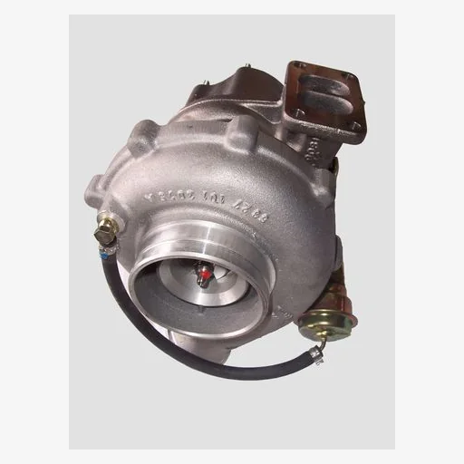
Panoha · CC BY-SA 3.0
Fonte e licençaturboSupercharger
Foto em revisão
Não foi aprovada fotografia profissional de Supercharger com correspondência visual e condição de uso verificável na pesquisa executada. Há 99 entradas de resultado (incluindo repetições/irrelevâncias), 2 falhas de coleta; os resultados e filtros não provam licença nem adequação. As páginas de fornecedor abaixo são somente pistas, sem autorização de reutilização demonstrada.
Alternativa para concluir
Obter autorização escrita do titular para fotografia real de Supercharger, com uso em catálogo público e conversão WebP; ou licenciar fotografia comercial adequada; ou produzir fotografia própria dessa peça com cessão/autorização do fotógrafo. Não substituir por outro componente.
Supercharger: Vista de três quartos mostrando o componente inteiro, bocais, fixações e conexões; remover motor/veículo/contexto de oficina do enquadramento. Fundo branco/neutro, luz difusa, peça completa, foco integral, preferencialmente original de 1600 px ou mais; saída proporcional 512 × 512 sem corte.
Intercooler
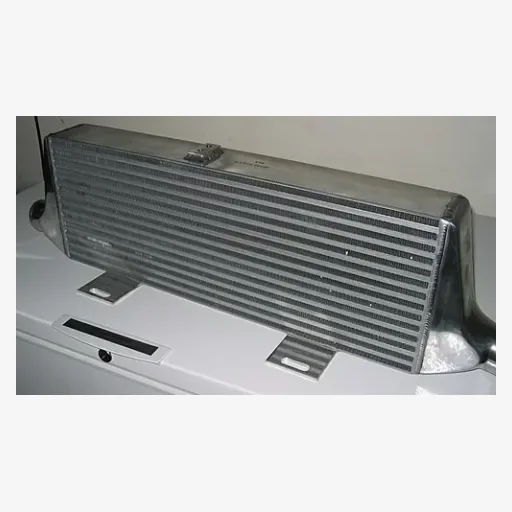
Freonr2 at English Wikipedia · CC BY 2.5
Fonte e licençaintercoolerIntake / filtro esportivo
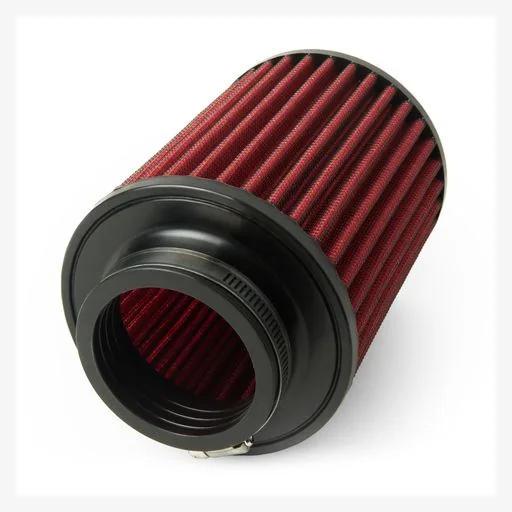
CTS Turbo · Public domain
Fonte e licençaintake-filtro-esportivoColetor de admissão
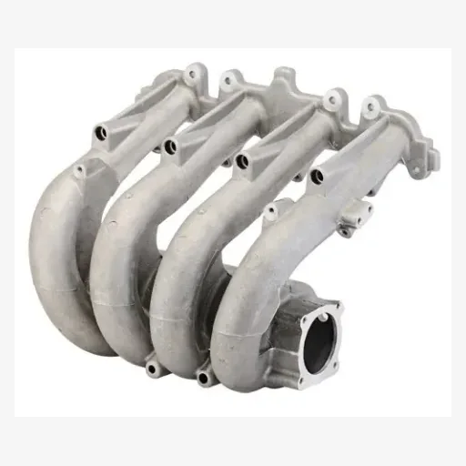
Original uploaded by Arsi Warrior (Transfered by Finavon) · Public domain
Fonte e licençacoletor-admissaoColetor de escape
Foto em revisão
Não foi aprovada fotografia profissional de Coletor de escape com correspondência visual e condição de uso verificável na pesquisa executada. Há 74 entradas de resultado (incluindo repetições/irrelevâncias), 2 falhas de coleta; os resultados e filtros não provam licença nem adequação. As páginas de fornecedor abaixo são somente pistas, sem autorização de reutilização demonstrada.
Alternativa para concluir
Obter autorização escrita do titular para fotografia real de Coletor de escape, com uso em catálogo público e conversão WebP; ou licenciar fotografia comercial adequada; ou produzir fotografia própria dessa peça com cessão/autorização do fotógrafo. Não substituir por outro componente.
Coletor de escape: Vista de três quartos mostrando o componente inteiro, bocais, fixações e conexões; remover motor/veículo/contexto de oficina do enquadramento. Fundo branco/neutro, luz difusa, peça completa, foco integral, preferencialmente original de 1600 px ou mais; saída proporcional 512 × 512 sem corte.
Downpipe
Foto em revisão
Não foi aprovada fotografia profissional de Downpipe com correspondência visual e condição de uso verificável na pesquisa executada. Há 81 entradas de resultado (incluindo repetições/irrelevâncias), 2 falhas de coleta; os resultados e filtros não provam licença nem adequação. As páginas de fornecedor abaixo são somente pistas, sem autorização de reutilização demonstrada.
Alternativa para concluir
Obter autorização escrita do titular para fotografia real de Downpipe, com uso em catálogo público e conversão WebP; ou licenciar fotografia comercial adequada; ou produzir fotografia própria dessa peça com cessão/autorização do fotógrafo. Não substituir por outro componente.
Downpipe: Vista de três quartos mostrando o componente inteiro, bocais, fixações e conexões; remover motor/veículo/contexto de oficina do enquadramento. Fundo branco/neutro, luz difusa, peça completa, foco integral, preferencialmente original de 1600 px ou mais; saída proporcional 512 × 512 sem corte.
Sistema de escapamento
Foto em revisão
Não foi aprovada fotografia profissional de Sistema de escapamento com correspondência visual e condição de uso verificável na pesquisa executada. Há 49 entradas de resultado (incluindo repetições/irrelevâncias), 2 falhas de coleta; os resultados e filtros não provam licença nem adequação. As páginas de fornecedor abaixo são somente pistas, sem autorização de reutilização demonstrada.
Alternativa para concluir
Obter autorização escrita do titular para fotografia real de Sistema de escapamento, com uso em catálogo público e conversão WebP; ou licenciar fotografia comercial adequada; ou produzir fotografia própria dessa peça com cessão/autorização do fotógrafo. Não substituir por outro componente.
Sistema de escapamento: Vista de três quartos mostrando o componente inteiro, bocais, fixações e conexões; remover motor/veículo/contexto de oficina do enquadramento. Fundo branco/neutro, luz difusa, peça completa, foco integral, preferencialmente original de 1600 px ou mais; saída proporcional 512 × 512 sem corte.
Bicos injetores
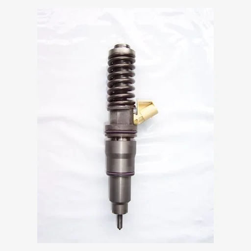
Panoha · CC BY-SA 3.0
Fonte e licençabicos-injetoresBomba de combustível
Foto em revisão
Não foi aprovada fotografia profissional de Bomba de combustível com correspondência visual e condição de uso verificável na pesquisa executada. Há 76 entradas de resultado (incluindo repetições/irrelevâncias), 2 falhas de coleta; os resultados e filtros não provam licença nem adequação. As páginas de fornecedor abaixo são somente pistas, sem autorização de reutilização demonstrada.
Alternativa para concluir
Obter autorização escrita do titular para fotografia real de Bomba de combustível, com uso em catálogo público e conversão WebP; ou licenciar fotografia comercial adequada; ou produzir fotografia própria dessa peça com cessão/autorização do fotógrafo. Não substituir por outro componente.
Bomba de combustível: Vista de três quartos mostrando o componente inteiro, bocais, fixações e conexões; remover motor/veículo/contexto de oficina do enquadramento. Fundo branco/neutro, luz difusa, peça completa, foco integral, preferencialmente original de 1600 px ou mais; saída proporcional 512 × 512 sem corte.
Regulador de pressão de combustível
Foto em revisão
Não foi aprovada fotografia profissional de Regulador de pressão de combustível com correspondência visual e condição de uso verificável na pesquisa executada. Há 74 entradas de resultado (incluindo repetições/irrelevâncias), 2 falhas de coleta; os resultados e filtros não provam licença nem adequação. As páginas de fornecedor abaixo são somente pistas, sem autorização de reutilização demonstrada.
Alternativa para concluir
Obter autorização escrita do titular para fotografia real de Regulador de pressão de combustível, com uso em catálogo público e conversão WebP; ou licenciar fotografia comercial adequada; ou produzir fotografia própria dessa peça com cessão/autorização do fotógrafo. Não substituir por outro componente.
Regulador de pressão de combustível: Vista de três quartos mostrando o componente inteiro, bocais, fixações e conexões; remover motor/veículo/contexto de oficina do enquadramento. Fundo branco/neutro, luz difusa, peça completa, foco integral, preferencialmente original de 1600 px ou mais; saída proporcional 512 × 512 sem corte.
ECU / módulo de injeção
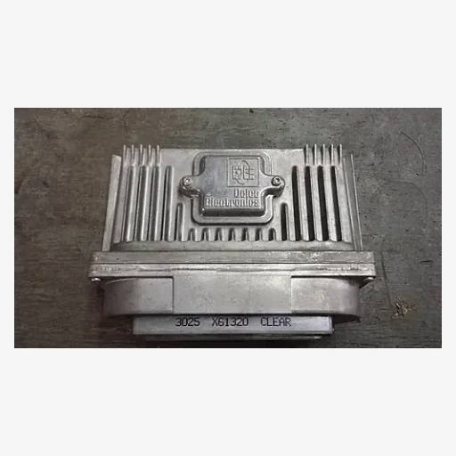
User:Mgiardina09
This photo was taken with Samsung Galaxy S4 · CC BY-SA 3.0
Fonte e licençaecu-moduloBobinas de ignição
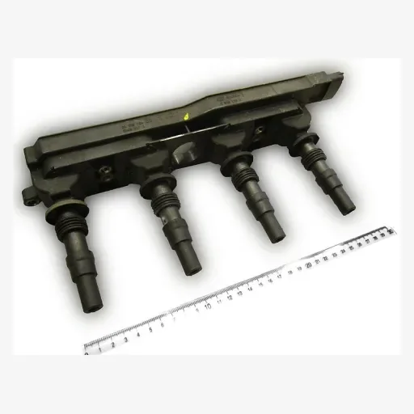
Cschirp · CC BY-SA 3.0 de
Fonte e licençabobinasVelas de ignição
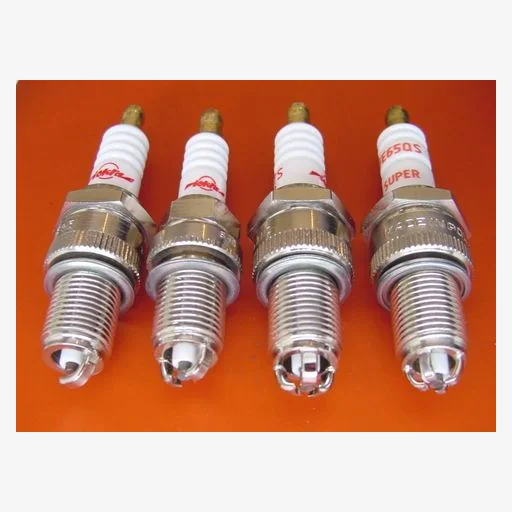
· Public domain
Fonte e licençavelasRadiador de arrefecimento
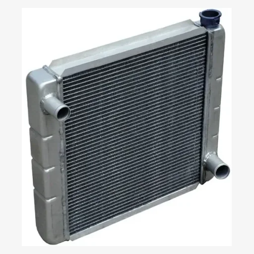
· Public domain
Fonte e licençaradiadorMotor completo
Foto em revisão
Não foi aprovada fotografia profissional de Motor completo com correspondência visual e condição de uso verificável na pesquisa executada. Há 96 entradas de resultado (incluindo repetições/irrelevâncias), 2 falhas de coleta; os resultados e filtros não provam licença nem adequação. As páginas de fornecedor abaixo são somente pistas, sem autorização de reutilização demonstrada.
Alternativa para concluir
Obter autorização escrita do titular para fotografia real de Motor completo, com uso em catálogo público e conversão WebP; ou licenciar fotografia comercial adequada; ou produzir fotografia própria dessa peça com cessão/autorização do fotógrafo. Não substituir por outro componente.
Motor completo: Vista de três quartos mostrando o componente inteiro, bocais, fixações e conexões; remover motor/veículo/contexto de oficina do enquadramento. Fundo branco/neutro, luz difusa, peça completa, foco integral, preferencialmente original de 1600 px ou mais; saída proporcional 512 × 512 sem corte.
Cabeçote
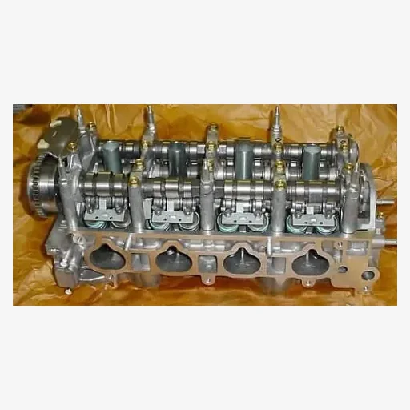
Joe Flores · CC BY-SA 3.0
Fonte e licençacabecoteComando de válvulas
Foto em revisão
Não foi aprovada fotografia profissional de Comando de válvulas com correspondência visual e condição de uso verificável na pesquisa executada. Há 53 entradas de resultado (incluindo repetições/irrelevâncias), 2 falhas de coleta; os resultados e filtros não provam licença nem adequação. As páginas de fornecedor abaixo são somente pistas, sem autorização de reutilização demonstrada.
Alternativa para concluir
Obter autorização escrita do titular para fotografia real de Comando de válvulas, com uso em catálogo público e conversão WebP; ou licenciar fotografia comercial adequada; ou produzir fotografia própria dessa peça com cessão/autorização do fotógrafo. Não substituir por outro componente.
Comando de válvulas: Vista de três quartos mostrando o componente inteiro, bocais, fixações e conexões; remover motor/veículo/contexto de oficina do enquadramento. Fundo branco/neutro, luz difusa, peça completa, foco integral, preferencialmente original de 1600 px ou mais; saída proporcional 512 × 512 sem corte.
Conjunto de pistões e bielas
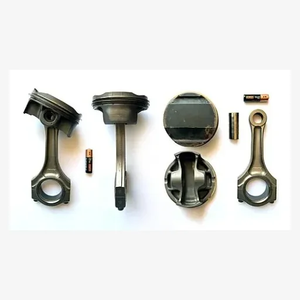
Auge=mit · CC BY-SA 4.0
Fonte e licençapistoes-bielasCoilover
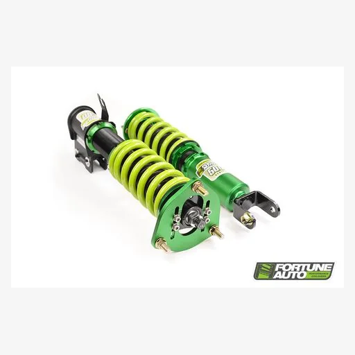
Fortune Auto North America · CC BY-SA 4.0
Fonte e licençacoiloverSuspensão a rosca
Fortune Auto North America · CC BY-SA 4.0
Fonte e licençasuspensao-roscaSuspensão fixa
Foto em revisão
Não foi aprovada fotografia profissional de Suspensão fixa com correspondência visual e condição de uso verificável na pesquisa executada. Há 75 entradas de resultado (incluindo repetições/irrelevâncias), 2 falhas de coleta; os resultados e filtros não provam licença nem adequação. As páginas de fornecedor abaixo são somente pistas, sem autorização de reutilização demonstrada.
Alternativa para concluir
Obter autorização escrita do titular para fotografia real de Suspensão fixa, com uso em catálogo público e conversão WebP; ou licenciar fotografia comercial adequada; ou produzir fotografia própria dessa peça com cessão/autorização do fotógrafo. Não substituir por outro componente.
Suspensão fixa: Vista de três quartos com buchas, articulações ou fixações visíveis; apresentar o conjunto próprio completo, desmontado do veículo. Fundo branco/neutro, luz difusa, peça completa, foco integral, preferencialmente original de 1600 px ou mais; saída proporcional 512 × 512 sem corte.
Molas de suspensão
Foto em revisão
Não foi aprovada fotografia profissional de Molas de suspensão com correspondência visual e condição de uso verificável na pesquisa executada. Há 99 entradas de resultado (incluindo repetições/irrelevâncias), 2 falhas de coleta; os resultados e filtros não provam licença nem adequação. As páginas de fornecedor abaixo são somente pistas, sem autorização de reutilização demonstrada.
Alternativa para concluir
Obter autorização escrita do titular para fotografia real de Molas de suspensão, com uso em catálogo público e conversão WebP; ou licenciar fotografia comercial adequada; ou produzir fotografia própria dessa peça com cessão/autorização do fotógrafo. Não substituir por outro componente.
Molas de suspensão: Vista de três quartos com buchas, articulações ou fixações visíveis; apresentar o conjunto próprio completo, desmontado do veículo. Fundo branco/neutro, luz difusa, peça completa, foco integral, preferencialmente original de 1600 px ou mais; saída proporcional 512 × 512 sem corte.
Amortecedores
Foto em revisão
Não foi aprovada fotografia profissional de Amortecedores com correspondência visual e condição de uso verificável na pesquisa executada. Há 78 entradas de resultado (incluindo repetições/irrelevâncias), 2 falhas de coleta; os resultados e filtros não provam licença nem adequação. As páginas de fornecedor abaixo são somente pistas, sem autorização de reutilização demonstrada.
Alternativa para concluir
Obter autorização escrita do titular para fotografia real de Amortecedores, com uso em catálogo público e conversão WebP; ou licenciar fotografia comercial adequada; ou produzir fotografia própria dessa peça com cessão/autorização do fotógrafo. Não substituir por outro componente.
Amortecedores: Vista de três quartos com buchas, articulações ou fixações visíveis; apresentar o conjunto próprio completo, desmontado do veículo. Fundo branco/neutro, luz difusa, peça completa, foco integral, preferencialmente original de 1600 px ou mais; saída proporcional 512 × 512 sem corte.
Barra estabilizadora
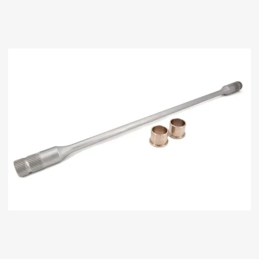
Spidertrax Off-Road · CC BY 2.0
Fonte e licençabarra-estabilizadoraBuchas de suspensão
Foto em revisão
Não foi aprovada fotografia profissional de Buchas de suspensão com correspondência visual e condição de uso verificável na pesquisa executada. Há 52 entradas de resultado (incluindo repetições/irrelevâncias), 2 falhas de coleta; os resultados e filtros não provam licença nem adequação. As páginas de fornecedor abaixo são somente pistas, sem autorização de reutilização demonstrada.
Alternativa para concluir
Obter autorização escrita do titular para fotografia real de Buchas de suspensão, com uso em catálogo público e conversão WebP; ou licenciar fotografia comercial adequada; ou produzir fotografia própria dessa peça com cessão/autorização do fotógrafo. Não substituir por outro componente.
Buchas de suspensão: Vista de três quartos com buchas, articulações ou fixações visíveis; apresentar o conjunto próprio completo, desmontado do veículo. Fundo branco/neutro, luz difusa, peça completa, foco integral, preferencialmente original de 1600 px ou mais; saída proporcional 512 × 512 sem corte.
Braços de suspensão
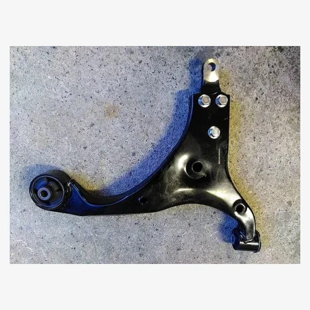
So9q · CC BY-SA 4.0
Fonte e licençabracosKit de ajuste de cambagem
Foto em revisão
A página individual descreve ebay camber plates, e a imagem de 674 × 380 contém marca de terceiro (Speed Motors). O vínculo entre o uploader e o titular da fotografia não foi comprovado; não usar a licença declarada pelo uploader como autorização do fabricante. Solicitar autorização ao titular ou obter fotografia própria.
Alternativa para concluir
Obter autorização escrita do titular para fotografia real de Kit de ajuste de cambagem, com uso em catálogo público e conversão WebP; ou licenciar fotografia comercial adequada; ou produzir fotografia própria dessa peça com cessão/autorização do fotógrafo. Não substituir por outro componente.
Kit de ajuste de cambagem: Vista de três quartos com buchas, articulações ou fixações visíveis; apresentar o conjunto próprio completo, desmontado do veículo. Fundo branco/neutro, luz difusa, peça completa, foco integral, preferencialmente original de 1600 px ou mais; saída proporcional 512 × 512 sem corte.
Reforços estruturais
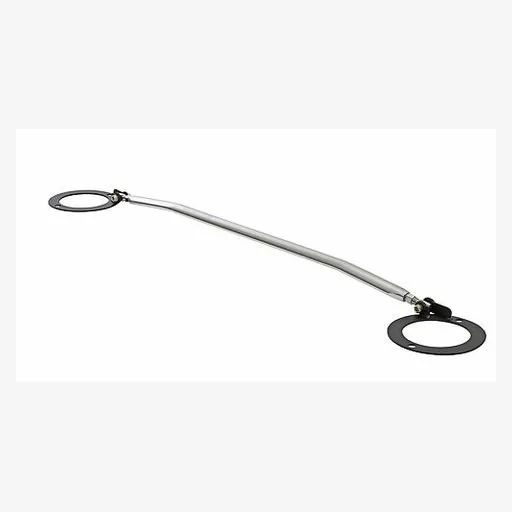
Techsport at English Wikipedia · Public domain
Fonte e licençareforcos-estruturaisDiscos de freio
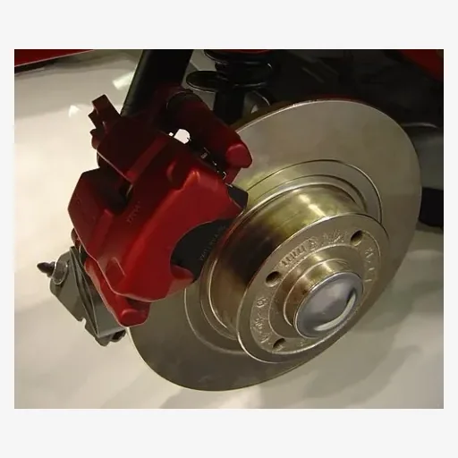
David Monniaux · CC BY-SA 3.0
Fonte e licençadiscosPinças de freio
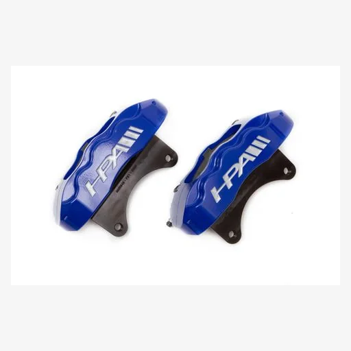
HPA Motorsports · CC BY 2.0
Fonte e licençapincasPastilhas de freio
Foto em revisão
Não foi aprovada fotografia profissional de Pastilhas de freio com correspondência visual e condição de uso verificável na pesquisa executada. Há 101 entradas de resultado (incluindo repetições/irrelevâncias), 2 falhas de coleta; os resultados e filtros não provam licença nem adequação. As páginas de fornecedor abaixo são somente pistas, sem autorização de reutilização demonstrada.
Alternativa para concluir
Obter autorização escrita do titular para fotografia real de Pastilhas de freio, com uso em catálogo público e conversão WebP; ou licenciar fotografia comercial adequada; ou produzir fotografia própria dessa peça com cessão/autorização do fotógrafo. Não substituir por outro componente.
Pastilhas de freio: Vista de três quartos com conexões hidráulicas, superfície de atrito ou fixações identificáveis; não usar peças de bicicleta nem material excessivamente desgastado. Fundo branco/neutro, luz difusa, peça completa, foco integral, preferencialmente original de 1600 px ou mais; saída proporcional 512 × 512 sem corte.
Flexíveis de freio
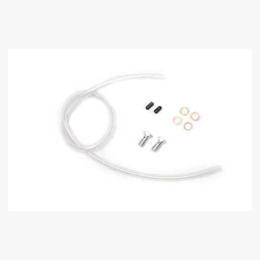
HPA Motorsports · CC BY 2.0
Fonte e licençamangueirasKit de freios de performance
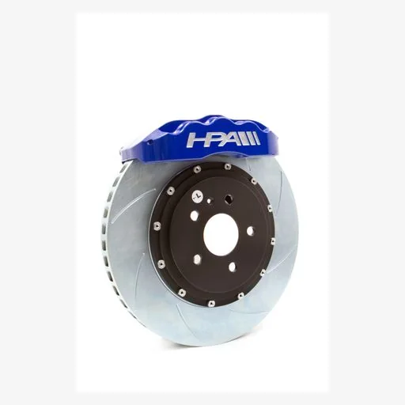
HPA Motorsports · CC BY 2.0
Fonte e licençakit-freioRodas
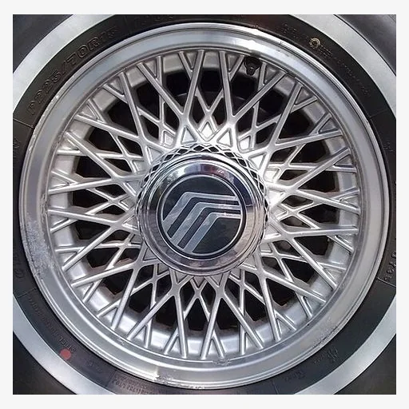
Ruben de Rijcke · CC BY-SA 3.0
Fonte e licençarodasPneus
Foto em revisão
Não foi aprovada fotografia profissional de Pneus com correspondência visual e condição de uso verificável na pesquisa executada. Há 100 entradas de resultado (incluindo repetições/irrelevâncias), 2 falhas de coleta; os resultados e filtros não provam licença nem adequação. As páginas de fornecedor abaixo são somente pistas, sem autorização de reutilização demonstrada.
Alternativa para concluir
Obter autorização escrita do titular para fotografia real de Pneus, com uso em catálogo público e conversão WebP; ou licenciar fotografia comercial adequada; ou produzir fotografia própria dessa peça com cessão/autorização do fotógrafo. Não substituir por outro componente.
Pneus: Vista de três quartos da peça isolada, mostrando furos, roscas, assento ou banda de rodagem conforme o componente. Fundo branco/neutro, luz difusa, peça completa, foco integral, preferencialmente original de 1600 px ou mais; saída proporcional 512 × 512 sem corte.
Espaçadores de roda
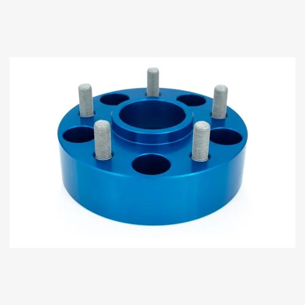
Spidertrax Off-Road · CC BY 2.0
Fonte e licençaespacadoresAdaptadores de roda
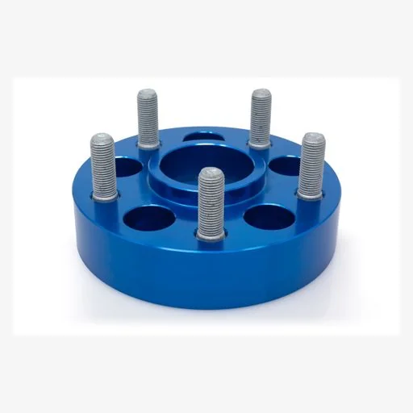
Spidertrax Off-Road · CC BY 2.0
Fonte e licençaadaptadoresCâmbio
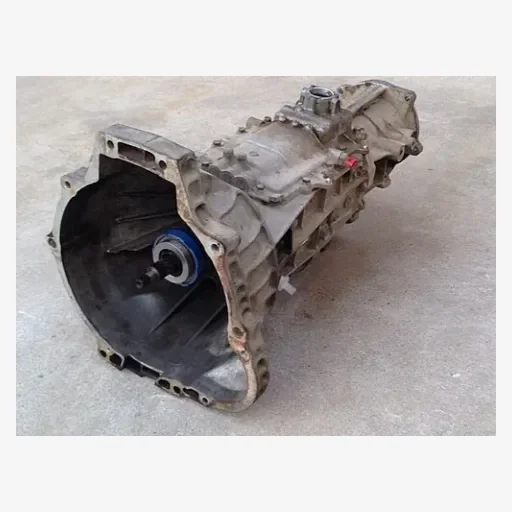
J.C. Fields (Talk) (Uploads) · CC BY-SA 3.0
Fonte e licençacambioEmbreagem
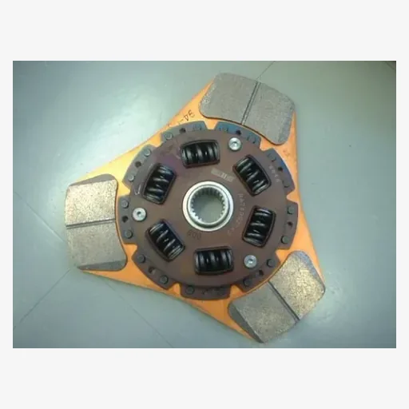
100yen 11:57, 1 October 2006 (UTC) · CC BY-SA 3.0
Fonte e licençaembreagemDiferencial
Foto em revisão
Não foi aprovada fotografia profissional de Diferencial com correspondência visual e condição de uso verificável na pesquisa executada. Há 74 entradas de resultado (incluindo repetições/irrelevâncias), 2 falhas de coleta; os resultados e filtros não provam licença nem adequação. As páginas de fornecedor abaixo são somente pistas, sem autorização de reutilização demonstrada.
Alternativa para concluir
Obter autorização escrita do titular para fotografia real de Diferencial, com uso em catálogo público e conversão WebP; ou licenciar fotografia comercial adequada; ou produzir fotografia própria dessa peça com cessão/autorização do fotógrafo. Não substituir por outro componente.
Diferencial: Vista de três quartos da peça completa, mostrando eixos, engrenagens ou conexões; não substituir componente por carcaça vazia ou conjunto diferente. Fundo branco/neutro, luz difusa, peça completa, foco integral, preferencialmente original de 1600 px ou mais; saída proporcional 512 × 512 sem corte.
Engate rápido de câmbio
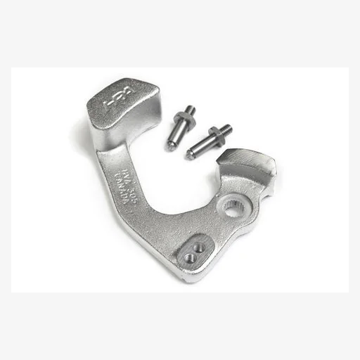
HPA Motorsports · CC BY 2.0
Fonte e licençashort-shifterAlavanca de câmbio
Foto em revisão
Não foi aprovada fotografia profissional de Alavanca de câmbio com correspondência visual e condição de uso verificável na pesquisa executada. Há 81 entradas de resultado (incluindo repetições/irrelevâncias), 2 falhas de coleta; os resultados e filtros não provam licença nem adequação. As páginas de fornecedor abaixo são somente pistas, sem autorização de reutilização demonstrada.
Alternativa para concluir
Obter autorização escrita do titular para fotografia real de Alavanca de câmbio, com uso em catálogo público e conversão WebP; ou licenciar fotografia comercial adequada; ou produzir fotografia própria dessa peça com cessão/autorização do fotógrafo. Não substituir por outro componente.
Alavanca de câmbio: Vista de três quartos da peça completa, mostrando eixos, engrenagens ou conexões; não substituir componente por carcaça vazia ou conjunto diferente. Fundo branco/neutro, luz difusa, peça completa, foco integral, preferencialmente original de 1600 px ou mais; saída proporcional 512 × 512 sem corte.
Engrenagens de câmbio
Foto em revisão
Não foi aprovada fotografia profissional de Engrenagens de câmbio com correspondência visual e condição de uso verificável na pesquisa executada. Há 54 entradas de resultado (incluindo repetições/irrelevâncias), 2 falhas de coleta; os resultados e filtros não provam licença nem adequação. As páginas de fornecedor abaixo são somente pistas, sem autorização de reutilização demonstrada.
Alternativa para concluir
Obter autorização escrita do titular para fotografia real de Engrenagens de câmbio, com uso em catálogo público e conversão WebP; ou licenciar fotografia comercial adequada; ou produzir fotografia própria dessa peça com cessão/autorização do fotógrafo. Não substituir por outro componente.
Engrenagens de câmbio: Vista de três quartos da peça completa, mostrando eixos, engrenagens ou conexões; não substituir componente por carcaça vazia ou conjunto diferente. Fundo branco/neutro, luz difusa, peça completa, foco integral, preferencialmente original de 1600 px ou mais; saída proporcional 512 × 512 sem corte.
Banco esportivo reclinável
Foto em revisão
Não foi aprovada fotografia profissional de Banco esportivo reclinável com correspondência visual e condição de uso verificável na pesquisa executada. Há 39 entradas de resultado (incluindo repetições/irrelevâncias), 2 falhas de coleta; os resultados e filtros não provam licença nem adequação. As páginas de fornecedor abaixo são somente pistas, sem autorização de reutilização demonstrada.
Alternativa para concluir
Obter autorização escrita do titular para fotografia real de Banco esportivo reclinável, com uso em catálogo público e conversão WebP; ou licenciar fotografia comercial adequada; ou produzir fotografia própria dessa peça com cessão/autorização do fotógrafo. Não substituir por outro componente.
Banco esportivo reclinável: Vista de três quartos do acessório fora do veículo, com pontos de montagem visíveis; evitar painel/cabine inteira como representação. Fundo branco/neutro, luz difusa, peça completa, foco integral, preferencialmente original de 1600 px ou mais; saída proporcional 512 × 512 sem corte.
Banco concha
Foto em revisão
Não foi aprovada fotografia profissional de Banco concha com correspondência visual e condição de uso verificável na pesquisa executada. Há 76 entradas de resultado (incluindo repetições/irrelevâncias), 2 falhas de coleta; os resultados e filtros não provam licença nem adequação. As páginas de fornecedor abaixo são somente pistas, sem autorização de reutilização demonstrada.
Alternativa para concluir
Obter autorização escrita do titular para fotografia real de Banco concha, com uso em catálogo público e conversão WebP; ou licenciar fotografia comercial adequada; ou produzir fotografia própria dessa peça com cessão/autorização do fotógrafo. Não substituir por outro componente.
Banco concha: Vista de três quartos do acessório fora do veículo, com pontos de montagem visíveis; evitar painel/cabine inteira como representação. Fundo branco/neutro, luz difusa, peça completa, foco integral, preferencialmente original de 1600 px ou mais; saída proporcional 512 × 512 sem corte.
Volante esportivo
Foto em revisão
Não foi aprovada fotografia profissional de Volante esportivo com correspondência visual e condição de uso verificável na pesquisa executada. Há 93 entradas de resultado (incluindo repetições/irrelevâncias), 2 falhas de coleta; os resultados e filtros não provam licença nem adequação. As páginas de fornecedor abaixo são somente pistas, sem autorização de reutilização demonstrada.
Alternativa para concluir
Obter autorização escrita do titular para fotografia real de Volante esportivo, com uso em catálogo público e conversão WebP; ou licenciar fotografia comercial adequada; ou produzir fotografia própria dessa peça com cessão/autorização do fotógrafo. Não substituir por outro componente.
Volante esportivo: Vista de três quartos do acessório fora do veículo, com pontos de montagem visíveis; evitar painel/cabine inteira como representação. Fundo branco/neutro, luz difusa, peça completa, foco integral, preferencialmente original de 1600 px ou mais; saída proporcional 512 × 512 sem corte.
Manopla de câmbio
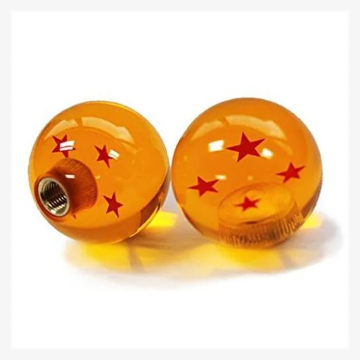
Theflameless · CC BY-SA 4.0
Fonte e licençamanoplaPedaleiras
Foto em revisão
Não foi aprovada fotografia profissional de Pedaleiras com correspondência visual e condição de uso verificável na pesquisa executada. Há 111 entradas de resultado (incluindo repetições/irrelevâncias), 2 falhas de coleta; os resultados e filtros não provam licença nem adequação. As páginas de fornecedor abaixo são somente pistas, sem autorização de reutilização demonstrada.
Alternativa para concluir
Obter autorização escrita do titular para fotografia real de Pedaleiras, com uso em catálogo público e conversão WebP; ou licenciar fotografia comercial adequada; ou produzir fotografia própria dessa peça com cessão/autorização do fotógrafo. Não substituir por outro componente.
Pedaleiras: Vista de três quartos do acessório fora do veículo, com pontos de montagem visíveis; evitar painel/cabine inteira como representação. Fundo branco/neutro, luz difusa, peça completa, foco integral, preferencialmente original de 1600 px ou mais; saída proporcional 512 × 512 sem corte.
Cintos de segurança
Foto em revisão
Não foi aprovada fotografia profissional de Cintos de segurança com correspondência visual e condição de uso verificável na pesquisa executada. Há 96 entradas de resultado (incluindo repetições/irrelevâncias), 2 falhas de coleta; os resultados e filtros não provam licença nem adequação. As páginas de fornecedor abaixo são somente pistas, sem autorização de reutilização demonstrada.
Alternativa para concluir
Obter autorização escrita do titular para fotografia real de Cintos de segurança, com uso em catálogo público e conversão WebP; ou licenciar fotografia comercial adequada; ou produzir fotografia própria dessa peça com cessão/autorização do fotógrafo. Não substituir por outro componente.
Cintos de segurança: Vista de três quartos do acessório fora do veículo, com pontos de montagem visíveis; evitar painel/cabine inteira como representação. Fundo branco/neutro, luz difusa, peça completa, foco integral, preferencialmente original de 1600 px ou mais; saída proporcional 512 × 512 sem corte.
Gaiola de proteção
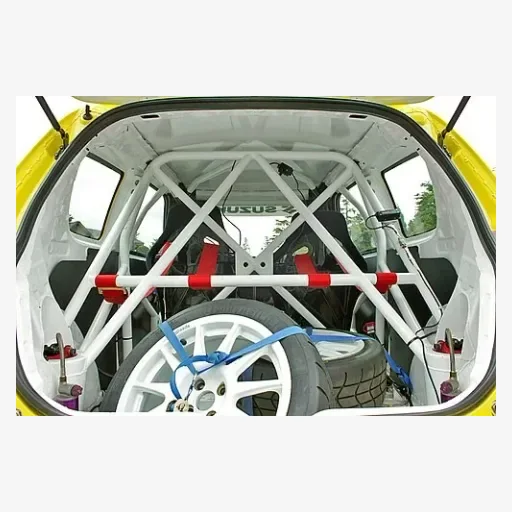
Tennen-Gas · CC BY-SA 3.0
Fonte e licençaroll-cageConjunto de instrumentos
Foto em revisão
Não foi aprovada fotografia profissional de Conjunto de instrumentos com correspondência visual e condição de uso verificável na pesquisa executada. Há 56 entradas de resultado (incluindo repetições/irrelevâncias), 2 falhas de coleta; os resultados e filtros não provam licença nem adequação. As páginas de fornecedor abaixo são somente pistas, sem autorização de reutilização demonstrada.
Alternativa para concluir
Obter autorização escrita do titular para fotografia real de Conjunto de instrumentos, com uso em catálogo público e conversão WebP; ou licenciar fotografia comercial adequada; ou produzir fotografia própria dessa peça com cessão/autorização do fotógrafo. Não substituir por outro componente.
Conjunto de instrumentos: Vista de três quartos do acessório fora do veículo, com pontos de montagem visíveis; evitar painel/cabine inteira como representação. Fundo branco/neutro, luz difusa, peça completa, foco integral, preferencialmente original de 1600 px ou mais; saída proporcional 512 × 512 sem corte.
Luz de troca de marcha
Foto em revisão
Não foi aprovada fotografia profissional de Luz de troca de marcha com correspondência visual e condição de uso verificável na pesquisa executada. Há 111 entradas de resultado (incluindo repetições/irrelevâncias), 2 falhas de coleta; os resultados e filtros não provam licença nem adequação. As páginas de fornecedor abaixo são somente pistas, sem autorização de reutilização demonstrada.
Alternativa para concluir
Obter autorização escrita do titular para fotografia real de Luz de troca de marcha, com uso em catálogo público e conversão WebP; ou licenciar fotografia comercial adequada; ou produzir fotografia própria dessa peça com cessão/autorização do fotógrafo. Não substituir por outro componente.
Luz de troca de marcha: Vista de três quartos do acessório fora do veículo, com pontos de montagem visíveis; evitar painel/cabine inteira como representação. Fundo branco/neutro, luz difusa, peça completa, foco integral, preferencialmente original de 1600 px ou mais; saída proporcional 512 × 512 sem corte.
Painel digital
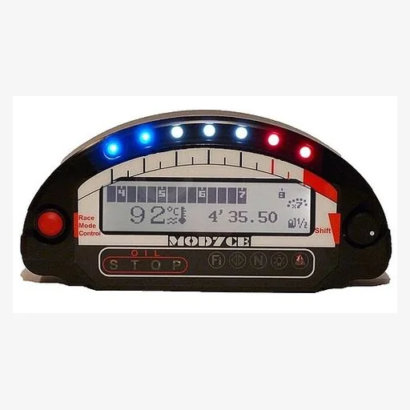
Philippe BALZANO MOD7CE · CC BY-SA 3.0
Fonte e licençapainel-digitalAerofólio
Foto em revisão
Não foi aprovada fotografia profissional de Aerofólio com correspondência visual e condição de uso verificável na pesquisa executada. Há 59 entradas de resultado (incluindo repetições/irrelevâncias), 2 falhas de coleta; os resultados e filtros não provam licença nem adequação. As páginas de fornecedor abaixo são somente pistas, sem autorização de reutilização demonstrada.
Alternativa para concluir
Obter autorização escrita do titular para fotografia real de Aerofólio, com uso em catálogo público e conversão WebP; ou licenciar fotografia comercial adequada; ou produzir fotografia própria dessa peça com cessão/autorização do fotógrafo. Não substituir por outro componente.
Aerofólio: Vista de três quartos da peça desmontada e inteira; peças longas em enquadramento horizontal, sem usar veículo equipado para substituir a fotografia do acessório. Fundo branco/neutro, luz difusa, peça completa, foco integral, preferencialmente original de 1600 px ou mais; saída proporcional 512 × 512 sem corte.
Spoiler traseiro
Foto em revisão
Não foi aprovada fotografia profissional de Spoiler traseiro com correspondência visual e condição de uso verificável na pesquisa executada. Há 53 entradas de resultado (incluindo repetições/irrelevâncias), 2 falhas de coleta; os resultados e filtros não provam licença nem adequação. As páginas de fornecedor abaixo são somente pistas, sem autorização de reutilização demonstrada.
Alternativa para concluir
Obter autorização escrita do titular para fotografia real de Spoiler traseiro, com uso em catálogo público e conversão WebP; ou licenciar fotografia comercial adequada; ou produzir fotografia própria dessa peça com cessão/autorização do fotógrafo. Não substituir por outro componente.
Spoiler traseiro: Vista de três quartos da peça desmontada e inteira; peças longas em enquadramento horizontal, sem usar veículo equipado para substituir a fotografia do acessório. Fundo branco/neutro, luz difusa, peça completa, foco integral, preferencialmente original de 1600 px ou mais; saída proporcional 512 × 512 sem corte.
Lip dianteiro
Foto em revisão
Não foi aprovada fotografia profissional de Lip dianteiro com correspondência visual e condição de uso verificável na pesquisa executada. Há 74 entradas de resultado (incluindo repetições/irrelevâncias), 2 falhas de coleta; os resultados e filtros não provam licença nem adequação. As páginas de fornecedor abaixo são somente pistas, sem autorização de reutilização demonstrada.
Alternativa para concluir
Obter autorização escrita do titular para fotografia real de Lip dianteiro, com uso em catálogo público e conversão WebP; ou licenciar fotografia comercial adequada; ou produzir fotografia própria dessa peça com cessão/autorização do fotógrafo. Não substituir por outro componente.
Lip dianteiro: Vista de três quartos da peça desmontada e inteira; peças longas em enquadramento horizontal, sem usar veículo equipado para substituir a fotografia do acessório. Fundo branco/neutro, luz difusa, peça completa, foco integral, preferencialmente original de 1600 px ou mais; saída proporcional 512 × 512 sem corte.
Saias laterais
Foto em revisão
Não foi aprovada fotografia profissional de Saias laterais com correspondência visual e condição de uso verificável na pesquisa executada. Há 99 entradas de resultado (incluindo repetições/irrelevâncias), 2 falhas de coleta; os resultados e filtros não provam licença nem adequação. As páginas de fornecedor abaixo são somente pistas, sem autorização de reutilização demonstrada.
Alternativa para concluir
Obter autorização escrita do titular para fotografia real de Saias laterais, com uso em catálogo público e conversão WebP; ou licenciar fotografia comercial adequada; ou produzir fotografia própria dessa peça com cessão/autorização do fotógrafo. Não substituir por outro componente.
Saias laterais: Vista de três quartos da peça desmontada e inteira; peças longas em enquadramento horizontal, sem usar veículo equipado para substituir a fotografia do acessório. Fundo branco/neutro, luz difusa, peça completa, foco integral, preferencialmente original de 1600 px ou mais; saída proporcional 512 × 512 sem corte.
Difusor traseiro
Foto em revisão
Não foi aprovada fotografia profissional de Difusor traseiro com correspondência visual e condição de uso verificável na pesquisa executada. Há 99 entradas de resultado (incluindo repetições/irrelevâncias), 2 falhas de coleta; os resultados e filtros não provam licença nem adequação. As páginas de fornecedor abaixo são somente pistas, sem autorização de reutilização demonstrada.
Alternativa para concluir
Obter autorização escrita do titular para fotografia real de Difusor traseiro, com uso em catálogo público e conversão WebP; ou licenciar fotografia comercial adequada; ou produzir fotografia própria dessa peça com cessão/autorização do fotógrafo. Não substituir por outro componente.
Difusor traseiro: Vista de três quartos da peça desmontada e inteira; peças longas em enquadramento horizontal, sem usar veículo equipado para substituir a fotografia do acessório. Fundo branco/neutro, luz difusa, peça completa, foco integral, preferencialmente original de 1600 px ou mais; saída proporcional 512 × 512 sem corte.
Kit de carroceria
Foto em revisão
Não foi aprovada fotografia profissional de Kit de carroceria com correspondência visual e condição de uso verificável na pesquisa executada. Há 74 entradas de resultado (incluindo repetições/irrelevâncias), 2 falhas de coleta; os resultados e filtros não provam licença nem adequação. As páginas de fornecedor abaixo são somente pistas, sem autorização de reutilização demonstrada.
Alternativa para concluir
Obter autorização escrita do titular para fotografia real de Kit de carroceria, com uso em catálogo público e conversão WebP; ou licenciar fotografia comercial adequada; ou produzir fotografia própria dessa peça com cessão/autorização do fotógrafo. Não substituir por outro componente.
Kit de carroceria: Vista de três quartos da peça desmontada e inteira; peças longas em enquadramento horizontal, sem usar veículo equipado para substituir a fotografia do acessório. Fundo branco/neutro, luz difusa, peça completa, foco integral, preferencialmente original de 1600 px ou mais; saída proporcional 512 × 512 sem corte.
Capô
Foto em revisão
Não foi aprovada fotografia profissional de Capô com correspondência visual e condição de uso verificável na pesquisa executada. Há 126 entradas de resultado (incluindo repetições/irrelevâncias), 2 falhas de coleta; os resultados e filtros não provam licença nem adequação. As páginas de fornecedor abaixo são somente pistas, sem autorização de reutilização demonstrada.
Alternativa para concluir
Obter autorização escrita do titular para fotografia real de Capô, com uso em catálogo público e conversão WebP; ou licenciar fotografia comercial adequada; ou produzir fotografia própria dessa peça com cessão/autorização do fotógrafo. Não substituir por outro componente.
Capô: Vista de três quartos da peça desmontada e inteira; peças longas em enquadramento horizontal, sem usar veículo equipado para substituir a fotografia do acessório. Fundo branco/neutro, luz difusa, peça completa, foco integral, preferencialmente original de 1600 px ou mais; saída proporcional 512 × 512 sem corte.
Para-choque
Foto em revisão
Não foi aprovada fotografia profissional de Para-choque com correspondência visual e condição de uso verificável na pesquisa executada. Há 106 entradas de resultado (incluindo repetições/irrelevâncias), 2 falhas de coleta; os resultados e filtros não provam licença nem adequação. As páginas de fornecedor abaixo são somente pistas, sem autorização de reutilização demonstrada.
Alternativa para concluir
Obter autorização escrita do titular para fotografia real de Para-choque, com uso em catálogo público e conversão WebP; ou licenciar fotografia comercial adequada; ou produzir fotografia própria dessa peça com cessão/autorização do fotógrafo. Não substituir por outro componente.
Para-choque: Vista de três quartos da peça desmontada e inteira; peças longas em enquadramento horizontal, sem usar veículo equipado para substituir a fotografia do acessório. Fundo branco/neutro, luz difusa, peça completa, foco integral, preferencialmente original de 1600 px ou mais; saída proporcional 512 × 512 sem corte.
Retrovisores
Foto em revisão
Não foi aprovada fotografia profissional de Retrovisores com correspondência visual e condição de uso verificável na pesquisa executada. Há 113 entradas de resultado (incluindo repetições/irrelevâncias), 2 falhas de coleta; os resultados e filtros não provam licença nem adequação. As páginas de fornecedor abaixo são somente pistas, sem autorização de reutilização demonstrada.
Alternativa para concluir
Obter autorização escrita do titular para fotografia real de Retrovisores, com uso em catálogo público e conversão WebP; ou licenciar fotografia comercial adequada; ou produzir fotografia própria dessa peça com cessão/autorização do fotógrafo. Não substituir por outro componente.
Retrovisores: Vista de três quartos da peça desmontada e inteira; peças longas em enquadramento horizontal, sem usar veículo equipado para substituir a fotografia do acessório. Fundo branco/neutro, luz difusa, peça completa, foco integral, preferencialmente original de 1600 px ou mais; saída proporcional 512 × 512 sem corte.
Faróis principais
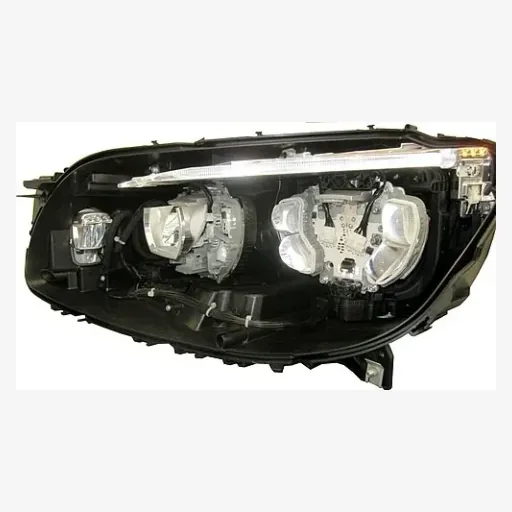
Cschirp · CC BY-SA 3.0
Fonte e licençafaroisLanternas traseiras
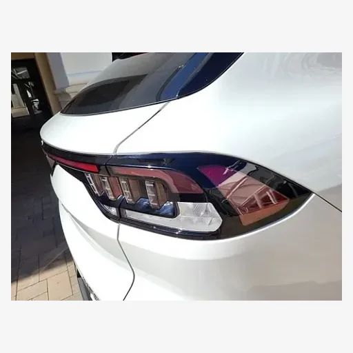
Famster99 · CC BY-SA 4.0
Fonte e licençalanternasFaróis auxiliares
Foto em revisão
O original contém a identificação ALANG7 3D DESIGN e representa modelagem/render, não fotografia real. Recusado apesar da licença CC BY 2.0 e do enquadramento aparentemente profissional.
Alternativa para concluir
Obter autorização escrita do titular para fotografia real de Faróis auxiliares, com uso em catálogo público e conversão WebP; ou licenciar fotografia comercial adequada; ou produzir fotografia própria dessa peça com cessão/autorização do fotógrafo. Não substituir por outro componente.
Faróis auxiliares: Vista frontal de três quartos do conjunto isolado, com lente e fixação visíveis; aceitar somente fotografia real, não render de jogo/modelagem. Fundo branco/neutro, luz difusa, peça completa, foco integral, preferencialmente original de 1600 px ou mais; saída proporcional 512 × 512 sem corte.
Luzes de rodagem diurna
Foto em revisão
Não foi aprovada fotografia profissional de Luzes de rodagem diurna com correspondência visual e condição de uso verificável na pesquisa executada. Há 77 entradas de resultado (incluindo repetições/irrelevâncias), 2 falhas de coleta; os resultados e filtros não provam licença nem adequação. As páginas de fornecedor abaixo são somente pistas, sem autorização de reutilização demonstrada.
Alternativa para concluir
Obter autorização escrita do titular para fotografia real de Luzes de rodagem diurna, com uso em catálogo público e conversão WebP; ou licenciar fotografia comercial adequada; ou produzir fotografia própria dessa peça com cessão/autorização do fotógrafo. Não substituir por outro componente.
Luzes de rodagem diurna: Vista frontal de três quartos do conjunto isolado, com lente e fixação visíveis; aceitar somente fotografia real, não render de jogo/modelagem. Fundo branco/neutro, luz difusa, peça completa, foco integral, preferencialmente original de 1600 px ou mais; saída proporcional 512 × 512 sem corte.
Iluminação interna
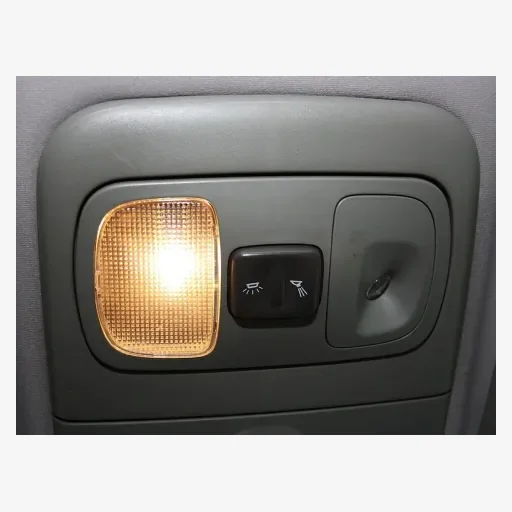
Lionel Allorge · CC BY-SA 3.0
Fonte e licençailuminacao-internaChicote elétrico
Foto em revisão
Não foi aprovada fotografia profissional de Chicote elétrico com correspondência visual e condição de uso verificável na pesquisa executada. Há 51 entradas de resultado (incluindo repetições/irrelevâncias), 2 falhas de coleta; os resultados e filtros não provam licença nem adequação. As páginas de fornecedor abaixo são somente pistas, sem autorização de reutilização demonstrada.
Alternativa para concluir
Obter autorização escrita do titular para fotografia real de Chicote elétrico, com uso em catálogo público e conversão WebP; ou licenciar fotografia comercial adequada; ou produzir fotografia própria dessa peça com cessão/autorização do fotógrafo. Não substituir por outro componente.
Chicote elétrico: Vista de três quartos do componente isolado, com conectores e identificação funcional visíveis; não usar placas eletrônicas genéricas ou sensores de outra finalidade. Fundo branco/neutro, luz difusa, peça completa, foco integral, preferencialmente original de 1600 px ou mais; saída proporcional 512 × 512 sem corte.
Relés automotivos
Foto em revisão
Embora corresponda a relés automotivos e tenha CC BY-SA 3.0, o enquadramento é muito justo no terminal do relé vermelho à direita e a fonte em cache tem somente 500 × 236 px para quatro unidades. Não aprovada como fotografia profissional do componente isolado; buscar relé único em maior resolução.
Alternativa para concluir
Obter autorização escrita do titular para fotografia real de Relés automotivos, com uso em catálogo público e conversão WebP; ou licenciar fotografia comercial adequada; ou produzir fotografia própria dessa peça com cessão/autorização do fotógrafo. Não substituir por outro componente.
Relés automotivos: Vista de três quartos do componente isolado, com conectores e identificação funcional visíveis; não usar placas eletrônicas genéricas ou sensores de outra finalidade. Fundo branco/neutro, luz difusa, peça completa, foco integral, preferencialmente original de 1600 px ou mais; saída proporcional 512 × 512 sem corte.
Fusíveis automotivos
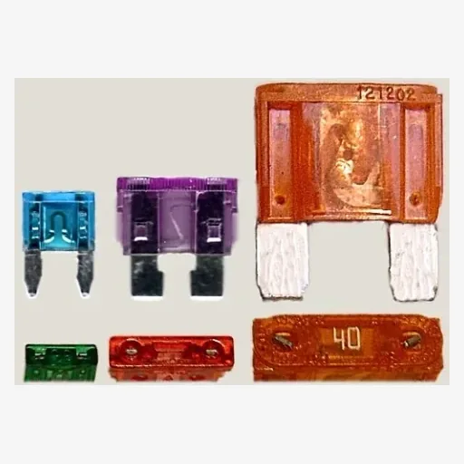
havarhen · CC BY-SA 3.0
Fonte e licençafusiveisSensores automotivos
Foto em revisão
Não foi aprovada fotografia profissional de Sensores automotivos com correspondência visual e condição de uso verificável na pesquisa executada. Há 75 entradas de resultado (incluindo repetições/irrelevâncias), 2 falhas de coleta; os resultados e filtros não provam licença nem adequação. As páginas de fornecedor abaixo são somente pistas, sem autorização de reutilização demonstrada.
Alternativa para concluir
Obter autorização escrita do titular para fotografia real de Sensores automotivos, com uso em catálogo público e conversão WebP; ou licenciar fotografia comercial adequada; ou produzir fotografia própria dessa peça com cessão/autorização do fotógrafo. Não substituir por outro componente.
Sensores automotivos: Vista de três quartos do componente isolado, com conectores e identificação funcional visíveis; não usar placas eletrônicas genéricas ou sensores de outra finalidade. Fundo branco/neutro, luz difusa, peça completa, foco integral, preferencialmente original de 1600 px ou mais; saída proporcional 512 × 512 sem corte.
Kit de sonda wideband
Foto em revisão
Não foi aprovada fotografia profissional de Kit de sonda wideband com correspondência visual e condição de uso verificável na pesquisa executada. Há 25 entradas de resultado (incluindo repetições/irrelevâncias), 2 falhas de coleta; os resultados e filtros não provam licença nem adequação. As páginas de fornecedor abaixo são somente pistas, sem autorização de reutilização demonstrada.
Alternativa para concluir
Obter autorização escrita do titular para fotografia real de Kit de sonda wideband, com uso em catálogo público e conversão WebP; ou licenciar fotografia comercial adequada; ou produzir fotografia própria dessa peça com cessão/autorização do fotógrafo. Não substituir por outro componente.
Kit de sonda wideband: Vista de três quartos do componente isolado, com conectores e identificação funcional visíveis; não usar placas eletrônicas genéricas ou sensores de outra finalidade. Fundo branco/neutro, luz difusa, peça completa, foco integral, preferencialmente original de 1600 px ou mais; saída proporcional 512 × 512 sem corte.
Instrumentação elétrica
Foto em revisão
Não foi aprovada fotografia profissional de Instrumentação elétrica com correspondência visual e condição de uso verificável na pesquisa executada. Há 55 entradas de resultado (incluindo repetições/irrelevâncias), 2 falhas de coleta; os resultados e filtros não provam licença nem adequação. As páginas de fornecedor abaixo são somente pistas, sem autorização de reutilização demonstrada.
Alternativa para concluir
Obter autorização escrita do titular para fotografia real de Instrumentação elétrica, com uso em catálogo público e conversão WebP; ou licenciar fotografia comercial adequada; ou produzir fotografia própria dessa peça com cessão/autorização do fotógrafo. Não substituir por outro componente.
Instrumentação elétrica: Vista de três quartos do componente isolado, com conectores e identificação funcional visíveis; não usar placas eletrônicas genéricas ou sensores de outra finalidade. Fundo branco/neutro, luz difusa, peça completa, foco integral, preferencialmente original de 1600 px ou mais; saída proporcional 512 × 512 sem corte.
Sistema elétrico customizado
Foto em revisão
Não foi aprovada fotografia profissional de Sistema elétrico customizado com correspondência visual e condição de uso verificável na pesquisa executada. Há 49 entradas de resultado (incluindo repetições/irrelevâncias), 2 falhas de coleta; os resultados e filtros não provam licença nem adequação. As páginas de fornecedor abaixo são somente pistas, sem autorização de reutilização demonstrada.
Alternativa para concluir
Obter autorização escrita do titular para fotografia real de Sistema elétrico customizado, com uso em catálogo público e conversão WebP; ou licenciar fotografia comercial adequada; ou produzir fotografia própria dessa peça com cessão/autorização do fotógrafo. Não substituir por outro componente.
Sistema elétrico customizado: Vista de três quartos do componente isolado, com conectores e identificação funcional visíveis; não usar placas eletrônicas genéricas ou sensores de outra finalidade. Fundo branco/neutro, luz difusa, peça completa, foco integral, preferencialmente original de 1600 px ou mais; saída proporcional 512 × 512 sem corte.
Alto-falantes automotivos
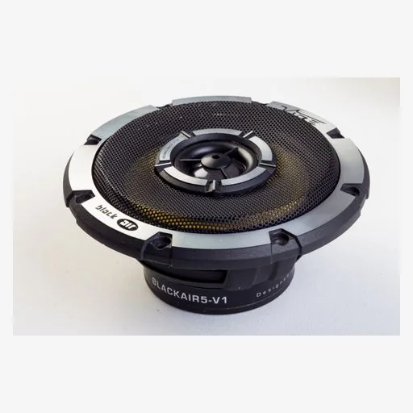
VIBE Audio · CC BY 2.0
Fonte e licençaalto-falantesSubwoofer
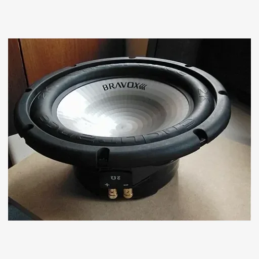
Matias.Reccius at English Wikipedia · Public domain
Fonte e licençasubwooferAmplificador automotivo
Foto em revisão
Não foi aprovada fotografia profissional de Amplificador automotivo com correspondência visual e condição de uso verificável na pesquisa executada. Há 50 entradas de resultado (incluindo repetições/irrelevâncias), 2 falhas de coleta; os resultados e filtros não provam licença nem adequação. As páginas de fornecedor abaixo são somente pistas, sem autorização de reutilização demonstrada.
Alternativa para concluir
Obter autorização escrita do titular para fotografia real de Amplificador automotivo, com uso em catálogo público e conversão WebP; ou licenciar fotografia comercial adequada; ou produzir fotografia própria dessa peça com cessão/autorização do fotógrafo. Não substituir por outro componente.
Amplificador automotivo: Vista de três quartos do equipamento isolado, incluindo controles/conectores relevantes; distinguir amplificador, crossover, conversor e transdutor. Fundo branco/neutro, luz difusa, peça completa, foco integral, preferencialmente original de 1600 px ou mais; saída proporcional 512 × 512 sem corte.
Central multimídia
Foto em revisão
Não foi aprovada fotografia profissional de Central multimídia com correspondência visual e condição de uso verificável na pesquisa executada. Há 49 entradas de resultado (incluindo repetições/irrelevâncias), 2 falhas de coleta; os resultados e filtros não provam licença nem adequação. As páginas de fornecedor abaixo são somente pistas, sem autorização de reutilização demonstrada.
Alternativa para concluir
Obter autorização escrita do titular para fotografia real de Central multimídia, com uso em catálogo público e conversão WebP; ou licenciar fotografia comercial adequada; ou produzir fotografia própria dessa peça com cessão/autorização do fotógrafo. Não substituir por outro componente.
Central multimídia: Vista de três quartos do equipamento isolado, incluindo controles/conectores relevantes; distinguir amplificador, crossover, conversor e transdutor. Fundo branco/neutro, luz difusa, peça completa, foco integral, preferencialmente original de 1600 px ou mais; saída proporcional 512 × 512 sem corte.
Válvula wastegate
Foto em revisão
Não foi aprovada fotografia profissional de Válvula wastegate com correspondência visual e condição de uso verificável na pesquisa executada. Há 39 entradas de resultado (incluindo repetições/irrelevâncias), 2 falhas de coleta; os resultados e filtros não provam licença nem adequação. As páginas de fornecedor abaixo são somente pistas, sem autorização de reutilização demonstrada.
Alternativa para concluir
Obter autorização escrita do titular para fotografia real de Válvula wastegate, com uso em catálogo público e conversão WebP; ou licenciar fotografia comercial adequada; ou produzir fotografia própria dessa peça com cessão/autorização do fotógrafo. Não substituir por outro componente.
Válvula wastegate: Vista de três quartos mostrando o componente inteiro, bocais, fixações e conexões; remover motor/veículo/contexto de oficina do enquadramento. Fundo branco/neutro, luz difusa, peça completa, foco integral, preferencialmente original de 1600 px ou mais; saída proporcional 512 × 512 sem corte.
Válvula blow-off
Foto em revisão
Não foi aprovada fotografia profissional de Válvula blow-off com correspondência visual e condição de uso verificável na pesquisa executada. Há 26 entradas de resultado (incluindo repetições/irrelevâncias), 2 falhas de coleta; os resultados e filtros não provam licença nem adequação. As páginas de fornecedor abaixo são somente pistas, sem autorização de reutilização demonstrada.
Alternativa para concluir
Obter autorização escrita do titular para fotografia real de Válvula blow-off, com uso em catálogo público e conversão WebP; ou licenciar fotografia comercial adequada; ou produzir fotografia própria dessa peça com cessão/autorização do fotógrafo. Não substituir por outro componente.
Válvula blow-off: Vista de três quartos mostrando o componente inteiro, bocais, fixações e conexões; remover motor/veículo/contexto de oficina do enquadramento. Fundo branco/neutro, luz difusa, peça completa, foco integral, preferencialmente original de 1600 px ou mais; saída proporcional 512 × 512 sem corte.
Atuador de wastegate
Foto em revisão
Não foi aprovada fotografia profissional de Atuador de wastegate com correspondência visual e condição de uso verificável na pesquisa executada. Há 11 entradas de resultado (incluindo repetições/irrelevâncias), 2 falhas de coleta; os resultados e filtros não provam licença nem adequação. As páginas de fornecedor abaixo são somente pistas, sem autorização de reutilização demonstrada.
Alternativa para concluir
Obter autorização escrita do titular para fotografia real de Atuador de wastegate, com uso em catálogo público e conversão WebP; ou licenciar fotografia comercial adequada; ou produzir fotografia própria dessa peça com cessão/autorização do fotógrafo. Não substituir por outro componente.
Atuador de wastegate: Vista de três quartos mostrando o componente inteiro, bocais, fixações e conexões; remover motor/veículo/contexto de oficina do enquadramento. Fundo branco/neutro, luz difusa, peça completa, foco integral, preferencialmente original de 1600 px ou mais; saída proporcional 512 × 512 sem corte.
Controlador de pressão do turbo
Foto em revisão
Não foi aprovada fotografia profissional de Controlador de pressão do turbo com correspondência visual e condição de uso verificável na pesquisa executada. Há 74 entradas de resultado (incluindo repetições/irrelevâncias), 2 falhas de coleta; os resultados e filtros não provam licença nem adequação. As páginas de fornecedor abaixo são somente pistas, sem autorização de reutilização demonstrada.
Alternativa para concluir
Obter autorização escrita do titular para fotografia real de Controlador de pressão do turbo, com uso em catálogo público e conversão WebP; ou licenciar fotografia comercial adequada; ou produzir fotografia própria dessa peça com cessão/autorização do fotógrafo. Não substituir por outro componente.
Controlador de pressão do turbo: Vista de três quartos mostrando o componente inteiro, bocais, fixações e conexões; remover motor/veículo/contexto de oficina do enquadramento. Fundo branco/neutro, luz difusa, peça completa, foco integral, preferencialmente original de 1600 px ou mais; saída proporcional 512 × 512 sem corte.
Tubulação de pressurização
Foto em revisão
Não foi aprovada fotografia profissional de Tubulação de pressurização com correspondência visual e condição de uso verificável na pesquisa executada. Há 73 entradas de resultado (incluindo repetições/irrelevâncias), 2 falhas de coleta; os resultados e filtros não provam licença nem adequação. As páginas de fornecedor abaixo são somente pistas, sem autorização de reutilização demonstrada.
Alternativa para concluir
Obter autorização escrita do titular para fotografia real de Tubulação de pressurização, com uso em catálogo público e conversão WebP; ou licenciar fotografia comercial adequada; ou produzir fotografia própria dessa peça com cessão/autorização do fotógrafo. Não substituir por outro componente.
Tubulação de pressurização: Vista de três quartos mostrando o componente inteiro, bocais, fixações e conexões; remover motor/veículo/contexto de oficina do enquadramento. Fundo branco/neutro, luz difusa, peça completa, foco integral, preferencialmente original de 1600 px ou mais; saída proporcional 512 × 512 sem corte.
Mangotes de admissão
Foto em revisão
Não foi aprovada fotografia profissional de Mangotes de admissão com correspondência visual e condição de uso verificável na pesquisa executada. Há 34 entradas de resultado (incluindo repetições/irrelevâncias), 2 falhas de coleta; os resultados e filtros não provam licença nem adequação. As páginas de fornecedor abaixo são somente pistas, sem autorização de reutilização demonstrada.
Alternativa para concluir
Obter autorização escrita do titular para fotografia real de Mangotes de admissão, com uso em catálogo público e conversão WebP; ou licenciar fotografia comercial adequada; ou produzir fotografia própria dessa peça com cessão/autorização do fotógrafo. Não substituir por outro componente.
Mangotes de admissão: Vista de três quartos mostrando o componente inteiro, bocais, fixações e conexões; remover motor/veículo/contexto de oficina do enquadramento. Fundo branco/neutro, luz difusa, peça completa, foco integral, preferencialmente original de 1600 px ou mais; saída proporcional 512 × 512 sem corte.
Flange de turbocompressor
Foto em revisão
Não foi aprovada fotografia profissional de Flange de turbocompressor com correspondência visual e condição de uso verificável na pesquisa executada. Há 56 entradas de resultado (incluindo repetições/irrelevâncias), 2 falhas de coleta; os resultados e filtros não provam licença nem adequação. As páginas de fornecedor abaixo são somente pistas, sem autorização de reutilização demonstrada.
Alternativa para concluir
Obter autorização escrita do titular para fotografia real de Flange de turbocompressor, com uso em catálogo público e conversão WebP; ou licenciar fotografia comercial adequada; ou produzir fotografia própria dessa peça com cessão/autorização do fotógrafo. Não substituir por outro componente.
Flange de turbocompressor: Vista de três quartos mostrando o componente inteiro, bocais, fixações e conexões; remover motor/veículo/contexto de oficina do enquadramento. Fundo branco/neutro, luz difusa, peça completa, foco integral, preferencialmente original de 1600 px ou mais; saída proporcional 512 × 512 sem corte.
Manta térmica de turbo
Foto em revisão
Não foi aprovada fotografia profissional de Manta térmica de turbo com correspondência visual e condição de uso verificável na pesquisa executada. Há 54 entradas de resultado (incluindo repetições/irrelevâncias), 2 falhas de coleta; os resultados e filtros não provam licença nem adequação. As páginas de fornecedor abaixo são somente pistas, sem autorização de reutilização demonstrada.
Alternativa para concluir
Obter autorização escrita do titular para fotografia real de Manta térmica de turbo, com uso em catálogo público e conversão WebP; ou licenciar fotografia comercial adequada; ou produzir fotografia própria dessa peça com cessão/autorização do fotógrafo. Não substituir por outro componente.
Manta térmica de turbo: Vista de três quartos mostrando o componente inteiro, bocais, fixações e conexões; remover motor/veículo/contexto de oficina do enquadramento. Fundo branco/neutro, luz difusa, peça completa, foco integral, preferencialmente original de 1600 px ou mais; saída proporcional 512 × 512 sem corte.
Linha de óleo do turbo
Foto em revisão
Não foi aprovada fotografia profissional de Linha de óleo do turbo com correspondência visual e condição de uso verificável na pesquisa executada. Há 49 entradas de resultado (incluindo repetições/irrelevâncias), 2 falhas de coleta; os resultados e filtros não provam licença nem adequação. As páginas de fornecedor abaixo são somente pistas, sem autorização de reutilização demonstrada.
Alternativa para concluir
Obter autorização escrita do titular para fotografia real de Linha de óleo do turbo, com uso em catálogo público e conversão WebP; ou licenciar fotografia comercial adequada; ou produzir fotografia própria dessa peça com cessão/autorização do fotógrafo. Não substituir por outro componente.
Linha de óleo do turbo: Vista de três quartos mostrando o componente inteiro, bocais, fixações e conexões; remover motor/veículo/contexto de oficina do enquadramento. Fundo branco/neutro, luz difusa, peça completa, foco integral, preferencialmente original de 1600 px ou mais; saída proporcional 512 × 512 sem corte.
Corpo de borboleta
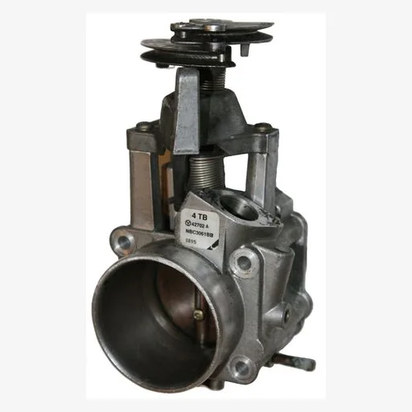
Magnus Bäck · Public domain
Fonte e licençacorpo-borboletaCarburador
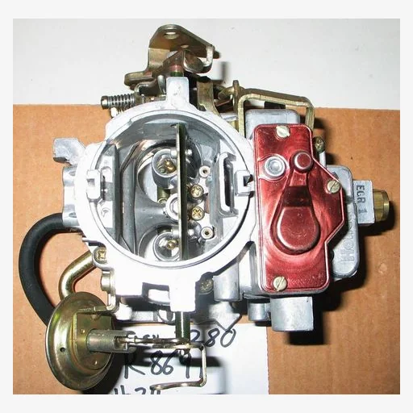
Scheinwerfermann · Public domain
Fonte e licençacarburadorCornetas de admissão
Foto em revisão
Não foi aprovada fotografia profissional de Cornetas de admissão com correspondência visual e condição de uso verificável na pesquisa executada. Há 88 entradas de resultado (incluindo repetições/irrelevâncias), 2 falhas de coleta; os resultados e filtros não provam licença nem adequação. As páginas de fornecedor abaixo são somente pistas, sem autorização de reutilização demonstrada.
Alternativa para concluir
Obter autorização escrita do titular para fotografia real de Cornetas de admissão, com uso em catálogo público e conversão WebP; ou licenciar fotografia comercial adequada; ou produzir fotografia própria dessa peça com cessão/autorização do fotógrafo. Não substituir por outro componente.
Cornetas de admissão: Vista de três quartos mostrando o componente inteiro, bocais, fixações e conexões; remover motor/veículo/contexto de oficina do enquadramento. Fundo branco/neutro, luz difusa, peça completa, foco integral, preferencialmente original de 1600 px ou mais; saída proporcional 512 × 512 sem corte.
Reservatório de respiro de óleo
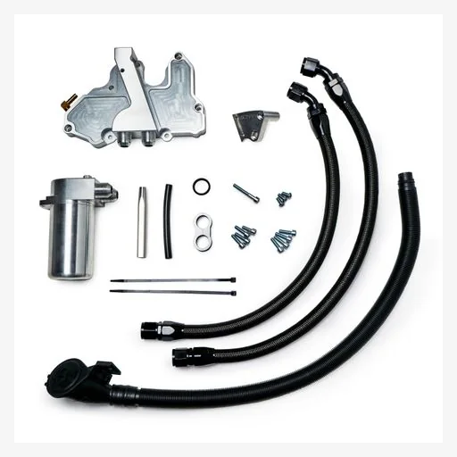
CTS Turbo · Public domain
Fonte e licençareservatorio-respiroFiltro de combustível
Foto em revisão
Não foi aprovada fotografia profissional de Filtro de combustível com correspondência visual e condição de uso verificável na pesquisa executada. Há 99 entradas de resultado (incluindo repetições/irrelevâncias), 2 falhas de coleta; os resultados e filtros não provam licença nem adequação. As páginas de fornecedor abaixo são somente pistas, sem autorização de reutilização demonstrada.
Alternativa para concluir
Obter autorização escrita do titular para fotografia real de Filtro de combustível, com uso em catálogo público e conversão WebP; ou licenciar fotografia comercial adequada; ou produzir fotografia própria dessa peça com cessão/autorização do fotógrafo. Não substituir por outro componente.
Filtro de combustível: Vista de três quartos mostrando o componente inteiro, bocais, fixações e conexões; remover motor/veículo/contexto de oficina do enquadramento. Fundo branco/neutro, luz difusa, peça completa, foco integral, preferencialmente original de 1600 px ou mais; saída proporcional 512 × 512 sem corte.
Flauta de combustível
Foto em revisão
Não foi aprovada fotografia profissional de Flauta de combustível com correspondência visual e condição de uso verificável na pesquisa executada. Há 104 entradas de resultado (incluindo repetições/irrelevâncias), 2 falhas de coleta; os resultados e filtros não provam licença nem adequação. As páginas de fornecedor abaixo são somente pistas, sem autorização de reutilização demonstrada.
Alternativa para concluir
Obter autorização escrita do titular para fotografia real de Flauta de combustível, com uso em catálogo público e conversão WebP; ou licenciar fotografia comercial adequada; ou produzir fotografia própria dessa peça com cessão/autorização do fotógrafo. Não substituir por outro componente.
Flauta de combustível: Vista de três quartos mostrando o componente inteiro, bocais, fixações e conexões; remover motor/veículo/contexto de oficina do enquadramento. Fundo branco/neutro, luz difusa, peça completa, foco integral, preferencialmente original de 1600 px ou mais; saída proporcional 512 × 512 sem corte.
Reservatório auxiliar de combustível
Foto em revisão
Não foi aprovada fotografia profissional de Reservatório auxiliar de combustível com correspondência visual e condição de uso verificável na pesquisa executada. Há 50 entradas de resultado (incluindo repetições/irrelevâncias), 2 falhas de coleta; os resultados e filtros não provam licença nem adequação. As páginas de fornecedor abaixo são somente pistas, sem autorização de reutilização demonstrada.
Alternativa para concluir
Obter autorização escrita do titular para fotografia real de Reservatório auxiliar de combustível, com uso em catálogo público e conversão WebP; ou licenciar fotografia comercial adequada; ou produzir fotografia própria dessa peça com cessão/autorização do fotógrafo. Não substituir por outro componente.
Reservatório auxiliar de combustível: Vista de três quartos mostrando o componente inteiro, bocais, fixações e conexões; remover motor/veículo/contexto de oficina do enquadramento. Fundo branco/neutro, luz difusa, peça completa, foco integral, preferencialmente original de 1600 px ou mais; saída proporcional 512 × 512 sem corte.
Célula de combustível automotiva
Foto em revisão
Não foi aprovada fotografia profissional de Célula de combustível automotiva com correspondência visual e condição de uso verificável na pesquisa executada. Há 49 entradas de resultado (incluindo repetições/irrelevâncias), 2 falhas de coleta; os resultados e filtros não provam licença nem adequação. As páginas de fornecedor abaixo são somente pistas, sem autorização de reutilização demonstrada.
Alternativa para concluir
Obter autorização escrita do titular para fotografia real de Célula de combustível automotiva, com uso em catálogo público e conversão WebP; ou licenciar fotografia comercial adequada; ou produzir fotografia própria dessa peça com cessão/autorização do fotógrafo. Não substituir por outro componente.
Célula de combustível automotiva: Vista de três quartos mostrando o componente inteiro, bocais, fixações e conexões; remover motor/veículo/contexto de oficina do enquadramento. Fundo branco/neutro, luz difusa, peça completa, foco integral, preferencialmente original de 1600 px ou mais; saída proporcional 512 × 512 sem corte.
Linhas de combustível
Foto em revisão
Não foi aprovada fotografia profissional de Linhas de combustível com correspondência visual e condição de uso verificável na pesquisa executada. Há 82 entradas de resultado (incluindo repetições/irrelevâncias), 2 falhas de coleta; os resultados e filtros não provam licença nem adequação. As páginas de fornecedor abaixo são somente pistas, sem autorização de reutilização demonstrada.
Alternativa para concluir
Obter autorização escrita do titular para fotografia real de Linhas de combustível, com uso em catálogo público e conversão WebP; ou licenciar fotografia comercial adequada; ou produzir fotografia própria dessa peça com cessão/autorização do fotógrafo. Não substituir por outro componente.
Linhas de combustível: Vista de três quartos mostrando o componente inteiro, bocais, fixações e conexões; remover motor/veículo/contexto de oficina do enquadramento. Fundo branco/neutro, luz difusa, peça completa, foco integral, preferencialmente original de 1600 px ou mais; saída proporcional 512 × 512 sem corte.
Cabos de vela
Foto em revisão
Não foi aprovada fotografia profissional de Cabos de vela com correspondência visual e condição de uso verificável na pesquisa executada. Há 58 entradas de resultado (incluindo repetições/irrelevâncias), 2 falhas de coleta; os resultados e filtros não provam licença nem adequação. As páginas de fornecedor abaixo são somente pistas, sem autorização de reutilização demonstrada.
Alternativa para concluir
Obter autorização escrita do titular para fotografia real de Cabos de vela, com uso em catálogo público e conversão WebP; ou licenciar fotografia comercial adequada; ou produzir fotografia própria dessa peça com cessão/autorização do fotógrafo. Não substituir por outro componente.
Cabos de vela: Vista de três quartos mostrando o componente inteiro, bocais, fixações e conexões; remover motor/veículo/contexto de oficina do enquadramento. Fundo branco/neutro, luz difusa, peça completa, foco integral, preferencialmente original de 1600 px ou mais; saída proporcional 512 × 512 sem corte.
Módulo de ignição
Foto em revisão
Não foi aprovada fotografia profissional de Módulo de ignição com correspondência visual e condição de uso verificável na pesquisa executada. Há 52 entradas de resultado (incluindo repetições/irrelevâncias), 2 falhas de coleta; os resultados e filtros não provam licença nem adequação. As páginas de fornecedor abaixo são somente pistas, sem autorização de reutilização demonstrada.
Alternativa para concluir
Obter autorização escrita do titular para fotografia real de Módulo de ignição, com uso em catálogo público e conversão WebP; ou licenciar fotografia comercial adequada; ou produzir fotografia própria dessa peça com cessão/autorização do fotógrafo. Não substituir por outro componente.
Módulo de ignição: Vista de três quartos mostrando o componente inteiro, bocais, fixações e conexões; remover motor/veículo/contexto de oficina do enquadramento. Fundo branco/neutro, luz difusa, peça completa, foco integral, preferencialmente original de 1600 px ou mais; saída proporcional 512 × 512 sem corte.
Distribuidor de ignição
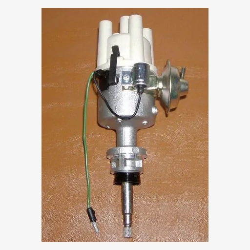
Elwood · Public domain
Fonte e licençadistribuidorVirabrequim
Foto em revisão
Não foi aprovada fotografia profissional de Virabrequim com correspondência visual e condição de uso verificável na pesquisa executada. Há 85 entradas de resultado (incluindo repetições/irrelevâncias), 2 falhas de coleta; os resultados e filtros não provam licença nem adequação. As páginas de fornecedor abaixo são somente pistas, sem autorização de reutilização demonstrada.
Alternativa para concluir
Obter autorização escrita do titular para fotografia real de Virabrequim, com uso em catálogo público e conversão WebP; ou licenciar fotografia comercial adequada; ou produzir fotografia própria dessa peça com cessão/autorização do fotógrafo. Não substituir por outro componente.
Virabrequim: Vista de três quartos mostrando o componente inteiro, bocais, fixações e conexões; remover motor/veículo/contexto de oficina do enquadramento. Fundo branco/neutro, luz difusa, peça completa, foco integral, preferencialmente original de 1600 px ou mais; saída proporcional 512 × 512 sem corte.
Válvulas do motor
Foto em revisão
Não foi aprovada fotografia profissional de Válvulas do motor com correspondência visual e condição de uso verificável na pesquisa executada. Há 99 entradas de resultado (incluindo repetições/irrelevâncias), 2 falhas de coleta; os resultados e filtros não provam licença nem adequação. As páginas de fornecedor abaixo são somente pistas, sem autorização de reutilização demonstrada.
Alternativa para concluir
Obter autorização escrita do titular para fotografia real de Válvulas do motor, com uso em catálogo público e conversão WebP; ou licenciar fotografia comercial adequada; ou produzir fotografia própria dessa peça com cessão/autorização do fotógrafo. Não substituir por outro componente.
Válvulas do motor: Vista de três quartos mostrando o componente inteiro, bocais, fixações e conexões; remover motor/veículo/contexto de oficina do enquadramento. Fundo branco/neutro, luz difusa, peça completa, foco integral, preferencialmente original de 1600 px ou mais; saída proporcional 512 × 512 sem corte.
Molas de válvulas
Foto em revisão
Não foi aprovada fotografia profissional de Molas de válvulas com correspondência visual e condição de uso verificável na pesquisa executada. Há 101 entradas de resultado (incluindo repetições/irrelevâncias), 2 falhas de coleta; os resultados e filtros não provam licença nem adequação. As páginas de fornecedor abaixo são somente pistas, sem autorização de reutilização demonstrada.
Alternativa para concluir
Obter autorização escrita do titular para fotografia real de Molas de válvulas, com uso em catálogo público e conversão WebP; ou licenciar fotografia comercial adequada; ou produzir fotografia própria dessa peça com cessão/autorização do fotógrafo. Não substituir por outro componente.
Molas de válvulas: Vista de três quartos mostrando o componente inteiro, bocais, fixações e conexões; remover motor/veículo/contexto de oficina do enquadramento. Fundo branco/neutro, luz difusa, peça completa, foco integral, preferencialmente original de 1600 px ou mais; saída proporcional 512 × 512 sem corte.
Pratos e travas de válvulas
Foto em revisão
Não foi aprovada fotografia profissional de Pratos e travas de válvulas com correspondência visual e condição de uso verificável na pesquisa executada. Há 49 entradas de resultado (incluindo repetições/irrelevâncias), 2 falhas de coleta; os resultados e filtros não provam licença nem adequação. As páginas de fornecedor abaixo são somente pistas, sem autorização de reutilização demonstrada.
Alternativa para concluir
Obter autorização escrita do titular para fotografia real de Pratos e travas de válvulas, com uso em catálogo público e conversão WebP; ou licenciar fotografia comercial adequada; ou produzir fotografia própria dessa peça com cessão/autorização do fotógrafo. Não substituir por outro componente.
Pratos e travas de válvulas: Vista de três quartos mostrando o componente inteiro, bocais, fixações e conexões; remover motor/veículo/contexto de oficina do enquadramento. Fundo branco/neutro, luz difusa, peça completa, foco integral, preferencialmente original de 1600 px ou mais; saída proporcional 512 × 512 sem corte.
Polia de comando regulável
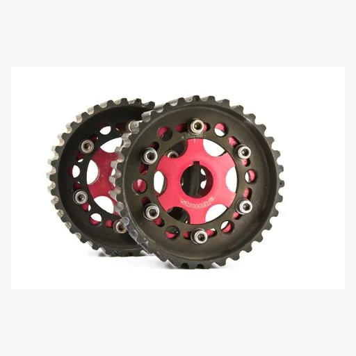
Garry dr · CC BY-ND 2.0
Fonte e licençapolia-comandoJunta de cabeçote
Foto em revisão
Não foi aprovada fotografia profissional de Junta de cabeçote com correspondência visual e condição de uso verificável na pesquisa executada. Há 99 entradas de resultado (incluindo repetições/irrelevâncias), 2 falhas de coleta; os resultados e filtros não provam licença nem adequação. As páginas de fornecedor abaixo são somente pistas, sem autorização de reutilização demonstrada.
Alternativa para concluir
Obter autorização escrita do titular para fotografia real de Junta de cabeçote, com uso em catálogo público e conversão WebP; ou licenciar fotografia comercial adequada; ou produzir fotografia própria dessa peça com cessão/autorização do fotógrafo. Não substituir por outro componente.
Junta de cabeçote: Vista de três quartos mostrando o componente inteiro, bocais, fixações e conexões; remover motor/veículo/contexto de oficina do enquadramento. Fundo branco/neutro, luz difusa, peça completa, foco integral, preferencialmente original de 1600 px ou mais; saída proporcional 512 × 512 sem corte.
Prisioneiros de motor
Foto em revisão
Não foi aprovada fotografia profissional de Prisioneiros de motor com correspondência visual e condição de uso verificável na pesquisa executada. Há 51 entradas de resultado (incluindo repetições/irrelevâncias), 2 falhas de coleta; os resultados e filtros não provam licença nem adequação. As páginas de fornecedor abaixo são somente pistas, sem autorização de reutilização demonstrada.
Alternativa para concluir
Obter autorização escrita do titular para fotografia real de Prisioneiros de motor, com uso em catálogo público e conversão WebP; ou licenciar fotografia comercial adequada; ou produzir fotografia própria dessa peça com cessão/autorização do fotógrafo. Não substituir por outro componente.
Prisioneiros de motor: Vista de três quartos mostrando o componente inteiro, bocais, fixações e conexões; remover motor/veículo/contexto de oficina do enquadramento. Fundo branco/neutro, luz difusa, peça completa, foco integral, preferencialmente original de 1600 px ou mais; saída proporcional 512 × 512 sem corte.
Bronzinas de motor
Foto em revisão
Não foi aprovada fotografia profissional de Bronzinas de motor com correspondência visual e condição de uso verificável na pesquisa executada. Há 55 entradas de resultado (incluindo repetições/irrelevâncias), 2 falhas de coleta; os resultados e filtros não provam licença nem adequação. As páginas de fornecedor abaixo são somente pistas, sem autorização de reutilização demonstrada.
Alternativa para concluir
Obter autorização escrita do titular para fotografia real de Bronzinas de motor, com uso em catálogo público e conversão WebP; ou licenciar fotografia comercial adequada; ou produzir fotografia própria dessa peça com cessão/autorização do fotógrafo. Não substituir por outro componente.
Bronzinas de motor: Vista de três quartos mostrando o componente inteiro, bocais, fixações e conexões; remover motor/veículo/contexto de oficina do enquadramento. Fundo branco/neutro, luz difusa, peça completa, foco integral, preferencialmente original de 1600 px ou mais; saída proporcional 512 × 512 sem corte.
Bomba de óleo
Foto em revisão
Não foi aprovada fotografia profissional de Bomba de óleo com correspondência visual e condição de uso verificável na pesquisa executada. Há 101 entradas de resultado (incluindo repetições/irrelevâncias), 2 falhas de coleta; os resultados e filtros não provam licença nem adequação. As páginas de fornecedor abaixo são somente pistas, sem autorização de reutilização demonstrada.
Alternativa para concluir
Obter autorização escrita do titular para fotografia real de Bomba de óleo, com uso em catálogo público e conversão WebP; ou licenciar fotografia comercial adequada; ou produzir fotografia própria dessa peça com cessão/autorização do fotógrafo. Não substituir por outro componente.
Bomba de óleo: Vista de três quartos mostrando o componente inteiro, bocais, fixações e conexões; remover motor/veículo/contexto de oficina do enquadramento. Fundo branco/neutro, luz difusa, peça completa, foco integral, preferencialmente original de 1600 px ou mais; saída proporcional 512 × 512 sem corte.
Cárter de óleo
Foto em revisão
Não foi aprovada fotografia profissional de Cárter de óleo com correspondência visual e condição de uso verificável na pesquisa executada. Há 102 entradas de resultado (incluindo repetições/irrelevâncias), 2 falhas de coleta; os resultados e filtros não provam licença nem adequação. As páginas de fornecedor abaixo são somente pistas, sem autorização de reutilização demonstrada.
Alternativa para concluir
Obter autorização escrita do titular para fotografia real de Cárter de óleo, com uso em catálogo público e conversão WebP; ou licenciar fotografia comercial adequada; ou produzir fotografia própria dessa peça com cessão/autorização do fotógrafo. Não substituir por outro componente.
Cárter de óleo: Vista de três quartos mostrando o componente inteiro, bocais, fixações e conexões; remover motor/veículo/contexto de oficina do enquadramento. Fundo branco/neutro, luz difusa, peça completa, foco integral, preferencialmente original de 1600 px ou mais; saída proporcional 512 × 512 sem corte.
Sistema de cárter seco
Foto em revisão
Não foi aprovada fotografia profissional de Sistema de cárter seco com correspondência visual e condição de uso verificável na pesquisa executada. Há 99 entradas de resultado (incluindo repetições/irrelevâncias), 2 falhas de coleta; os resultados e filtros não provam licença nem adequação. As páginas de fornecedor abaixo são somente pistas, sem autorização de reutilização demonstrada.
Alternativa para concluir
Obter autorização escrita do titular para fotografia real de Sistema de cárter seco, com uso em catálogo público e conversão WebP; ou licenciar fotografia comercial adequada; ou produzir fotografia própria dessa peça com cessão/autorização do fotógrafo. Não substituir por outro componente.
Sistema de cárter seco: Vista de três quartos mostrando o componente inteiro, bocais, fixações e conexões; remover motor/veículo/contexto de oficina do enquadramento. Fundo branco/neutro, luz difusa, peça completa, foco integral, preferencialmente original de 1600 px ou mais; saída proporcional 512 × 512 sem corte.
Radiador de óleo do motor
Foto em revisão
Não foi aprovada fotografia profissional de Radiador de óleo do motor com correspondência visual e condição de uso verificável na pesquisa executada. Há 82 entradas de resultado (incluindo repetições/irrelevâncias), 2 falhas de coleta; os resultados e filtros não provam licença nem adequação. As páginas de fornecedor abaixo são somente pistas, sem autorização de reutilização demonstrada.
Alternativa para concluir
Obter autorização escrita do titular para fotografia real de Radiador de óleo do motor, com uso em catálogo público e conversão WebP; ou licenciar fotografia comercial adequada; ou produzir fotografia própria dessa peça com cessão/autorização do fotógrafo. Não substituir por outro componente.
Radiador de óleo do motor: Vista de três quartos mostrando o componente inteiro, bocais, fixações e conexões; remover motor/veículo/contexto de oficina do enquadramento. Fundo branco/neutro, luz difusa, peça completa, foco integral, preferencialmente original de 1600 px ou mais; saída proporcional 512 × 512 sem corte.
Bomba de água
Foto em revisão
Não foi aprovada fotografia profissional de Bomba de água com correspondência visual e condição de uso verificável na pesquisa executada. Há 87 entradas de resultado (incluindo repetições/irrelevâncias), 2 falhas de coleta; os resultados e filtros não provam licença nem adequação. As páginas de fornecedor abaixo são somente pistas, sem autorização de reutilização demonstrada.
Alternativa para concluir
Obter autorização escrita do titular para fotografia real de Bomba de água, com uso em catálogo público e conversão WebP; ou licenciar fotografia comercial adequada; ou produzir fotografia própria dessa peça com cessão/autorização do fotógrafo. Não substituir por outro componente.
Bomba de água: Vista de três quartos mostrando o componente inteiro, bocais, fixações e conexões; remover motor/veículo/contexto de oficina do enquadramento. Fundo branco/neutro, luz difusa, peça completa, foco integral, preferencialmente original de 1600 px ou mais; saída proporcional 512 × 512 sem corte.
Ventoinha de arrefecimento
Foto em revisão
Não foi aprovada fotografia profissional de Ventoinha de arrefecimento com correspondência visual e condição de uso verificável na pesquisa executada. Há 63 entradas de resultado (incluindo repetições/irrelevâncias), 2 falhas de coleta; os resultados e filtros não provam licença nem adequação. As páginas de fornecedor abaixo são somente pistas, sem autorização de reutilização demonstrada.
Alternativa para concluir
Obter autorização escrita do titular para fotografia real de Ventoinha de arrefecimento, com uso em catálogo público e conversão WebP; ou licenciar fotografia comercial adequada; ou produzir fotografia própria dessa peça com cessão/autorização do fotógrafo. Não substituir por outro componente.
Ventoinha de arrefecimento: Vista de três quartos mostrando o componente inteiro, bocais, fixações e conexões; remover motor/veículo/contexto de oficina do enquadramento. Fundo branco/neutro, luz difusa, peça completa, foco integral, preferencialmente original de 1600 px ou mais; saída proporcional 512 × 512 sem corte.
Válvula termostática
Foto em revisão
Não foi aprovada fotografia profissional de Válvula termostática com correspondência visual e condição de uso verificável na pesquisa executada. Há 75 entradas de resultado (incluindo repetições/irrelevâncias), 2 falhas de coleta; os resultados e filtros não provam licença nem adequação. As páginas de fornecedor abaixo são somente pistas, sem autorização de reutilização demonstrada.
Alternativa para concluir
Obter autorização escrita do titular para fotografia real de Válvula termostática, com uso em catálogo público e conversão WebP; ou licenciar fotografia comercial adequada; ou produzir fotografia própria dessa peça com cessão/autorização do fotógrafo. Não substituir por outro componente.
Válvula termostática: Vista de três quartos mostrando o componente inteiro, bocais, fixações e conexões; remover motor/veículo/contexto de oficina do enquadramento. Fundo branco/neutro, luz difusa, peça completa, foco integral, preferencialmente original de 1600 px ou mais; saída proporcional 512 × 512 sem corte.
Reservatório de expansão
Foto em revisão
Não foi aprovada fotografia profissional de Reservatório de expansão com correspondência visual e condição de uso verificável na pesquisa executada. Há 51 entradas de resultado (incluindo repetições/irrelevâncias), 2 falhas de coleta; os resultados e filtros não provam licença nem adequação. As páginas de fornecedor abaixo são somente pistas, sem autorização de reutilização demonstrada.
Alternativa para concluir
Obter autorização escrita do titular para fotografia real de Reservatório de expansão, com uso em catálogo público e conversão WebP; ou licenciar fotografia comercial adequada; ou produzir fotografia própria dessa peça com cessão/autorização do fotógrafo. Não substituir por outro componente.
Reservatório de expansão: Vista de três quartos mostrando o componente inteiro, bocais, fixações e conexões; remover motor/veículo/contexto de oficina do enquadramento. Fundo branco/neutro, luz difusa, peça completa, foco integral, preferencialmente original de 1600 px ou mais; saída proporcional 512 × 512 sem corte.
Mangueiras de arrefecimento
Foto em revisão
Não foi aprovada fotografia profissional de Mangueiras de arrefecimento com correspondência visual e condição de uso verificável na pesquisa executada. Há 99 entradas de resultado (incluindo repetições/irrelevâncias), 2 falhas de coleta; os resultados e filtros não provam licença nem adequação. As páginas de fornecedor abaixo são somente pistas, sem autorização de reutilização demonstrada.
Alternativa para concluir
Obter autorização escrita do titular para fotografia real de Mangueiras de arrefecimento, com uso em catálogo público e conversão WebP; ou licenciar fotografia comercial adequada; ou produzir fotografia própria dessa peça com cessão/autorização do fotógrafo. Não substituir por outro componente.
Mangueiras de arrefecimento: Vista de três quartos mostrando o componente inteiro, bocais, fixações e conexões; remover motor/veículo/contexto de oficina do enquadramento. Fundo branco/neutro, luz difusa, peça completa, foco integral, preferencialmente original de 1600 px ou mais; saída proporcional 512 × 512 sem corte.
Defletor de radiador
Foto em revisão
Não foi aprovada fotografia profissional de Defletor de radiador com correspondência visual e condição de uso verificável na pesquisa executada. Há 59 entradas de resultado (incluindo repetições/irrelevâncias), 2 falhas de coleta; os resultados e filtros não provam licença nem adequação. As páginas de fornecedor abaixo são somente pistas, sem autorização de reutilização demonstrada.
Alternativa para concluir
Obter autorização escrita do titular para fotografia real de Defletor de radiador, com uso em catálogo público e conversão WebP; ou licenciar fotografia comercial adequada; ou produzir fotografia própria dessa peça com cessão/autorização do fotógrafo. Não substituir por outro componente.
Defletor de radiador: Vista de três quartos mostrando o componente inteiro, bocais, fixações e conexões; remover motor/veículo/contexto de oficina do enquadramento. Fundo branco/neutro, luz difusa, peça completa, foco integral, preferencialmente original de 1600 px ou mais; saída proporcional 512 × 512 sem corte.
Coxins de motor
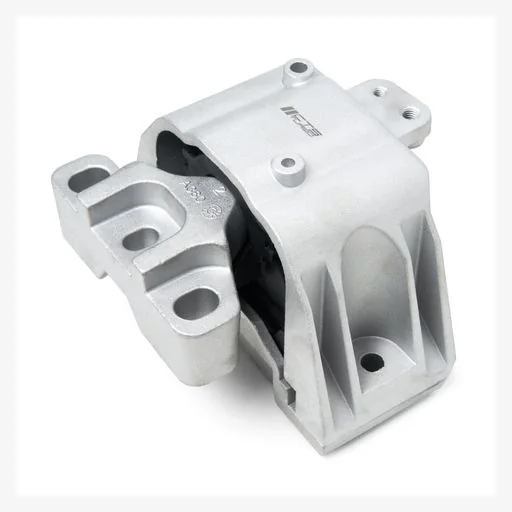
CTS Turbo · Public domain
Fonte e licençacoxins-motorAbafador de escapamento
Foto em revisão
Não foi aprovada fotografia profissional de Abafador de escapamento com correspondência visual e condição de uso verificável na pesquisa executada. Há 76 entradas de resultado (incluindo repetições/irrelevâncias), 2 falhas de coleta; os resultados e filtros não provam licença nem adequação. As páginas de fornecedor abaixo são somente pistas, sem autorização de reutilização demonstrada.
Alternativa para concluir
Obter autorização escrita do titular para fotografia real de Abafador de escapamento, com uso em catálogo público e conversão WebP; ou licenciar fotografia comercial adequada; ou produzir fotografia própria dessa peça com cessão/autorização do fotógrafo. Não substituir por outro componente.
Abafador de escapamento: Vista de três quartos mostrando o componente inteiro, bocais, fixações e conexões; remover motor/veículo/contexto de oficina do enquadramento. Fundo branco/neutro, luz difusa, peça completa, foco integral, preferencialmente original de 1600 px ou mais; saída proporcional 512 × 512 sem corte.
Ressonador de escapamento
Foto em revisão
Não foi aprovada fotografia profissional de Ressonador de escapamento com correspondência visual e condição de uso verificável na pesquisa executada. Há 31 entradas de resultado (incluindo repetições/irrelevâncias), 2 falhas de coleta; os resultados e filtros não provam licença nem adequação. As páginas de fornecedor abaixo são somente pistas, sem autorização de reutilização demonstrada.
Alternativa para concluir
Obter autorização escrita do titular para fotografia real de Ressonador de escapamento, com uso em catálogo público e conversão WebP; ou licenciar fotografia comercial adequada; ou produzir fotografia própria dessa peça com cessão/autorização do fotógrafo. Não substituir por outro componente.
Ressonador de escapamento: Vista de três quartos mostrando o componente inteiro, bocais, fixações e conexões; remover motor/veículo/contexto de oficina do enquadramento. Fundo branco/neutro, luz difusa, peça completa, foco integral, preferencialmente original de 1600 px ou mais; saída proporcional 512 × 512 sem corte.
Catalisador automotivo
Foto em revisão
Não foi aprovada fotografia profissional de Catalisador automotivo com correspondência visual e condição de uso verificável na pesquisa executada. Há 99 entradas de resultado (incluindo repetições/irrelevâncias), 2 falhas de coleta; os resultados e filtros não provam licença nem adequação. As páginas de fornecedor abaixo são somente pistas, sem autorização de reutilização demonstrada.
Alternativa para concluir
Obter autorização escrita do titular para fotografia real de Catalisador automotivo, com uso em catálogo público e conversão WebP; ou licenciar fotografia comercial adequada; ou produzir fotografia própria dessa peça com cessão/autorização do fotógrafo. Não substituir por outro componente.
Catalisador automotivo: Vista de três quartos mostrando o componente inteiro, bocais, fixações e conexões; remover motor/veículo/contexto de oficina do enquadramento. Fundo branco/neutro, luz difusa, peça completa, foco integral, preferencialmente original de 1600 px ou mais; saída proporcional 512 × 512 sem corte.
Ponteira de escapamento
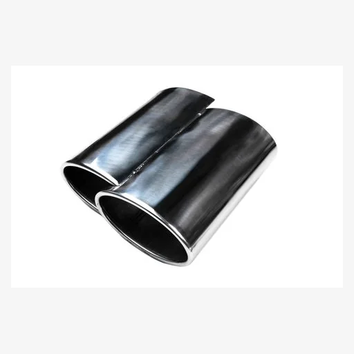
PRIOR DESIGN · CC BY 2.0
Fonte e licençaponteira-escapeVálvula de escapamento
Foto em revisão
Não foi aprovada fotografia profissional de Válvula de escapamento com correspondência visual e condição de uso verificável na pesquisa executada. Há 34 entradas de resultado (incluindo repetições/irrelevâncias), 2 falhas de coleta; os resultados e filtros não provam licença nem adequação. As páginas de fornecedor abaixo são somente pistas, sem autorização de reutilização demonstrada.
Alternativa para concluir
Obter autorização escrita do titular para fotografia real de Válvula de escapamento, com uso em catálogo público e conversão WebP; ou licenciar fotografia comercial adequada; ou produzir fotografia própria dessa peça com cessão/autorização do fotógrafo. Não substituir por outro componente.
Válvula de escapamento: Vista de três quartos mostrando o componente inteiro, bocais, fixações e conexões; remover motor/veículo/contexto de oficina do enquadramento. Fundo branco/neutro, luz difusa, peça completa, foco integral, preferencialmente original de 1600 px ou mais; saída proporcional 512 × 512 sem corte.
Fita térmica de escapamento
Foto em revisão
Não foi aprovada fotografia profissional de Fita térmica de escapamento com correspondência visual e condição de uso verificável na pesquisa executada. Há 56 entradas de resultado (incluindo repetições/irrelevâncias), 2 falhas de coleta; os resultados e filtros não provam licença nem adequação. As páginas de fornecedor abaixo são somente pistas, sem autorização de reutilização demonstrada.
Alternativa para concluir
Obter autorização escrita do titular para fotografia real de Fita térmica de escapamento, com uso em catálogo público e conversão WebP; ou licenciar fotografia comercial adequada; ou produzir fotografia própria dessa peça com cessão/autorização do fotógrafo. Não substituir por outro componente.
Fita térmica de escapamento: Vista de três quartos mostrando o componente inteiro, bocais, fixações e conexões; remover motor/veículo/contexto de oficina do enquadramento. Fundo branco/neutro, luz difusa, peça completa, foco integral, preferencialmente original de 1600 px ou mais; saída proporcional 512 × 512 sem corte.
Kit de óxido nitroso
Foto em revisão
Não foi aprovada fotografia profissional de Kit de óxido nitroso com correspondência visual e condição de uso verificável na pesquisa executada. Há 28 entradas de resultado (incluindo repetições/irrelevâncias), 2 falhas de coleta; os resultados e filtros não provam licença nem adequação. As páginas de fornecedor abaixo são somente pistas, sem autorização de reutilização demonstrada.
Alternativa para concluir
Obter autorização escrita do titular para fotografia real de Kit de óxido nitroso, com uso em catálogo público e conversão WebP; ou licenciar fotografia comercial adequada; ou produzir fotografia própria dessa peça com cessão/autorização do fotógrafo. Não substituir por outro componente.
Kit de óxido nitroso: Vista de três quartos mostrando o componente inteiro, bocais, fixações e conexões; remover motor/veículo/contexto de oficina do enquadramento. Fundo branco/neutro, luz difusa, peça completa, foco integral, preferencialmente original de 1600 px ou mais; saída proporcional 512 × 512 sem corte.
Kit de injeção de água e metanol
Foto em revisão
Não foi aprovada fotografia profissional de Kit de injeção de água e metanol com correspondência visual e condição de uso verificável na pesquisa executada. Há 59 entradas de resultado (incluindo repetições/irrelevâncias), 2 falhas de coleta; os resultados e filtros não provam licença nem adequação. As páginas de fornecedor abaixo são somente pistas, sem autorização de reutilização demonstrada.
Alternativa para concluir
Obter autorização escrita do titular para fotografia real de Kit de injeção de água e metanol, com uso em catálogo público e conversão WebP; ou licenciar fotografia comercial adequada; ou produzir fotografia própria dessa peça com cessão/autorização do fotógrafo. Não substituir por outro componente.
Kit de injeção de água e metanol: Vista de três quartos mostrando o componente inteiro, bocais, fixações e conexões; remover motor/veículo/contexto de oficina do enquadramento. Fundo branco/neutro, luz difusa, peça completa, foco integral, preferencialmente original de 1600 px ou mais; saída proporcional 512 × 512 sem corte.
Suspensão a ar
Foto em revisão
Não foi aprovada fotografia profissional de Suspensão a ar com correspondência visual e condição de uso verificável na pesquisa executada. Há 49 entradas de resultado (incluindo repetições/irrelevâncias), 2 falhas de coleta; os resultados e filtros não provam licença nem adequação. As páginas de fornecedor abaixo são somente pistas, sem autorização de reutilização demonstrada.
Alternativa para concluir
Obter autorização escrita do titular para fotografia real de Suspensão a ar, com uso em catálogo público e conversão WebP; ou licenciar fotografia comercial adequada; ou produzir fotografia própria dessa peça com cessão/autorização do fotógrafo. Não substituir por outro componente.
Suspensão a ar: Vista de três quartos com buchas, articulações ou fixações visíveis; apresentar o conjunto próprio completo, desmontado do veículo. Fundo branco/neutro, luz difusa, peça completa, foco integral, preferencialmente original de 1600 px ou mais; saída proporcional 512 × 512 sem corte.
Bolsas de suspensão a ar
Foto em revisão
Não foi aprovada fotografia profissional de Bolsas de suspensão a ar com correspondência visual e condição de uso verificável na pesquisa executada. Há 60 entradas de resultado (incluindo repetições/irrelevâncias), 2 falhas de coleta; os resultados e filtros não provam licença nem adequação. As páginas de fornecedor abaixo são somente pistas, sem autorização de reutilização demonstrada.
Alternativa para concluir
Obter autorização escrita do titular para fotografia real de Bolsas de suspensão a ar, com uso em catálogo público e conversão WebP; ou licenciar fotografia comercial adequada; ou produzir fotografia própria dessa peça com cessão/autorização do fotógrafo. Não substituir por outro componente.
Bolsas de suspensão a ar: Vista de três quartos com buchas, articulações ou fixações visíveis; apresentar o conjunto próprio completo, desmontado do veículo. Fundo branco/neutro, luz difusa, peça completa, foco integral, preferencialmente original de 1600 px ou mais; saída proporcional 512 × 512 sem corte.
Compressor de suspensão a ar
Foto em revisão
Não foi aprovada fotografia profissional de Compressor de suspensão a ar com correspondência visual e condição de uso verificável na pesquisa executada. Há 65 entradas de resultado (incluindo repetições/irrelevâncias), 2 falhas de coleta; os resultados e filtros não provam licença nem adequação. As páginas de fornecedor abaixo são somente pistas, sem autorização de reutilização demonstrada.
Alternativa para concluir
Obter autorização escrita do titular para fotografia real de Compressor de suspensão a ar, com uso em catálogo público e conversão WebP; ou licenciar fotografia comercial adequada; ou produzir fotografia própria dessa peça com cessão/autorização do fotógrafo. Não substituir por outro componente.
Compressor de suspensão a ar: Vista de três quartos com buchas, articulações ou fixações visíveis; apresentar o conjunto próprio completo, desmontado do veículo. Fundo branco/neutro, luz difusa, peça completa, foco integral, preferencialmente original de 1600 px ou mais; saída proporcional 512 × 512 sem corte.
Reservatório de ar da suspensão
Foto em revisão
Não foi aprovada fotografia profissional de Reservatório de ar da suspensão com correspondência visual e condição de uso verificável na pesquisa executada. Há 50 entradas de resultado (incluindo repetições/irrelevâncias), 2 falhas de coleta; os resultados e filtros não provam licença nem adequação. As páginas de fornecedor abaixo são somente pistas, sem autorização de reutilização demonstrada.
Alternativa para concluir
Obter autorização escrita do titular para fotografia real de Reservatório de ar da suspensão, com uso em catálogo público e conversão WebP; ou licenciar fotografia comercial adequada; ou produzir fotografia própria dessa peça com cessão/autorização do fotógrafo. Não substituir por outro componente.
Reservatório de ar da suspensão: Vista de três quartos com buchas, articulações ou fixações visíveis; apresentar o conjunto próprio completo, desmontado do veículo. Fundo branco/neutro, luz difusa, peça completa, foco integral, preferencialmente original de 1600 px ou mais; saída proporcional 512 × 512 sem corte.
Bloco de válvulas da suspensão a ar
Foto em revisão
Não foi aprovada fotografia profissional de Bloco de válvulas da suspensão a ar com correspondência visual e condição de uso verificável na pesquisa executada. Há 62 entradas de resultado (incluindo repetições/irrelevâncias), 2 falhas de coleta; os resultados e filtros não provam licença nem adequação. As páginas de fornecedor abaixo são somente pistas, sem autorização de reutilização demonstrada.
Alternativa para concluir
Obter autorização escrita do titular para fotografia real de Bloco de válvulas da suspensão a ar, com uso em catálogo público e conversão WebP; ou licenciar fotografia comercial adequada; ou produzir fotografia própria dessa peça com cessão/autorização do fotógrafo. Não substituir por outro componente.
Bloco de válvulas da suspensão a ar: Vista de três quartos com buchas, articulações ou fixações visíveis; apresentar o conjunto próprio completo, desmontado do veículo. Fundo branco/neutro, luz difusa, peça completa, foco integral, preferencialmente original de 1600 px ou mais; saída proporcional 512 × 512 sem corte.
Central de suspensão a ar
Foto em revisão
Não foi aprovada fotografia profissional de Central de suspensão a ar com correspondência visual e condição de uso verificável na pesquisa executada. Há 49 entradas de resultado (incluindo repetições/irrelevâncias), 2 falhas de coleta; os resultados e filtros não provam licença nem adequação. As páginas de fornecedor abaixo são somente pistas, sem autorização de reutilização demonstrada.
Alternativa para concluir
Obter autorização escrita do titular para fotografia real de Central de suspensão a ar, com uso em catálogo público e conversão WebP; ou licenciar fotografia comercial adequada; ou produzir fotografia própria dessa peça com cessão/autorização do fotógrafo. Não substituir por outro componente.
Central de suspensão a ar: Vista de três quartos com buchas, articulações ou fixações visíveis; apresentar o conjunto próprio completo, desmontado do veículo. Fundo branco/neutro, luz difusa, peça completa, foco integral, preferencialmente original de 1600 px ou mais; saída proporcional 512 × 512 sem corte.
Bieletas
Foto em revisão
Não foi aprovada fotografia profissional de Bieletas com correspondência visual e condição de uso verificável na pesquisa executada. Há 39 entradas de resultado (incluindo repetições/irrelevâncias), 3 falhas de coleta; os resultados e filtros não provam licença nem adequação. As páginas de fornecedor abaixo são somente pistas, sem autorização de reutilização demonstrada.
Alternativa para concluir
Obter autorização escrita do titular para fotografia real de Bieletas, com uso em catálogo público e conversão WebP; ou licenciar fotografia comercial adequada; ou produzir fotografia própria dessa peça com cessão/autorização do fotógrafo. Não substituir por outro componente.
Bieletas: Vista de três quartos com buchas, articulações ou fixações visíveis; apresentar o conjunto próprio completo, desmontado do veículo. Fundo branco/neutro, luz difusa, peça completa, foco integral, preferencialmente original de 1600 px ou mais; saída proporcional 512 × 512 sem corte.
Pivôs de suspensão
Foto em revisão
Não foi aprovada fotografia profissional de Pivôs de suspensão com correspondência visual e condição de uso verificável na pesquisa executada. Há 75 entradas de resultado (incluindo repetições/irrelevâncias), 2 falhas de coleta; os resultados e filtros não provam licença nem adequação. As páginas de fornecedor abaixo são somente pistas, sem autorização de reutilização demonstrada.
Alternativa para concluir
Obter autorização escrita do titular para fotografia real de Pivôs de suspensão, com uso em catálogo público e conversão WebP; ou licenciar fotografia comercial adequada; ou produzir fotografia própria dessa peça com cessão/autorização do fotógrafo. Não substituir por outro componente.
Pivôs de suspensão: Vista de três quartos com buchas, articulações ou fixações visíveis; apresentar o conjunto próprio completo, desmontado do veículo. Fundo branco/neutro, luz difusa, peça completa, foco integral, preferencialmente original de 1600 px ou mais; saída proporcional 512 × 512 sem corte.
Coxins de amortecedor
Foto em revisão
Não foi aprovada fotografia profissional de Coxins de amortecedor com correspondência visual e condição de uso verificável na pesquisa executada. Há 71 entradas de resultado (incluindo repetições/irrelevâncias), 2 falhas de coleta; os resultados e filtros não provam licença nem adequação. As páginas de fornecedor abaixo são somente pistas, sem autorização de reutilização demonstrada.
Alternativa para concluir
Obter autorização escrita do titular para fotografia real de Coxins de amortecedor, com uso em catálogo público e conversão WebP; ou licenciar fotografia comercial adequada; ou produzir fotografia própria dessa peça com cessão/autorização do fotógrafo. Não substituir por outro componente.
Coxins de amortecedor: Vista de três quartos com buchas, articulações ou fixações visíveis; apresentar o conjunto próprio completo, desmontado do veículo. Fundo branco/neutro, luz difusa, peça completa, foco integral, preferencialmente original de 1600 px ou mais; saída proporcional 512 × 512 sem corte.
Batentes de suspensão
Foto em revisão
Não foi aprovada fotografia profissional de Batentes de suspensão com correspondência visual e condição de uso verificável na pesquisa executada. Há 61 entradas de resultado (incluindo repetições/irrelevâncias), 2 falhas de coleta; os resultados e filtros não provam licença nem adequação. As páginas de fornecedor abaixo são somente pistas, sem autorização de reutilização demonstrada.
Alternativa para concluir
Obter autorização escrita do titular para fotografia real de Batentes de suspensão, com uso em catálogo público e conversão WebP; ou licenciar fotografia comercial adequada; ou produzir fotografia própria dessa peça com cessão/autorização do fotógrafo. Não substituir por outro componente.
Batentes de suspensão: Vista de três quartos com buchas, articulações ou fixações visíveis; apresentar o conjunto próprio completo, desmontado do veículo. Fundo branco/neutro, luz difusa, peça completa, foco integral, preferencialmente original de 1600 px ou mais; saída proporcional 512 × 512 sem corte.
Manga de eixo
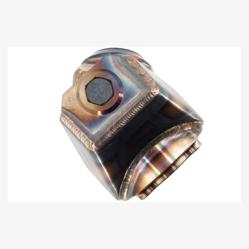
Spidertrax Off-Road · CC BY 2.0
Fonte e licençamanga-eixoCaixa de direção
Foto em revisão
Não foi aprovada fotografia profissional de Caixa de direção com correspondência visual e condição de uso verificável na pesquisa executada. Há 99 entradas de resultado (incluindo repetições/irrelevâncias), 2 falhas de coleta; os resultados e filtros não provam licença nem adequação. As páginas de fornecedor abaixo são somente pistas, sem autorização de reutilização demonstrada.
Alternativa para concluir
Obter autorização escrita do titular para fotografia real de Caixa de direção, com uso em catálogo público e conversão WebP; ou licenciar fotografia comercial adequada; ou produzir fotografia própria dessa peça com cessão/autorização do fotógrafo. Não substituir por outro componente.
Caixa de direção: Vista de três quartos com buchas, articulações ou fixações visíveis; apresentar o conjunto próprio completo, desmontado do veículo. Fundo branco/neutro, luz difusa, peça completa, foco integral, preferencialmente original de 1600 px ou mais; saída proporcional 512 × 512 sem corte.
Terminais de direção
Foto em revisão
Não foi aprovada fotografia profissional de Terminais de direção com correspondência visual e condição de uso verificável na pesquisa executada. Há 66 entradas de resultado (incluindo repetições/irrelevâncias), 2 falhas de coleta; os resultados e filtros não provam licença nem adequação. As páginas de fornecedor abaixo são somente pistas, sem autorização de reutilização demonstrada.
Alternativa para concluir
Obter autorização escrita do titular para fotografia real de Terminais de direção, com uso em catálogo público e conversão WebP; ou licenciar fotografia comercial adequada; ou produzir fotografia própria dessa peça com cessão/autorização do fotógrafo. Não substituir por outro componente.
Terminais de direção: Vista de três quartos com buchas, articulações ou fixações visíveis; apresentar o conjunto próprio completo, desmontado do veículo. Fundo branco/neutro, luz difusa, peça completa, foco integral, preferencialmente original de 1600 px ou mais; saída proporcional 512 × 512 sem corte.
Braços axiais de direção
Foto em revisão
Não foi aprovada fotografia profissional de Braços axiais de direção com correspondência visual e condição de uso verificável na pesquisa executada. Há 64 entradas de resultado (incluindo repetições/irrelevâncias), 2 falhas de coleta; os resultados e filtros não provam licença nem adequação. As páginas de fornecedor abaixo são somente pistas, sem autorização de reutilização demonstrada.
Alternativa para concluir
Obter autorização escrita do titular para fotografia real de Braços axiais de direção, com uso em catálogo público e conversão WebP; ou licenciar fotografia comercial adequada; ou produzir fotografia própria dessa peça com cessão/autorização do fotógrafo. Não substituir por outro componente.
Braços axiais de direção: Vista de três quartos com buchas, articulações ou fixações visíveis; apresentar o conjunto próprio completo, desmontado do veículo. Fundo branco/neutro, luz difusa, peça completa, foco integral, preferencialmente original de 1600 px ou mais; saída proporcional 512 × 512 sem corte.
Bomba de direção hidráulica
Foto em revisão
Não foi aprovada fotografia profissional de Bomba de direção hidráulica com correspondência visual e condição de uso verificável na pesquisa executada. Há 96 entradas de resultado (incluindo repetições/irrelevâncias), 2 falhas de coleta; os resultados e filtros não provam licença nem adequação. As páginas de fornecedor abaixo são somente pistas, sem autorização de reutilização demonstrada.
Alternativa para concluir
Obter autorização escrita do titular para fotografia real de Bomba de direção hidráulica, com uso em catálogo público e conversão WebP; ou licenciar fotografia comercial adequada; ou produzir fotografia própria dessa peça com cessão/autorização do fotógrafo. Não substituir por outro componente.
Bomba de direção hidráulica: Vista de três quartos com buchas, articulações ou fixações visíveis; apresentar o conjunto próprio completo, desmontado do veículo. Fundo branco/neutro, luz difusa, peça completa, foco integral, preferencialmente original de 1600 px ou mais; saída proporcional 512 × 512 sem corte.
Reservatório de direção hidráulica
Foto em revisão
Não foi aprovada fotografia profissional de Reservatório de direção hidráulica com correspondência visual e condição de uso verificável na pesquisa executada. Há 75 entradas de resultado (incluindo repetições/irrelevâncias), 3 falhas de coleta; os resultados e filtros não provam licença nem adequação. As páginas de fornecedor abaixo são somente pistas, sem autorização de reutilização demonstrada.
Alternativa para concluir
Obter autorização escrita do titular para fotografia real de Reservatório de direção hidráulica, com uso em catálogo público e conversão WebP; ou licenciar fotografia comercial adequada; ou produzir fotografia própria dessa peça com cessão/autorização do fotógrafo. Não substituir por outro componente.
Reservatório de direção hidráulica: Vista de três quartos com buchas, articulações ou fixações visíveis; apresentar o conjunto próprio completo, desmontado do veículo. Fundo branco/neutro, luz difusa, peça completa, foco integral, preferencialmente original de 1600 px ou mais; saída proporcional 512 × 512 sem corte.
Amortecedor de direção
Foto em revisão
Não foi aprovada fotografia profissional de Amortecedor de direção com correspondência visual e condição de uso verificável na pesquisa executada. Há 74 entradas de resultado (incluindo repetições/irrelevâncias), 4 falhas de coleta; os resultados e filtros não provam licença nem adequação. As páginas de fornecedor abaixo são somente pistas, sem autorização de reutilização demonstrada.
Alternativa para concluir
Obter autorização escrita do titular para fotografia real de Amortecedor de direção, com uso em catálogo público e conversão WebP; ou licenciar fotografia comercial adequada; ou produzir fotografia própria dessa peça com cessão/autorização do fotógrafo. Não substituir por outro componente.
Amortecedor de direção: Vista de três quartos com buchas, articulações ou fixações visíveis; apresentar o conjunto próprio completo, desmontado do veículo. Fundo branco/neutro, luz difusa, peça completa, foco integral, preferencialmente original de 1600 px ou mais; saída proporcional 512 × 512 sem corte.
Kit de aumento de ângulo de direção
Foto em revisão
Não foi aprovada fotografia profissional de Kit de aumento de ângulo de direção com correspondência visual e condição de uso verificável na pesquisa executada. Há 30 entradas de resultado (incluindo repetições/irrelevâncias), 4 falhas de coleta; os resultados e filtros não provam licença nem adequação. As páginas de fornecedor abaixo são somente pistas, sem autorização de reutilização demonstrada.
Alternativa para concluir
Obter autorização escrita do titular para fotografia real de Kit de aumento de ângulo de direção, com uso em catálogo público e conversão WebP; ou licenciar fotografia comercial adequada; ou produzir fotografia própria dessa peça com cessão/autorização do fotógrafo. Não substituir por outro componente.
Kit de aumento de ângulo de direção: Vista de três quartos com buchas, articulações ou fixações visíveis; apresentar o conjunto próprio completo, desmontado do veículo. Fundo branco/neutro, luz difusa, peça completa, foco integral, preferencialmente original de 1600 px ou mais; saída proporcional 512 × 512 sem corte.
Barra Panhard
Foto em revisão
Não foi aprovada fotografia profissional de Barra Panhard com correspondência visual e condição de uso verificável na pesquisa executada. Há 50 entradas de resultado (incluindo repetições/irrelevâncias), 4 falhas de coleta; os resultados e filtros não provam licença nem adequação. As páginas de fornecedor abaixo são somente pistas, sem autorização de reutilização demonstrada.
Alternativa para concluir
Obter autorização escrita do titular para fotografia real de Barra Panhard, com uso em catálogo público e conversão WebP; ou licenciar fotografia comercial adequada; ou produzir fotografia própria dessa peça com cessão/autorização do fotógrafo. Não substituir por outro componente.
Barra Panhard: Vista de três quartos com buchas, articulações ou fixações visíveis; apresentar o conjunto próprio completo, desmontado do veículo. Fundo branco/neutro, luz difusa, peça completa, foco integral, preferencialmente original de 1600 px ou mais; saída proporcional 512 × 512 sem corte.
Feixe de molas
Foto em revisão
Não foi aprovada fotografia profissional de Feixe de molas com correspondência visual e condição de uso verificável na pesquisa executada. Há 99 entradas de resultado (incluindo repetições/irrelevâncias), 4 falhas de coleta; os resultados e filtros não provam licença nem adequação. As páginas de fornecedor abaixo são somente pistas, sem autorização de reutilização demonstrada.
Alternativa para concluir
Obter autorização escrita do titular para fotografia real de Feixe de molas, com uso em catálogo público e conversão WebP; ou licenciar fotografia comercial adequada; ou produzir fotografia própria dessa peça com cessão/autorização do fotógrafo. Não substituir por outro componente.
Feixe de molas: Vista de três quartos com buchas, articulações ou fixações visíveis; apresentar o conjunto próprio completo, desmontado do veículo. Fundo branco/neutro, luz difusa, peça completa, foco integral, preferencialmente original de 1600 px ou mais; saída proporcional 512 × 512 sem corte.
Subchassi
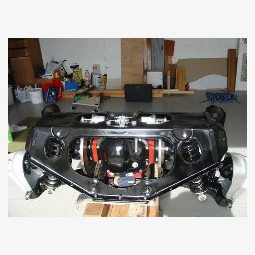
Dave Rawle · CC BY 3.0
Fonte e licençasubchassiCilindro mestre de freio
Foto em revisão
Não foi aprovada fotografia profissional de Cilindro mestre de freio com correspondência visual e condição de uso verificável na pesquisa executada. Há 74 entradas de resultado (incluindo repetições/irrelevâncias), 4 falhas de coleta; os resultados e filtros não provam licença nem adequação. As páginas de fornecedor abaixo são somente pistas, sem autorização de reutilização demonstrada.
Alternativa para concluir
Obter autorização escrita do titular para fotografia real de Cilindro mestre de freio, com uso em catálogo público e conversão WebP; ou licenciar fotografia comercial adequada; ou produzir fotografia própria dessa peça com cessão/autorização do fotógrafo. Não substituir por outro componente.
Cilindro mestre de freio: Vista de três quartos com conexões hidráulicas, superfície de atrito ou fixações identificáveis; não usar peças de bicicleta nem material excessivamente desgastado. Fundo branco/neutro, luz difusa, peça completa, foco integral, preferencialmente original de 1600 px ou mais; saída proporcional 512 × 512 sem corte.
Servo de freio
Foto em revisão
Não foi aprovada fotografia profissional de Servo de freio com correspondência visual e condição de uso verificável na pesquisa executada. Há 49 entradas de resultado (incluindo repetições/irrelevâncias), 4 falhas de coleta; os resultados e filtros não provam licença nem adequação. As páginas de fornecedor abaixo são somente pistas, sem autorização de reutilização demonstrada.
Alternativa para concluir
Obter autorização escrita do titular para fotografia real de Servo de freio, com uso em catálogo público e conversão WebP; ou licenciar fotografia comercial adequada; ou produzir fotografia própria dessa peça com cessão/autorização do fotógrafo. Não substituir por outro componente.
Servo de freio: Vista de três quartos com conexões hidráulicas, superfície de atrito ou fixações identificáveis; não usar peças de bicicleta nem material excessivamente desgastado. Fundo branco/neutro, luz difusa, peça completa, foco integral, preferencialmente original de 1600 px ou mais; saída proporcional 512 × 512 sem corte.
Válvula proporcionadora de freio
Foto em revisão
Não foi aprovada fotografia profissional de Válvula proporcionadora de freio com correspondência visual e condição de uso verificável na pesquisa executada. Há 45 entradas de resultado (incluindo repetições/irrelevâncias), 4 falhas de coleta; os resultados e filtros não provam licença nem adequação. As páginas de fornecedor abaixo são somente pistas, sem autorização de reutilização demonstrada.
Alternativa para concluir
Obter autorização escrita do titular para fotografia real de Válvula proporcionadora de freio, com uso em catálogo público e conversão WebP; ou licenciar fotografia comercial adequada; ou produzir fotografia própria dessa peça com cessão/autorização do fotógrafo. Não substituir por outro componente.
Válvula proporcionadora de freio: Vista de três quartos com conexões hidráulicas, superfície de atrito ou fixações identificáveis; não usar peças de bicicleta nem material excessivamente desgastado. Fundo branco/neutro, luz difusa, peça completa, foco integral, preferencialmente original de 1600 px ou mais; saída proporcional 512 × 512 sem corte.
Freio de mão hidráulico
Foto em revisão
Não foi aprovada fotografia profissional de Freio de mão hidráulico com correspondência visual e condição de uso verificável na pesquisa executada. Há 31 entradas de resultado (incluindo repetições/irrelevâncias), 4 falhas de coleta; os resultados e filtros não provam licença nem adequação. As páginas de fornecedor abaixo são somente pistas, sem autorização de reutilização demonstrada.
Alternativa para concluir
Obter autorização escrita do titular para fotografia real de Freio de mão hidráulico, com uso em catálogo público e conversão WebP; ou licenciar fotografia comercial adequada; ou produzir fotografia própria dessa peça com cessão/autorização do fotógrafo. Não substituir por outro componente.
Freio de mão hidráulico: Vista de três quartos com conexões hidráulicas, superfície de atrito ou fixações identificáveis; não usar peças de bicicleta nem material excessivamente desgastado. Fundo branco/neutro, luz difusa, peça completa, foco integral, preferencialmente original de 1600 px ou mais; saída proporcional 512 × 512 sem corte.
Pedaleira de competição
Foto em revisão
Não foi aprovada fotografia profissional de Pedaleira de competição com correspondência visual e condição de uso verificável na pesquisa executada. Há 49 entradas de resultado (incluindo repetições/irrelevâncias), 4 falhas de coleta; os resultados e filtros não provam licença nem adequação. As páginas de fornecedor abaixo são somente pistas, sem autorização de reutilização demonstrada.
Alternativa para concluir
Obter autorização escrita do titular para fotografia real de Pedaleira de competição, com uso em catálogo público e conversão WebP; ou licenciar fotografia comercial adequada; ou produzir fotografia própria dessa peça com cessão/autorização do fotógrafo. Não substituir por outro componente.
Pedaleira de competição: Vista de três quartos com conexões hidráulicas, superfície de atrito ou fixações identificáveis; não usar peças de bicicleta nem material excessivamente desgastado. Fundo branco/neutro, luz difusa, peça completa, foco integral, preferencialmente original de 1600 px ou mais; saída proporcional 512 × 512 sem corte.
Reservatório de fluido de freio
Foto em revisão
Não foi aprovada fotografia profissional de Reservatório de fluido de freio com correspondência visual e condição de uso verificável na pesquisa executada. Há 63 entradas de resultado (incluindo repetições/irrelevâncias), 4 falhas de coleta; os resultados e filtros não provam licença nem adequação. As páginas de fornecedor abaixo são somente pistas, sem autorização de reutilização demonstrada.
Alternativa para concluir
Obter autorização escrita do titular para fotografia real de Reservatório de fluido de freio, com uso em catálogo público e conversão WebP; ou licenciar fotografia comercial adequada; ou produzir fotografia própria dessa peça com cessão/autorização do fotógrafo. Não substituir por outro componente.
Reservatório de fluido de freio: Vista de três quartos com conexões hidráulicas, superfície de atrito ou fixações identificáveis; não usar peças de bicicleta nem material excessivamente desgastado. Fundo branco/neutro, luz difusa, peça completa, foco integral, preferencialmente original de 1600 px ou mais; saída proporcional 512 × 512 sem corte.
Dutos de ar para freios
Foto em revisão
Não foi aprovada fotografia profissional de Dutos de ar para freios com correspondência visual e condição de uso verificável na pesquisa executada. Há 74 entradas de resultado (incluindo repetições/irrelevâncias), 4 falhas de coleta; os resultados e filtros não provam licença nem adequação. As páginas de fornecedor abaixo são somente pistas, sem autorização de reutilização demonstrada.
Alternativa para concluir
Obter autorização escrita do titular para fotografia real de Dutos de ar para freios, com uso em catálogo público e conversão WebP; ou licenciar fotografia comercial adequada; ou produzir fotografia própria dessa peça com cessão/autorização do fotógrafo. Não substituir por outro componente.
Dutos de ar para freios: Vista de três quartos com conexões hidráulicas, superfície de atrito ou fixações identificáveis; não usar peças de bicicleta nem material excessivamente desgastado. Fundo branco/neutro, luz difusa, peça completa, foco integral, preferencialmente original de 1600 px ou mais; saída proporcional 512 × 512 sem corte.
Sapatas de freio
Foto em revisão
Não foi aprovada fotografia profissional de Sapatas de freio com correspondência visual e condição de uso verificável na pesquisa executada. Há 75 entradas de resultado (incluindo repetições/irrelevâncias), 4 falhas de coleta; os resultados e filtros não provam licença nem adequação. As páginas de fornecedor abaixo são somente pistas, sem autorização de reutilização demonstrada.
Alternativa para concluir
Obter autorização escrita do titular para fotografia real de Sapatas de freio, com uso em catálogo público e conversão WebP; ou licenciar fotografia comercial adequada; ou produzir fotografia própria dessa peça com cessão/autorização do fotógrafo. Não substituir por outro componente.
Sapatas de freio: Vista de três quartos com conexões hidráulicas, superfície de atrito ou fixações identificáveis; não usar peças de bicicleta nem material excessivamente desgastado. Fundo branco/neutro, luz difusa, peça completa, foco integral, preferencialmente original de 1600 px ou mais; saída proporcional 512 × 512 sem corte.
Tambores de freio
Foto em revisão
Não foi aprovada fotografia profissional de Tambores de freio com correspondência visual e condição de uso verificável na pesquisa executada. Há 75 entradas de resultado (incluindo repetições/irrelevâncias), 4 falhas de coleta; os resultados e filtros não provam licença nem adequação. As páginas de fornecedor abaixo são somente pistas, sem autorização de reutilização demonstrada.
Alternativa para concluir
Obter autorização escrita do titular para fotografia real de Tambores de freio, com uso em catálogo público e conversão WebP; ou licenciar fotografia comercial adequada; ou produzir fotografia própria dessa peça com cessão/autorização do fotógrafo. Não substituir por outro componente.
Tambores de freio: Vista de três quartos com conexões hidráulicas, superfície de atrito ou fixações identificáveis; não usar peças de bicicleta nem material excessivamente desgastado. Fundo branco/neutro, luz difusa, peça completa, foco integral, preferencialmente original de 1600 px ou mais; saída proporcional 512 × 512 sem corte.
Cilindro de roda de freio
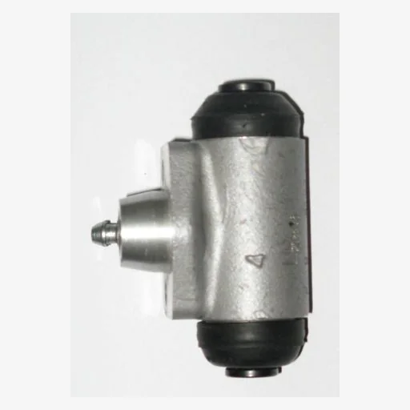
Ahmasmi · CC BY-SA 4.0
Fonte e licençacilindro-rodaCabos de freio de estacionamento
Foto em revisão
Não foi aprovada fotografia profissional de Cabos de freio de estacionamento com correspondência visual e condição de uso verificável na pesquisa executada. Há 36 entradas de resultado (incluindo repetições/irrelevâncias), 4 falhas de coleta; os resultados e filtros não provam licença nem adequação. As páginas de fornecedor abaixo são somente pistas, sem autorização de reutilização demonstrada.
Alternativa para concluir
Obter autorização escrita do titular para fotografia real de Cabos de freio de estacionamento, com uso em catálogo público e conversão WebP; ou licenciar fotografia comercial adequada; ou produzir fotografia própria dessa peça com cessão/autorização do fotógrafo. Não substituir por outro componente.
Cabos de freio de estacionamento: Vista de três quartos com conexões hidráulicas, superfície de atrito ou fixações identificáveis; não usar peças de bicicleta nem material excessivamente desgastado. Fundo branco/neutro, luz difusa, peça completa, foco integral, preferencialmente original de 1600 px ou mais; saída proporcional 512 × 512 sem corte.
Tubulação rígida de freio
Foto em revisão
Não foi aprovada fotografia profissional de Tubulação rígida de freio com correspondência visual e condição de uso verificável na pesquisa executada. Há 74 entradas de resultado (incluindo repetições/irrelevâncias), 4 falhas de coleta; os resultados e filtros não provam licença nem adequação. As páginas de fornecedor abaixo são somente pistas, sem autorização de reutilização demonstrada.
Alternativa para concluir
Obter autorização escrita do titular para fotografia real de Tubulação rígida de freio, com uso em catálogo público e conversão WebP; ou licenciar fotografia comercial adequada; ou produzir fotografia própria dessa peça com cessão/autorização do fotógrafo. Não substituir por outro componente.
Tubulação rígida de freio: Vista de três quartos com conexões hidráulicas, superfície de atrito ou fixações identificáveis; não usar peças de bicicleta nem material excessivamente desgastado. Fundo branco/neutro, luz difusa, peça completa, foco integral, preferencialmente original de 1600 px ou mais; saída proporcional 512 × 512 sem corte.
Prisioneiros de roda
Foto em revisão
Não foi aprovada fotografia profissional de Prisioneiros de roda com correspondência visual e condição de uso verificável na pesquisa executada. Há 74 entradas de resultado (incluindo repetições/irrelevâncias), 4 falhas de coleta; os resultados e filtros não provam licença nem adequação. As páginas de fornecedor abaixo são somente pistas, sem autorização de reutilização demonstrada.
Alternativa para concluir
Obter autorização escrita do titular para fotografia real de Prisioneiros de roda, com uso em catálogo público e conversão WebP; ou licenciar fotografia comercial adequada; ou produzir fotografia própria dessa peça com cessão/autorização do fotógrafo. Não substituir por outro componente.
Prisioneiros de roda: Vista de três quartos da peça isolada, mostrando furos, roscas, assento ou banda de rodagem conforme o componente. Fundo branco/neutro, luz difusa, peça completa, foco integral, preferencialmente original de 1600 px ou mais; saída proporcional 512 × 512 sem corte.
Porcas de roda
Foto em revisão
Não foi aprovada fotografia profissional de Porcas de roda com correspondência visual e condição de uso verificável na pesquisa executada. Há 28 entradas de resultado (incluindo repetições/irrelevâncias), 5 falhas de coleta; os resultados e filtros não provam licença nem adequação. As páginas de fornecedor abaixo são somente pistas, sem autorização de reutilização demonstrada.
Alternativa para concluir
Obter autorização escrita do titular para fotografia real de Porcas de roda, com uso em catálogo público e conversão WebP; ou licenciar fotografia comercial adequada; ou produzir fotografia própria dessa peça com cessão/autorização do fotógrafo. Não substituir por outro componente.
Porcas de roda: Vista de três quartos da peça isolada, mostrando furos, roscas, assento ou banda de rodagem conforme o componente. Fundo branco/neutro, luz difusa, peça completa, foco integral, preferencialmente original de 1600 px ou mais; saída proporcional 512 × 512 sem corte.
Parafusos de roda
Foto em revisão
Não foi aprovada fotografia profissional de Parafusos de roda com correspondência visual e condição de uso verificável na pesquisa executada. Há 60 entradas de resultado (incluindo repetições/irrelevâncias), 4 falhas de coleta; os resultados e filtros não provam licença nem adequação. As páginas de fornecedor abaixo são somente pistas, sem autorização de reutilização demonstrada.
Alternativa para concluir
Obter autorização escrita do titular para fotografia real de Parafusos de roda, com uso em catálogo público e conversão WebP; ou licenciar fotografia comercial adequada; ou produzir fotografia própria dessa peça com cessão/autorização do fotógrafo. Não substituir por outro componente.
Parafusos de roda: Vista de três quartos da peça isolada, mostrando furos, roscas, assento ou banda de rodagem conforme o componente. Fundo branco/neutro, luz difusa, peça completa, foco integral, preferencialmente original de 1600 px ou mais; saída proporcional 512 × 512 sem corte.
Anéis centralizadores de roda
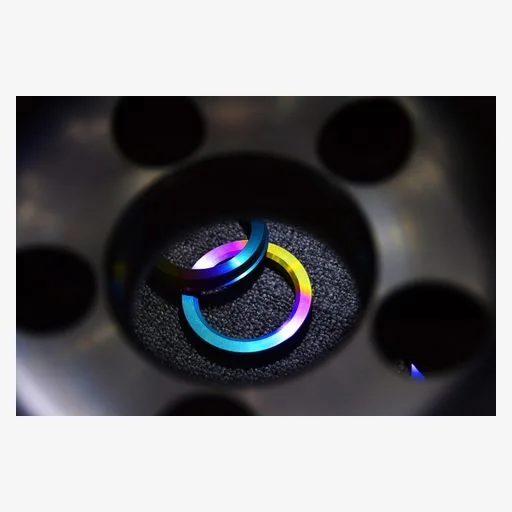
12600126xy · CC BY-SA 4.0
Fonte e licençaaneis-centralizadoresCubos de roda
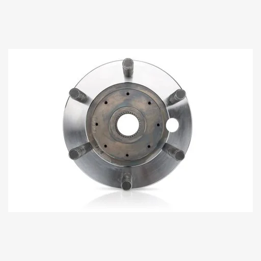
Spidertrax Off-Road · CC BY 2.0
Fonte e licençacubos-rodaRolamentos de roda
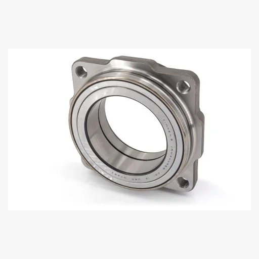
Spidertrax Off-Road · CC BY 2.0
Fonte e licençarolamentos-rodaVálvulas de pneus
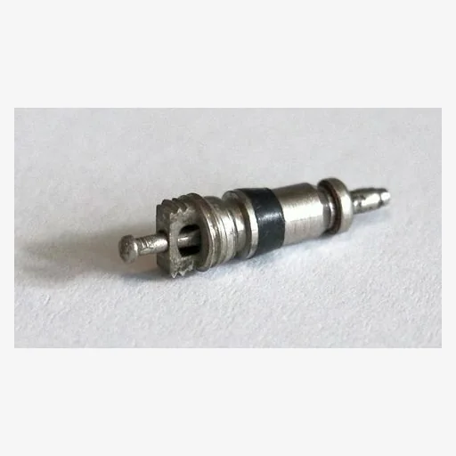
Andrew Pertsev · CC0
Fonte e licençavalvulas-pneuSensores de pressão dos pneus
Foto em revisão
Não foi aprovada fotografia profissional de Sensores de pressão dos pneus com correspondência visual e condição de uso verificável na pesquisa executada. Há 42 entradas de resultado (incluindo repetições/irrelevâncias), 4 falhas de coleta; os resultados e filtros não provam licença nem adequação. As páginas de fornecedor abaixo são somente pistas, sem autorização de reutilização demonstrada.
Alternativa para concluir
Obter autorização escrita do titular para fotografia real de Sensores de pressão dos pneus, com uso em catálogo público e conversão WebP; ou licenciar fotografia comercial adequada; ou produzir fotografia própria dessa peça com cessão/autorização do fotógrafo. Não substituir por outro componente.
Sensores de pressão dos pneus: Vista de três quartos da peça isolada, mostrando furos, roscas, assento ou banda de rodagem conforme o componente. Fundo branco/neutro, luz difusa, peça completa, foco integral, preferencialmente original de 1600 px ou mais; saída proporcional 512 × 512 sem corte.
Travas antifurto de roda
Foto em revisão
Não foi aprovada fotografia profissional de Travas antifurto de roda com correspondência visual e condição de uso verificável na pesquisa executada. Há 63 entradas de resultado (incluindo repetições/irrelevâncias), 4 falhas de coleta; os resultados e filtros não provam licença nem adequação. As páginas de fornecedor abaixo são somente pistas, sem autorização de reutilização demonstrada.
Alternativa para concluir
Obter autorização escrita do titular para fotografia real de Travas antifurto de roda, com uso em catálogo público e conversão WebP; ou licenciar fotografia comercial adequada; ou produzir fotografia própria dessa peça com cessão/autorização do fotógrafo. Não substituir por outro componente.
Travas antifurto de roda: Vista de três quartos da peça isolada, mostrando furos, roscas, assento ou banda de rodagem conforme o componente. Fundo branco/neutro, luz difusa, peça completa, foco integral, preferencialmente original de 1600 px ou mais; saída proporcional 512 × 512 sem corte.
Calotas
Foto em revisão
Não foi aprovada fotografia profissional de Calotas com correspondência visual e condição de uso verificável na pesquisa executada. Há 75 entradas de resultado (incluindo repetições/irrelevâncias), 4 falhas de coleta; os resultados e filtros não provam licença nem adequação. As páginas de fornecedor abaixo são somente pistas, sem autorização de reutilização demonstrada.
Alternativa para concluir
Obter autorização escrita do titular para fotografia real de Calotas, com uso em catálogo público e conversão WebP; ou licenciar fotografia comercial adequada; ou produzir fotografia própria dessa peça com cessão/autorização do fotógrafo. Não substituir por outro componente.
Calotas: Vista de três quartos da peça isolada, mostrando furos, roscas, assento ou banda de rodagem conforme o componente. Fundo branco/neutro, luz difusa, peça completa, foco integral, preferencialmente original de 1600 px ou mais; saída proporcional 512 × 512 sem corte.
Volante do motor
Foto em revisão
Não foi aprovada fotografia profissional de Volante do motor com correspondência visual e condição de uso verificável na pesquisa executada. Há 74 entradas de resultado (incluindo repetições/irrelevâncias), 4 falhas de coleta; os resultados e filtros não provam licença nem adequação. As páginas de fornecedor abaixo são somente pistas, sem autorização de reutilização demonstrada.
Alternativa para concluir
Obter autorização escrita do titular para fotografia real de Volante do motor, com uso em catálogo público e conversão WebP; ou licenciar fotografia comercial adequada; ou produzir fotografia própria dessa peça com cessão/autorização do fotógrafo. Não substituir por outro componente.
Volante do motor: Vista de três quartos da peça completa, mostrando eixos, engrenagens ou conexões; não substituir componente por carcaça vazia ou conjunto diferente. Fundo branco/neutro, luz difusa, peça completa, foco integral, preferencialmente original de 1600 px ou mais; saída proporcional 512 × 512 sem corte.
Conversor de torque
Foto em revisão
Não foi aprovada fotografia profissional de Conversor de torque com correspondência visual e condição de uso verificável na pesquisa executada. Há 74 entradas de resultado (incluindo repetições/irrelevâncias), 4 falhas de coleta; os resultados e filtros não provam licença nem adequação. As páginas de fornecedor abaixo são somente pistas, sem autorização de reutilização demonstrada.
Alternativa para concluir
Obter autorização escrita do titular para fotografia real de Conversor de torque, com uso em catálogo público e conversão WebP; ou licenciar fotografia comercial adequada; ou produzir fotografia própria dessa peça com cessão/autorização do fotógrafo. Não substituir por outro componente.
Conversor de torque: Vista de três quartos da peça completa, mostrando eixos, engrenagens ou conexões; não substituir componente por carcaça vazia ou conjunto diferente. Fundo branco/neutro, luz difusa, peça completa, foco integral, preferencialmente original de 1600 px ou mais; saída proporcional 512 × 512 sem corte.
Eixo cardã
Foto em revisão
Não foi aprovada fotografia profissional de Eixo cardã com correspondência visual e condição de uso verificável na pesquisa executada. Há 49 entradas de resultado (incluindo repetições/irrelevâncias), 4 falhas de coleta; os resultados e filtros não provam licença nem adequação. As páginas de fornecedor abaixo são somente pistas, sem autorização de reutilização demonstrada.
Alternativa para concluir
Obter autorização escrita do titular para fotografia real de Eixo cardã, com uso em catálogo público e conversão WebP; ou licenciar fotografia comercial adequada; ou produzir fotografia própria dessa peça com cessão/autorização do fotógrafo. Não substituir por outro componente.
Eixo cardã: Vista de três quartos da peça completa, mostrando eixos, engrenagens ou conexões; não substituir componente por carcaça vazia ou conjunto diferente. Fundo branco/neutro, luz difusa, peça completa, foco integral, preferencialmente original de 1600 px ou mais; saída proporcional 512 × 512 sem corte.
Semieixos
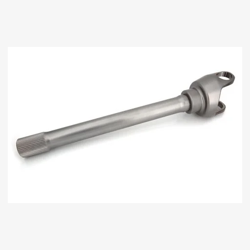
Spidertrax Off-Road · CC BY 2.0
Fonte e licençasemieixosJuntas homocinéticas
Foto em revisão
Não foi aprovada fotografia profissional de Juntas homocinéticas com correspondência visual e condição de uso verificável na pesquisa executada. Há 74 entradas de resultado (incluindo repetições/irrelevâncias), 4 falhas de coleta; os resultados e filtros não provam licença nem adequação. As páginas de fornecedor abaixo são somente pistas, sem autorização de reutilização demonstrada.
Alternativa para concluir
Obter autorização escrita do titular para fotografia real de Juntas homocinéticas, com uso em catálogo público e conversão WebP; ou licenciar fotografia comercial adequada; ou produzir fotografia própria dessa peça com cessão/autorização do fotógrafo. Não substituir por outro componente.
Juntas homocinéticas: Vista de três quartos da peça completa, mostrando eixos, engrenagens ou conexões; não substituir componente por carcaça vazia ou conjunto diferente. Fundo branco/neutro, luz difusa, peça completa, foco integral, preferencialmente original de 1600 px ou mais; saída proporcional 512 × 512 sem corte.
Cruzetas de cardã
Foto em revisão
Não foi aprovada fotografia profissional de Cruzetas de cardã com correspondência visual e condição de uso verificável na pesquisa executada. Há 70 entradas de resultado (incluindo repetições/irrelevâncias), 4 falhas de coleta; os resultados e filtros não provam licença nem adequação. As páginas de fornecedor abaixo são somente pistas, sem autorização de reutilização demonstrada.
Alternativa para concluir
Obter autorização escrita do titular para fotografia real de Cruzetas de cardã, com uso em catálogo público e conversão WebP; ou licenciar fotografia comercial adequada; ou produzir fotografia própria dessa peça com cessão/autorização do fotógrafo. Não substituir por outro componente.
Cruzetas de cardã: Vista de três quartos da peça completa, mostrando eixos, engrenagens ou conexões; não substituir componente por carcaça vazia ou conjunto diferente. Fundo branco/neutro, luz difusa, peça completa, foco integral, preferencialmente original de 1600 px ou mais; saída proporcional 512 × 512 sem corte.
Coxim de câmbio
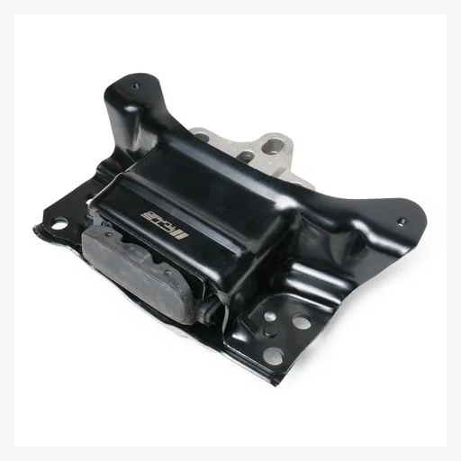
CTS Turbo · Public domain
Fonte e licençacoxim-cambioTrambulador de câmbio
Foto em revisão
Não foi aprovada fotografia profissional de Trambulador de câmbio com correspondência visual e condição de uso verificável na pesquisa executada. Há 67 entradas de resultado (incluindo repetições/irrelevâncias), 4 falhas de coleta; os resultados e filtros não provam licença nem adequação. As páginas de fornecedor abaixo são somente pistas, sem autorização de reutilização demonstrada.
Alternativa para concluir
Obter autorização escrita do titular para fotografia real de Trambulador de câmbio, com uso em catálogo público e conversão WebP; ou licenciar fotografia comercial adequada; ou produzir fotografia própria dessa peça com cessão/autorização do fotógrafo. Não substituir por outro componente.
Trambulador de câmbio: Vista de três quartos da peça completa, mostrando eixos, engrenagens ou conexões; não substituir componente por carcaça vazia ou conjunto diferente. Fundo branco/neutro, luz difusa, peça completa, foco integral, preferencialmente original de 1600 px ou mais; saída proporcional 512 × 512 sem corte.
Cabos de câmbio
Foto em revisão
Não foi aprovada fotografia profissional de Cabos de câmbio com correspondência visual e condição de uso verificável na pesquisa executada. Há 74 entradas de resultado (incluindo repetições/irrelevâncias), 4 falhas de coleta; os resultados e filtros não provam licença nem adequação. As páginas de fornecedor abaixo são somente pistas, sem autorização de reutilização demonstrada.
Alternativa para concluir
Obter autorização escrita do titular para fotografia real de Cabos de câmbio, com uso em catálogo público e conversão WebP; ou licenciar fotografia comercial adequada; ou produzir fotografia própria dessa peça com cessão/autorização do fotógrafo. Não substituir por outro componente.
Cabos de câmbio: Vista de três quartos da peça completa, mostrando eixos, engrenagens ou conexões; não substituir componente por carcaça vazia ou conjunto diferente. Fundo branco/neutro, luz difusa, peça completa, foco integral, preferencialmente original de 1600 px ou mais; saída proporcional 512 × 512 sem corte.
Cilindro mestre de embreagem
Foto em revisão
Não foi aprovada fotografia profissional de Cilindro mestre de embreagem com correspondência visual e condição de uso verificável na pesquisa executada. Há 74 entradas de resultado (incluindo repetições/irrelevâncias), 4 falhas de coleta; os resultados e filtros não provam licença nem adequação. As páginas de fornecedor abaixo são somente pistas, sem autorização de reutilização demonstrada.
Alternativa para concluir
Obter autorização escrita do titular para fotografia real de Cilindro mestre de embreagem, com uso em catálogo público e conversão WebP; ou licenciar fotografia comercial adequada; ou produzir fotografia própria dessa peça com cessão/autorização do fotógrafo. Não substituir por outro componente.
Cilindro mestre de embreagem: Vista de três quartos da peça completa, mostrando eixos, engrenagens ou conexões; não substituir componente por carcaça vazia ou conjunto diferente. Fundo branco/neutro, luz difusa, peça completa, foco integral, preferencialmente original de 1600 px ou mais; saída proporcional 512 × 512 sem corte.
Atuador de embreagem
Foto em revisão
Não foi aprovada fotografia profissional de Atuador de embreagem com correspondência visual e condição de uso verificável na pesquisa executada. Há 60 entradas de resultado (incluindo repetições/irrelevâncias), 4 falhas de coleta; os resultados e filtros não provam licença nem adequação. As páginas de fornecedor abaixo são somente pistas, sem autorização de reutilização demonstrada.
Alternativa para concluir
Obter autorização escrita do titular para fotografia real de Atuador de embreagem, com uso em catálogo público e conversão WebP; ou licenciar fotografia comercial adequada; ou produzir fotografia própria dessa peça com cessão/autorização do fotógrafo. Não substituir por outro componente.
Atuador de embreagem: Vista de três quartos da peça completa, mostrando eixos, engrenagens ou conexões; não substituir componente por carcaça vazia ou conjunto diferente. Fundo branco/neutro, luz difusa, peça completa, foco integral, preferencialmente original de 1600 px ou mais; saída proporcional 512 × 512 sem corte.
Radiador de óleo de câmbio
Foto em revisão
Não foi aprovada fotografia profissional de Radiador de óleo de câmbio com correspondência visual e condição de uso verificável na pesquisa executada. Há 74 entradas de resultado (incluindo repetições/irrelevâncias), 4 falhas de coleta; os resultados e filtros não provam licença nem adequação. As páginas de fornecedor abaixo são somente pistas, sem autorização de reutilização demonstrada.
Alternativa para concluir
Obter autorização escrita do titular para fotografia real de Radiador de óleo de câmbio, com uso em catálogo público e conversão WebP; ou licenciar fotografia comercial adequada; ou produzir fotografia própria dessa peça com cessão/autorização do fotógrafo. Não substituir por outro componente.
Radiador de óleo de câmbio: Vista de três quartos da peça completa, mostrando eixos, engrenagens ou conexões; não substituir componente por carcaça vazia ou conjunto diferente. Fundo branco/neutro, luz difusa, peça completa, foco integral, preferencialmente original de 1600 px ou mais; saída proporcional 512 × 512 sem corte.
Capa seca de câmbio
GrabberYellow · CC BY-SA 4.0
Fonte e licençacapa-secaFlange adaptadora de câmbio
Foto em revisão
Não foi aprovada fotografia profissional de Flange adaptadora de câmbio com correspondência visual e condição de uso verificável na pesquisa executada. Há 36 entradas de resultado (incluindo repetições/irrelevâncias), 4 falhas de coleta; os resultados e filtros não provam licença nem adequação. As páginas de fornecedor abaixo são somente pistas, sem autorização de reutilização demonstrada.
Alternativa para concluir
Obter autorização escrita do titular para fotografia real de Flange adaptadora de câmbio, com uso em catálogo público e conversão WebP; ou licenciar fotografia comercial adequada; ou produzir fotografia própria dessa peça com cessão/autorização do fotógrafo. Não substituir por outro componente.
Flange adaptadora de câmbio: Vista de três quartos da peça completa, mostrando eixos, engrenagens ou conexões; não substituir componente por carcaça vazia ou conjunto diferente. Fundo branco/neutro, luz difusa, peça completa, foco integral, preferencialmente original de 1600 px ou mais; saída proporcional 512 × 512 sem corte.
Cinta de segurança do cardã
Foto em revisão
Não foi aprovada fotografia profissional de Cinta de segurança do cardã com correspondência visual e condição de uso verificável na pesquisa executada. Há 25 entradas de resultado (incluindo repetições/irrelevâncias), 4 falhas de coleta; os resultados e filtros não provam licença nem adequação. As páginas de fornecedor abaixo são somente pistas, sem autorização de reutilização demonstrada.
Alternativa para concluir
Obter autorização escrita do titular para fotografia real de Cinta de segurança do cardã, com uso em catálogo público e conversão WebP; ou licenciar fotografia comercial adequada; ou produzir fotografia própria dessa peça com cessão/autorização do fotógrafo. Não substituir por outro componente.
Cinta de segurança do cardã: Vista de três quartos da peça completa, mostrando eixos, engrenagens ou conexões; não substituir componente por carcaça vazia ou conjunto diferente. Fundo branco/neutro, luz difusa, peça completa, foco integral, preferencialmente original de 1600 px ou mais; saída proporcional 512 × 512 sem corte.
Cubo de volante
Foto em revisão
Não foi aprovada fotografia profissional de Cubo de volante com correspondência visual e condição de uso verificável na pesquisa executada. Há 49 entradas de resultado (incluindo repetições/irrelevâncias), 4 falhas de coleta; os resultados e filtros não provam licença nem adequação. As páginas de fornecedor abaixo são somente pistas, sem autorização de reutilização demonstrada.
Alternativa para concluir
Obter autorização escrita do titular para fotografia real de Cubo de volante, com uso em catálogo público e conversão WebP; ou licenciar fotografia comercial adequada; ou produzir fotografia própria dessa peça com cessão/autorização do fotógrafo. Não substituir por outro componente.
Cubo de volante: Vista de três quartos do acessório fora do veículo, com pontos de montagem visíveis; evitar painel/cabine inteira como representação. Fundo branco/neutro, luz difusa, peça completa, foco integral, preferencialmente original de 1600 px ou mais; saída proporcional 512 × 512 sem corte.
Engate rápido de volante
Foto em revisão
Não foi aprovada fotografia profissional de Engate rápido de volante com correspondência visual e condição de uso verificável na pesquisa executada. Há 74 entradas de resultado (incluindo repetições/irrelevâncias), 4 falhas de coleta; os resultados e filtros não provam licença nem adequação. As páginas de fornecedor abaixo são somente pistas, sem autorização de reutilização demonstrada.
Alternativa para concluir
Obter autorização escrita do titular para fotografia real de Engate rápido de volante, com uso em catálogo público e conversão WebP; ou licenciar fotografia comercial adequada; ou produzir fotografia própria dessa peça com cessão/autorização do fotógrafo. Não substituir por outro componente.
Engate rápido de volante: Vista de três quartos do acessório fora do veículo, com pontos de montagem visíveis; evitar painel/cabine inteira como representação. Fundo branco/neutro, luz difusa, peça completa, foco integral, preferencialmente original de 1600 px ou mais; saída proporcional 512 × 512 sem corte.
Trilhos de banco
Foto em revisão
Não foi aprovada fotografia profissional de Trilhos de banco com correspondência visual e condição de uso verificável na pesquisa executada. Há 74 entradas de resultado (incluindo repetições/irrelevâncias), 4 falhas de coleta; os resultados e filtros não provam licença nem adequação. As páginas de fornecedor abaixo são somente pistas, sem autorização de reutilização demonstrada.
Alternativa para concluir
Obter autorização escrita do titular para fotografia real de Trilhos de banco, com uso em catálogo público e conversão WebP; ou licenciar fotografia comercial adequada; ou produzir fotografia própria dessa peça com cessão/autorização do fotógrafo. Não substituir por outro componente.
Trilhos de banco: Vista de três quartos do acessório fora do veículo, com pontos de montagem visíveis; evitar painel/cabine inteira como representação. Fundo branco/neutro, luz difusa, peça completa, foco integral, preferencialmente original de 1600 px ou mais; saída proporcional 512 × 512 sem corte.
Suportes de banco
Foto em revisão
Não foi aprovada fotografia profissional de Suportes de banco com correspondência visual e condição de uso verificável na pesquisa executada. Há 62 entradas de resultado (incluindo repetições/irrelevâncias), 4 falhas de coleta; os resultados e filtros não provam licença nem adequação. As páginas de fornecedor abaixo são somente pistas, sem autorização de reutilização demonstrada.
Alternativa para concluir
Obter autorização escrita do titular para fotografia real de Suportes de banco, com uso em catálogo público e conversão WebP; ou licenciar fotografia comercial adequada; ou produzir fotografia própria dessa peça com cessão/autorização do fotógrafo. Não substituir por outro componente.
Suportes de banco: Vista de três quartos do acessório fora do veículo, com pontos de montagem visíveis; evitar painel/cabine inteira como representação. Fundo branco/neutro, luz difusa, peça completa, foco integral, preferencialmente original de 1600 px ou mais; saída proporcional 512 × 512 sem corte.
Revestimento de bancos
Foto em revisão
Não foi aprovada fotografia profissional de Revestimento de bancos com correspondência visual e condição de uso verificável na pesquisa executada. Há 49 entradas de resultado (incluindo repetições/irrelevâncias), 4 falhas de coleta; os resultados e filtros não provam licença nem adequação. As páginas de fornecedor abaixo são somente pistas, sem autorização de reutilização demonstrada.
Alternativa para concluir
Obter autorização escrita do titular para fotografia real de Revestimento de bancos, com uso em catálogo público e conversão WebP; ou licenciar fotografia comercial adequada; ou produzir fotografia própria dessa peça com cessão/autorização do fotógrafo. Não substituir por outro componente.
Revestimento de bancos: Vista de três quartos do acessório fora do veículo, com pontos de montagem visíveis; evitar painel/cabine inteira como representação. Fundo branco/neutro, luz difusa, peça completa, foco integral, preferencialmente original de 1600 px ou mais; saída proporcional 512 × 512 sem corte.
Forros de porta
Foto em revisão
Não foi aprovada fotografia profissional de Forros de porta com correspondência visual e condição de uso verificável na pesquisa executada. Há 71 entradas de resultado (incluindo repetições/irrelevâncias), 4 falhas de coleta; os resultados e filtros não provam licença nem adequação. As páginas de fornecedor abaixo são somente pistas, sem autorização de reutilização demonstrada.
Alternativa para concluir
Obter autorização escrita do titular para fotografia real de Forros de porta, com uso em catálogo público e conversão WebP; ou licenciar fotografia comercial adequada; ou produzir fotografia própria dessa peça com cessão/autorização do fotógrafo. Não substituir por outro componente.
Forros de porta: Vista de três quartos do acessório fora do veículo, com pontos de montagem visíveis; evitar painel/cabine inteira como representação. Fundo branco/neutro, luz difusa, peça completa, foco integral, preferencialmente original de 1600 px ou mais; saída proporcional 512 × 512 sem corte.
Carpete automotivo
Foto em revisão
Não foi aprovada fotografia profissional de Carpete automotivo com correspondência visual e condição de uso verificável na pesquisa executada. Há 74 entradas de resultado (incluindo repetições/irrelevâncias), 4 falhas de coleta; os resultados e filtros não provam licença nem adequação. As páginas de fornecedor abaixo são somente pistas, sem autorização de reutilização demonstrada.
Alternativa para concluir
Obter autorização escrita do titular para fotografia real de Carpete automotivo, com uso em catálogo público e conversão WebP; ou licenciar fotografia comercial adequada; ou produzir fotografia própria dessa peça com cessão/autorização do fotógrafo. Não substituir por outro componente.
Carpete automotivo: Vista de três quartos do acessório fora do veículo, com pontos de montagem visíveis; evitar painel/cabine inteira como representação. Fundo branco/neutro, luz difusa, peça completa, foco integral, preferencialmente original de 1600 px ou mais; saída proporcional 512 × 512 sem corte.
Tapetes automotivos
Foto em revisão
Não foi aprovada fotografia profissional de Tapetes automotivos com correspondência visual e condição de uso verificável na pesquisa executada. Há 74 entradas de resultado (incluindo repetições/irrelevâncias), 4 falhas de coleta; os resultados e filtros não provam licença nem adequação. As páginas de fornecedor abaixo são somente pistas, sem autorização de reutilização demonstrada.
Alternativa para concluir
Obter autorização escrita do titular para fotografia real de Tapetes automotivos, com uso em catálogo público e conversão WebP; ou licenciar fotografia comercial adequada; ou produzir fotografia própria dessa peça com cessão/autorização do fotógrafo. Não substituir por outro componente.
Tapetes automotivos: Vista de três quartos do acessório fora do veículo, com pontos de montagem visíveis; evitar painel/cabine inteira como representação. Fundo branco/neutro, luz difusa, peça completa, foco integral, preferencialmente original de 1600 px ou mais; saída proporcional 512 × 512 sem corte.
Soleiras de porta
Foto em revisão
Não foi aprovada fotografia profissional de Soleiras de porta com correspondência visual e condição de uso verificável na pesquisa executada. Há 74 entradas de resultado (incluindo repetições/irrelevâncias), 4 falhas de coleta; os resultados e filtros não provam licença nem adequação. As páginas de fornecedor abaixo são somente pistas, sem autorização de reutilização demonstrada.
Alternativa para concluir
Obter autorização escrita do titular para fotografia real de Soleiras de porta, com uso em catálogo público e conversão WebP; ou licenciar fotografia comercial adequada; ou produzir fotografia própria dessa peça com cessão/autorização do fotógrafo. Não substituir por outro componente.
Soleiras de porta: Vista de três quartos do acessório fora do veículo, com pontos de montagem visíveis; evitar painel/cabine inteira como representação. Fundo branco/neutro, luz difusa, peça completa, foco integral, preferencialmente original de 1600 px ou mais; saída proporcional 512 × 512 sem corte.
Console central
Foto em revisão
Não foi aprovada fotografia profissional de Console central com correspondência visual e condição de uso verificável na pesquisa executada. Há 73 entradas de resultado (incluindo repetições/irrelevâncias), 4 falhas de coleta; os resultados e filtros não provam licença nem adequação. As páginas de fornecedor abaixo são somente pistas, sem autorização de reutilização demonstrada.
Alternativa para concluir
Obter autorização escrita do titular para fotografia real de Console central, com uso em catálogo público e conversão WebP; ou licenciar fotografia comercial adequada; ou produzir fotografia própria dessa peça com cessão/autorização do fotógrafo. Não substituir por outro componente.
Console central: Vista de três quartos do acessório fora do veículo, com pontos de montagem visíveis; evitar painel/cabine inteira como representação. Fundo branco/neutro, luz difusa, peça completa, foco integral, preferencialmente original de 1600 px ou mais; saída proporcional 512 × 512 sem corte.
Apoio de braço
Foto em revisão
Não foi aprovada fotografia profissional de Apoio de braço com correspondência visual e condição de uso verificável na pesquisa executada. Há 74 entradas de resultado (incluindo repetições/irrelevâncias), 4 falhas de coleta; os resultados e filtros não provam licença nem adequação. As páginas de fornecedor abaixo são somente pistas, sem autorização de reutilização demonstrada.
Alternativa para concluir
Obter autorização escrita do titular para fotografia real de Apoio de braço, com uso em catálogo público e conversão WebP; ou licenciar fotografia comercial adequada; ou produzir fotografia própria dessa peça com cessão/autorização do fotógrafo. Não substituir por outro componente.
Apoio de braço: Vista de três quartos do acessório fora do veículo, com pontos de montagem visíveis; evitar painel/cabine inteira como representação. Fundo branco/neutro, luz difusa, peça completa, foco integral, preferencialmente original de 1600 px ou mais; saída proporcional 512 × 512 sem corte.
Extintor automotivo
Foto em revisão
Não foi aprovada fotografia profissional de Extintor automotivo com correspondência visual e condição de uso verificável na pesquisa executada. Há 74 entradas de resultado (incluindo repetições/irrelevâncias), 4 falhas de coleta; os resultados e filtros não provam licença nem adequação. As páginas de fornecedor abaixo são somente pistas, sem autorização de reutilização demonstrada.
Alternativa para concluir
Obter autorização escrita do titular para fotografia real de Extintor automotivo, com uso em catálogo público e conversão WebP; ou licenciar fotografia comercial adequada; ou produzir fotografia própria dessa peça com cessão/autorização do fotógrafo. Não substituir por outro componente.
Extintor automotivo: Vista de três quartos do acessório fora do veículo, com pontos de montagem visíveis; evitar painel/cabine inteira como representação. Fundo branco/neutro, luz difusa, peça completa, foco integral, preferencialmente original de 1600 px ou mais; saída proporcional 512 × 512 sem corte.
Rede de segurança de janela
Foto em revisão
Não foi aprovada fotografia profissional de Rede de segurança de janela com correspondência visual e condição de uso verificável na pesquisa executada. Há 50 entradas de resultado (incluindo repetições/irrelevâncias), 4 falhas de coleta; os resultados e filtros não provam licença nem adequação. As páginas de fornecedor abaixo são somente pistas, sem autorização de reutilização demonstrada.
Alternativa para concluir
Obter autorização escrita do titular para fotografia real de Rede de segurança de janela, com uso em catálogo público e conversão WebP; ou licenciar fotografia comercial adequada; ou produzir fotografia própria dessa peça com cessão/autorização do fotógrafo. Não substituir por outro componente.
Rede de segurança de janela: Vista de três quartos do acessório fora do veículo, com pontos de montagem visíveis; evitar painel/cabine inteira como representação. Fundo branco/neutro, luz difusa, peça completa, foco integral, preferencialmente original de 1600 px ou mais; saída proporcional 512 × 512 sem corte.
Barra de fixação de cintos
Foto em revisão
Não foi aprovada fotografia profissional de Barra de fixação de cintos com correspondência visual e condição de uso verificável na pesquisa executada. Há 74 entradas de resultado (incluindo repetições/irrelevâncias), 4 falhas de coleta; os resultados e filtros não provam licença nem adequação. As páginas de fornecedor abaixo são somente pistas, sem autorização de reutilização demonstrada.
Alternativa para concluir
Obter autorização escrita do titular para fotografia real de Barra de fixação de cintos, com uso em catálogo público e conversão WebP; ou licenciar fotografia comercial adequada; ou produzir fotografia própria dessa peça com cessão/autorização do fotógrafo. Não substituir por outro componente.
Barra de fixação de cintos: Vista de três quartos do acessório fora do veículo, com pontos de montagem visíveis; evitar painel/cabine inteira como representação. Fundo branco/neutro, luz difusa, peça completa, foco integral, preferencialmente original de 1600 px ou mais; saída proporcional 512 × 512 sem corte.
Splitter dianteiro
Foto em revisão
Não foi aprovada fotografia profissional de Splitter dianteiro com correspondência visual e condição de uso verificável na pesquisa executada. Há 75 entradas de resultado (incluindo repetições/irrelevâncias), 4 falhas de coleta; os resultados e filtros não provam licença nem adequação. As páginas de fornecedor abaixo são somente pistas, sem autorização de reutilização demonstrada.
Alternativa para concluir
Obter autorização escrita do titular para fotografia real de Splitter dianteiro, com uso em catálogo público e conversão WebP; ou licenciar fotografia comercial adequada; ou produzir fotografia própria dessa peça com cessão/autorização do fotógrafo. Não substituir por outro componente.
Splitter dianteiro: Vista de três quartos da peça desmontada e inteira; peças longas em enquadramento horizontal, sem usar veículo equipado para substituir a fotografia do acessório. Fundo branco/neutro, luz difusa, peça completa, foco integral, preferencialmente original de 1600 px ou mais; saída proporcional 512 × 512 sem corte.
Canards
Foto em revisão
Não foi aprovada fotografia profissional de Canards com correspondência visual e condição de uso verificável na pesquisa executada. Há 48 entradas de resultado (incluindo repetições/irrelevâncias), 4 falhas de coleta; os resultados e filtros não provam licença nem adequação. As páginas de fornecedor abaixo são somente pistas, sem autorização de reutilização demonstrada.
Alternativa para concluir
Obter autorização escrita do titular para fotografia real de Canards, com uso em catálogo público e conversão WebP; ou licenciar fotografia comercial adequada; ou produzir fotografia própria dessa peça com cessão/autorização do fotógrafo. Não substituir por outro componente.
Canards: Vista de três quartos da peça desmontada e inteira; peças longas em enquadramento horizontal, sem usar veículo equipado para substituir a fotografia do acessório. Fundo branco/neutro, luz difusa, peça completa, foco integral, preferencialmente original de 1600 px ou mais; saída proporcional 512 × 512 sem corte.
Alargadores de para-lama
Foto em revisão
Não foi aprovada fotografia profissional de Alargadores de para-lama com correspondência visual e condição de uso verificável na pesquisa executada. Há 74 entradas de resultado (incluindo repetições/irrelevâncias), 4 falhas de coleta; os resultados e filtros não provam licença nem adequação. As páginas de fornecedor abaixo são somente pistas, sem autorização de reutilização demonstrada.
Alternativa para concluir
Obter autorização escrita do titular para fotografia real de Alargadores de para-lama, com uso em catálogo público e conversão WebP; ou licenciar fotografia comercial adequada; ou produzir fotografia própria dessa peça com cessão/autorização do fotógrafo. Não substituir por outro componente.
Alargadores de para-lama: Vista de três quartos da peça desmontada e inteira; peças longas em enquadramento horizontal, sem usar veículo equipado para substituir a fotografia do acessório. Fundo branco/neutro, luz difusa, peça completa, foco integral, preferencialmente original de 1600 px ou mais; saída proporcional 512 × 512 sem corte.
Para-lamas
Foto em revisão
Não foi aprovada fotografia profissional de Para-lamas com correspondência visual e condição de uso verificável na pesquisa executada. Há 74 entradas de resultado (incluindo repetições/irrelevâncias), 4 falhas de coleta; os resultados e filtros não provam licença nem adequação. As páginas de fornecedor abaixo são somente pistas, sem autorização de reutilização demonstrada.
Alternativa para concluir
Obter autorização escrita do titular para fotografia real de Para-lamas, com uso em catálogo público e conversão WebP; ou licenciar fotografia comercial adequada; ou produzir fotografia própria dessa peça com cessão/autorização do fotógrafo. Não substituir por outro componente.
Para-lamas: Vista de três quartos da peça desmontada e inteira; peças longas em enquadramento horizontal, sem usar veículo equipado para substituir a fotografia do acessório. Fundo branco/neutro, luz difusa, peça completa, foco integral, preferencialmente original de 1600 px ou mais; saída proporcional 512 × 512 sem corte.
Grade dianteira
Foto em revisão
Não foi aprovada fotografia profissional de Grade dianteira com correspondência visual e condição de uso verificável na pesquisa executada. Há 75 entradas de resultado (incluindo repetições/irrelevâncias), 4 falhas de coleta; os resultados e filtros não provam licença nem adequação. As páginas de fornecedor abaixo são somente pistas, sem autorização de reutilização demonstrada.
Alternativa para concluir
Obter autorização escrita do titular para fotografia real de Grade dianteira, com uso em catálogo público e conversão WebP; ou licenciar fotografia comercial adequada; ou produzir fotografia própria dessa peça com cessão/autorização do fotógrafo. Não substituir por outro componente.
Grade dianteira: Vista de três quartos da peça desmontada e inteira; peças longas em enquadramento horizontal, sem usar veículo equipado para substituir a fotografia do acessório. Fundo branco/neutro, luz difusa, peça completa, foco integral, preferencialmente original de 1600 px ou mais; saída proporcional 512 × 512 sem corte.
Entrada de ar de capô
Foto em revisão
Não foi aprovada fotografia profissional de Entrada de ar de capô com correspondência visual e condição de uso verificável na pesquisa executada. Há 74 entradas de resultado (incluindo repetições/irrelevâncias), 4 falhas de coleta; os resultados e filtros não provam licença nem adequação. As páginas de fornecedor abaixo são somente pistas, sem autorização de reutilização demonstrada.
Alternativa para concluir
Obter autorização escrita do titular para fotografia real de Entrada de ar de capô, com uso em catálogo público e conversão WebP; ou licenciar fotografia comercial adequada; ou produzir fotografia própria dessa peça com cessão/autorização do fotógrafo. Não substituir por outro componente.
Entrada de ar de capô: Vista de três quartos da peça desmontada e inteira; peças longas em enquadramento horizontal, sem usar veículo equipado para substituir a fotografia do acessório. Fundo branco/neutro, luz difusa, peça completa, foco integral, preferencialmente original de 1600 px ou mais; saída proporcional 512 × 512 sem corte.
Respiros de capô
Foto em revisão
Não foi aprovada fotografia profissional de Respiros de capô com correspondência visual e condição de uso verificável na pesquisa executada. Há 62 entradas de resultado (incluindo repetições/irrelevâncias), 4 falhas de coleta; os resultados e filtros não provam licença nem adequação. As páginas de fornecedor abaixo são somente pistas, sem autorização de reutilização demonstrada.
Alternativa para concluir
Obter autorização escrita do titular para fotografia real de Respiros de capô, com uso em catálogo público e conversão WebP; ou licenciar fotografia comercial adequada; ou produzir fotografia própria dessa peça com cessão/autorização do fotógrafo. Não substituir por outro componente.
Respiros de capô: Vista de três quartos da peça desmontada e inteira; peças longas em enquadramento horizontal, sem usar veículo equipado para substituir a fotografia do acessório. Fundo branco/neutro, luz difusa, peça completa, foco integral, preferencialmente original de 1600 px ou mais; saída proporcional 512 × 512 sem corte.
Travas de capô
Foto em revisão
Não foi aprovada fotografia profissional de Travas de capô com correspondência visual e condição de uso verificável na pesquisa executada. Há 74 entradas de resultado (incluindo repetições/irrelevâncias), 4 falhas de coleta; os resultados e filtros não provam licença nem adequação. As páginas de fornecedor abaixo são somente pistas, sem autorização de reutilização demonstrada.
Alternativa para concluir
Obter autorização escrita do titular para fotografia real de Travas de capô, com uso em catálogo público e conversão WebP; ou licenciar fotografia comercial adequada; ou produzir fotografia própria dessa peça com cessão/autorização do fotógrafo. Não substituir por outro componente.
Travas de capô: Vista de três quartos da peça desmontada e inteira; peças longas em enquadramento horizontal, sem usar veículo equipado para substituir a fotografia do acessório. Fundo branco/neutro, luz difusa, peça completa, foco integral, preferencialmente original de 1600 px ou mais; saída proporcional 512 × 512 sem corte.
Engate de reboque
Foto em revisão
Não foi aprovada fotografia profissional de Engate de reboque com correspondência visual e condição de uso verificável na pesquisa executada. Há 74 entradas de resultado (incluindo repetições/irrelevâncias), 4 falhas de coleta; os resultados e filtros não provam licença nem adequação. As páginas de fornecedor abaixo são somente pistas, sem autorização de reutilização demonstrada.
Alternativa para concluir
Obter autorização escrita do titular para fotografia real de Engate de reboque, com uso em catálogo público e conversão WebP; ou licenciar fotografia comercial adequada; ou produzir fotografia própria dessa peça com cessão/autorização do fotógrafo. Não substituir por outro componente.
Engate de reboque: Vista de três quartos da peça desmontada e inteira; peças longas em enquadramento horizontal, sem usar veículo equipado para substituir a fotografia do acessório. Fundo branco/neutro, luz difusa, peça completa, foco integral, preferencialmente original de 1600 px ou mais; saída proporcional 512 × 512 sem corte.
Olhal de reboque
Michael Robinson (unixxx) · CC BY-SA 3.0
Fonte e licençaolhal-reboqueProtetor de cárter
Foto em revisão
Não foi aprovada fotografia profissional de Protetor de cárter com correspondência visual e condição de uso verificável na pesquisa executada. Há 58 entradas de resultado (incluindo repetições/irrelevâncias), 4 falhas de coleta; os resultados e filtros não provam licença nem adequação. As páginas de fornecedor abaixo são somente pistas, sem autorização de reutilização demonstrada.
Alternativa para concluir
Obter autorização escrita do titular para fotografia real de Protetor de cárter, com uso em catálogo público e conversão WebP; ou licenciar fotografia comercial adequada; ou produzir fotografia própria dessa peça com cessão/autorização do fotógrafo. Não substituir por outro componente.
Protetor de cárter: Vista de três quartos da peça desmontada e inteira; peças longas em enquadramento horizontal, sem usar veículo equipado para substituir a fotografia do acessório. Fundo branco/neutro, luz difusa, peça completa, foco integral, preferencialmente original de 1600 px ou mais; saída proporcional 512 × 512 sem corte.
Bagageiro de teto
Foto em revisão
Não foi aprovada fotografia profissional de Bagageiro de teto com correspondência visual e condição de uso verificável na pesquisa executada. Há 74 entradas de resultado (incluindo repetições/irrelevâncias), 4 falhas de coleta; os resultados e filtros não provam licença nem adequação. As páginas de fornecedor abaixo são somente pistas, sem autorização de reutilização demonstrada.
Alternativa para concluir
Obter autorização escrita do titular para fotografia real de Bagageiro de teto, com uso em catálogo público e conversão WebP; ou licenciar fotografia comercial adequada; ou produzir fotografia própria dessa peça com cessão/autorização do fotógrafo. Não substituir por outro componente.
Bagageiro de teto: Vista de três quartos da peça desmontada e inteira; peças longas em enquadramento horizontal, sem usar veículo equipado para substituir a fotografia do acessório. Fundo branco/neutro, luz difusa, peça completa, foco integral, preferencialmente original de 1600 px ou mais; saída proporcional 512 × 512 sem corte.
Película para vidros
Foto em revisão
Não foi aprovada fotografia profissional de Película para vidros com correspondência visual e condição de uso verificável na pesquisa executada. Há 74 entradas de resultado (incluindo repetições/irrelevâncias), 4 falhas de coleta; os resultados e filtros não provam licença nem adequação. As páginas de fornecedor abaixo são somente pistas, sem autorização de reutilização demonstrada.
Alternativa para concluir
Obter autorização escrita do titular para fotografia real de Película para vidros, com uso em catálogo público e conversão WebP; ou licenciar fotografia comercial adequada; ou produzir fotografia própria dessa peça com cessão/autorização do fotógrafo. Não substituir por outro componente.
Película para vidros: Vista de três quartos da peça desmontada e inteira; peças longas em enquadramento horizontal, sem usar veículo equipado para substituir a fotografia do acessório. Fundo branco/neutro, luz difusa, peça completa, foco integral, preferencialmente original de 1600 px ou mais; saída proporcional 512 × 512 sem corte.
Vinil de envelopamento
Foto em revisão
Não foi aprovada fotografia profissional de Vinil de envelopamento com correspondência visual e condição de uso verificável na pesquisa executada. Há 74 entradas de resultado (incluindo repetições/irrelevâncias), 4 falhas de coleta; os resultados e filtros não provam licença nem adequação. As páginas de fornecedor abaixo são somente pistas, sem autorização de reutilização demonstrada.
Alternativa para concluir
Obter autorização escrita do titular para fotografia real de Vinil de envelopamento, com uso em catálogo público e conversão WebP; ou licenciar fotografia comercial adequada; ou produzir fotografia própria dessa peça com cessão/autorização do fotógrafo. Não substituir por outro componente.
Vinil de envelopamento: Vista de três quartos da peça desmontada e inteira; peças longas em enquadramento horizontal, sem usar veículo equipado para substituir a fotografia do acessório. Fundo branco/neutro, luz difusa, peça completa, foco integral, preferencialmente original de 1600 px ou mais; saída proporcional 512 × 512 sem corte.
Película de proteção de pintura
Foto em revisão
Não foi aprovada fotografia profissional de Película de proteção de pintura com correspondência visual e condição de uso verificável na pesquisa executada. Há 50 entradas de resultado (incluindo repetições/irrelevâncias), 4 falhas de coleta; os resultados e filtros não provam licença nem adequação. As páginas de fornecedor abaixo são somente pistas, sem autorização de reutilização demonstrada.
Alternativa para concluir
Obter autorização escrita do titular para fotografia real de Película de proteção de pintura, com uso em catálogo público e conversão WebP; ou licenciar fotografia comercial adequada; ou produzir fotografia própria dessa peça com cessão/autorização do fotógrafo. Não substituir por outro componente.
Película de proteção de pintura: Vista de três quartos da peça desmontada e inteira; peças longas em enquadramento horizontal, sem usar veículo equipado para substituir a fotografia do acessório. Fundo branco/neutro, luz difusa, peça completa, foco integral, preferencialmente original de 1600 px ou mais; saída proporcional 512 × 512 sem corte.
Emblemas automotivos
Foto em revisão
Não foi aprovada fotografia profissional de Emblemas automotivos com correspondência visual e condição de uso verificável na pesquisa executada. Há 74 entradas de resultado (incluindo repetições/irrelevâncias), 4 falhas de coleta; os resultados e filtros não provam licença nem adequação. As páginas de fornecedor abaixo são somente pistas, sem autorização de reutilização demonstrada.
Alternativa para concluir
Obter autorização escrita do titular para fotografia real de Emblemas automotivos, com uso em catálogo público e conversão WebP; ou licenciar fotografia comercial adequada; ou produzir fotografia própria dessa peça com cessão/autorização do fotógrafo. Não substituir por outro componente.
Emblemas automotivos: Vista de três quartos da peça desmontada e inteira; peças longas em enquadramento horizontal, sem usar veículo equipado para substituir a fotografia do acessório. Fundo branco/neutro, luz difusa, peça completa, foco integral, preferencialmente original de 1600 px ou mais; saída proporcional 512 × 512 sem corte.
Frisos de carroceria
Foto em revisão
Não foi aprovada fotografia profissional de Frisos de carroceria com correspondência visual e condição de uso verificável na pesquisa executada. Há 74 entradas de resultado (incluindo repetições/irrelevâncias), 4 falhas de coleta; os resultados e filtros não provam licença nem adequação. As páginas de fornecedor abaixo são somente pistas, sem autorização de reutilização demonstrada.
Alternativa para concluir
Obter autorização escrita do titular para fotografia real de Frisos de carroceria, com uso em catálogo público e conversão WebP; ou licenciar fotografia comercial adequada; ou produzir fotografia própria dessa peça com cessão/autorização do fotógrafo. Não substituir por outro componente.
Frisos de carroceria: Vista de três quartos da peça desmontada e inteira; peças longas em enquadramento horizontal, sem usar veículo equipado para substituir a fotografia do acessório. Fundo branco/neutro, luz difusa, peça completa, foco integral, preferencialmente original de 1600 px ou mais; saída proporcional 512 × 512 sem corte.
Borrachas de vedação
Ilcraft · CC BY-SA 4.0
Fonte e licençaborrachas-vedacaoLâmpadas de farol
Schumi4ever · CC BY-SA 4.0
Fonte e licençalampadas-farolProjetor de farol
Foto em revisão
Não foi aprovada fotografia profissional de Projetor de farol com correspondência visual e condição de uso verificável na pesquisa executada. Há 30 entradas de resultado (incluindo repetições/irrelevâncias), 4 falhas de coleta; os resultados e filtros não provam licença nem adequação. As páginas de fornecedor abaixo são somente pistas, sem autorização de reutilização demonstrada.
Alternativa para concluir
Obter autorização escrita do titular para fotografia real de Projetor de farol, com uso em catálogo público e conversão WebP; ou licenciar fotografia comercial adequada; ou produzir fotografia própria dessa peça com cessão/autorização do fotógrafo. Não substituir por outro componente.
Projetor de farol: Vista frontal de três quartos do conjunto isolado, com lente e fixação visíveis; aceitar somente fotografia real, não render de jogo/modelagem. Fundo branco/neutro, luz difusa, peça completa, foco integral, preferencialmente original de 1600 px ou mais; saída proporcional 512 × 512 sem corte.
Reator de farol
Foto em revisão
Não foi aprovada fotografia profissional de Reator de farol com correspondência visual e condição de uso verificável na pesquisa executada. Há 53 entradas de resultado (incluindo repetições/irrelevâncias), 4 falhas de coleta; os resultados e filtros não provam licença nem adequação. As páginas de fornecedor abaixo são somente pistas, sem autorização de reutilização demonstrada.
Alternativa para concluir
Obter autorização escrita do titular para fotografia real de Reator de farol, com uso em catálogo público e conversão WebP; ou licenciar fotografia comercial adequada; ou produzir fotografia própria dessa peça com cessão/autorização do fotógrafo. Não substituir por outro componente.
Reator de farol: Vista frontal de três quartos do conjunto isolado, com lente e fixação visíveis; aceitar somente fotografia real, não render de jogo/modelagem. Fundo branco/neutro, luz difusa, peça completa, foco integral, preferencialmente original de 1600 px ou mais; saída proporcional 512 × 512 sem corte.
Módulo controlador de LED
Foto em revisão
Não foi aprovada fotografia profissional de Módulo controlador de LED com correspondência visual e condição de uso verificável na pesquisa executada. Há 28 entradas de resultado (incluindo repetições/irrelevâncias), 5 falhas de coleta; os resultados e filtros não provam licença nem adequação. As páginas de fornecedor abaixo são somente pistas, sem autorização de reutilização demonstrada.
Alternativa para concluir
Obter autorização escrita do titular para fotografia real de Módulo controlador de LED, com uso em catálogo público e conversão WebP; ou licenciar fotografia comercial adequada; ou produzir fotografia própria dessa peça com cessão/autorização do fotógrafo. Não substituir por outro componente.
Módulo controlador de LED: Vista frontal de três quartos do conjunto isolado, com lente e fixação visíveis; aceitar somente fotografia real, não render de jogo/modelagem. Fundo branco/neutro, luz difusa, peça completa, foco integral, preferencialmente original de 1600 px ou mais; saída proporcional 512 × 512 sem corte.
Indicadores de direção
Foto em revisão
Não foi aprovada fotografia profissional de Indicadores de direção com correspondência visual e condição de uso verificável na pesquisa executada. Há 26 entradas de resultado (incluindo repetições/irrelevâncias), 5 falhas de coleta; os resultados e filtros não provam licença nem adequação. As páginas de fornecedor abaixo são somente pistas, sem autorização de reutilização demonstrada.
Alternativa para concluir
Obter autorização escrita do titular para fotografia real de Indicadores de direção, com uso em catálogo público e conversão WebP; ou licenciar fotografia comercial adequada; ou produzir fotografia própria dessa peça com cessão/autorização do fotógrafo. Não substituir por outro componente.
Indicadores de direção: Vista frontal de três quartos do conjunto isolado, com lente e fixação visíveis; aceitar somente fotografia real, não render de jogo/modelagem. Fundo branco/neutro, luz difusa, peça completa, foco integral, preferencialmente original de 1600 px ou mais; saída proporcional 512 × 512 sem corte.
Luz de freio adicional
Foto em revisão
Não foi aprovada fotografia profissional de Luz de freio adicional com correspondência visual e condição de uso verificável na pesquisa executada. Há 26 entradas de resultado (incluindo repetições/irrelevâncias), 5 falhas de coleta; os resultados e filtros não provam licença nem adequação. As páginas de fornecedor abaixo são somente pistas, sem autorização de reutilização demonstrada.
Alternativa para concluir
Obter autorização escrita do titular para fotografia real de Luz de freio adicional, com uso em catálogo público e conversão WebP; ou licenciar fotografia comercial adequada; ou produzir fotografia própria dessa peça com cessão/autorização do fotógrafo. Não substituir por outro componente.
Luz de freio adicional: Vista frontal de três quartos do conjunto isolado, com lente e fixação visíveis; aceitar somente fotografia real, não render de jogo/modelagem. Fundo branco/neutro, luz difusa, peça completa, foco integral, preferencialmente original de 1600 px ou mais; saída proporcional 512 × 512 sem corte.
Luz de placa
Foto em revisão
Não foi aprovada fotografia profissional de Luz de placa com correspondência visual e condição de uso verificável na pesquisa executada. Há 49 entradas de resultado (incluindo repetições/irrelevâncias), 5 falhas de coleta; os resultados e filtros não provam licença nem adequação. As páginas de fornecedor abaixo são somente pistas, sem autorização de reutilização demonstrada.
Alternativa para concluir
Obter autorização escrita do titular para fotografia real de Luz de placa, com uso em catálogo público e conversão WebP; ou licenciar fotografia comercial adequada; ou produzir fotografia própria dessa peça com cessão/autorização do fotógrafo. Não substituir por outro componente.
Luz de placa: Vista frontal de três quartos do conjunto isolado, com lente e fixação visíveis; aceitar somente fotografia real, não render de jogo/modelagem. Fundo branco/neutro, luz difusa, peça completa, foco integral, preferencialmente original de 1600 px ou mais; saída proporcional 512 × 512 sem corte.
Luz de ré
Foto em revisão
Não foi aprovada fotografia profissional de Luz de ré com correspondência visual e condição de uso verificável na pesquisa executada. Há 50 entradas de resultado (incluindo repetições/irrelevâncias), 5 falhas de coleta; os resultados e filtros não provam licença nem adequação. As páginas de fornecedor abaixo são somente pistas, sem autorização de reutilização demonstrada.
Alternativa para concluir
Obter autorização escrita do titular para fotografia real de Luz de ré, com uso em catálogo público e conversão WebP; ou licenciar fotografia comercial adequada; ou produzir fotografia própria dessa peça com cessão/autorização do fotógrafo. Não substituir por outro componente.
Luz de ré: Vista frontal de três quartos do conjunto isolado, com lente e fixação visíveis; aceitar somente fotografia real, não render de jogo/modelagem. Fundo branco/neutro, luz difusa, peça completa, foco integral, preferencialmente original de 1600 px ou mais; saída proporcional 512 × 512 sem corte.
Iluminação ambiente
Foto em revisão
Não foi aprovada fotografia profissional de Iluminação ambiente com correspondência visual e condição de uso verificável na pesquisa executada. Há 24 entradas de resultado (incluindo repetições/irrelevâncias), 5 falhas de coleta; os resultados e filtros não provam licença nem adequação. As páginas de fornecedor abaixo são somente pistas, sem autorização de reutilização demonstrada.
Alternativa para concluir
Obter autorização escrita do titular para fotografia real de Iluminação ambiente, com uso em catálogo público e conversão WebP; ou licenciar fotografia comercial adequada; ou produzir fotografia própria dessa peça com cessão/autorização do fotógrafo. Não substituir por outro componente.
Iluminação ambiente: Vista frontal de três quartos do conjunto isolado, com lente e fixação visíveis; aceitar somente fotografia real, não render de jogo/modelagem. Fundo branco/neutro, luz difusa, peça completa, foco integral, preferencialmente original de 1600 px ou mais; saída proporcional 512 × 512 sem corte.
Bateria automotiva
No machine-readable author provided. Shaddack assumed (based on copyright claims). · Public domain
Fonte e licençabateriaAlternador
Foto em revisão
Não foi aprovada fotografia profissional de Alternador com correspondência visual e condição de uso verificável na pesquisa executada. Há 50 entradas de resultado (incluindo repetições/irrelevâncias), 5 falhas de coleta; os resultados e filtros não provam licença nem adequação. As páginas de fornecedor abaixo são somente pistas, sem autorização de reutilização demonstrada.
Alternativa para concluir
Obter autorização escrita do titular para fotografia real de Alternador, com uso em catálogo público e conversão WebP; ou licenciar fotografia comercial adequada; ou produzir fotografia própria dessa peça com cessão/autorização do fotógrafo. Não substituir por outro componente.
Alternador: Vista de três quartos do componente isolado, com conectores e identificação funcional visíveis; não usar placas eletrônicas genéricas ou sensores de outra finalidade. Fundo branco/neutro, luz difusa, peça completa, foco integral, preferencialmente original de 1600 px ou mais; saída proporcional 512 × 512 sem corte.
Motor de partida
Willdre 00:20, 8 February 2007 (UTC) · CC BY-SA 3.0
Fonte e licençamotor-partidaChave geral elétrica
Foto em revisão
Não foi aprovada fotografia profissional de Chave geral elétrica com correspondência visual e condição de uso verificável na pesquisa executada. Há 18 entradas de resultado (incluindo repetições/irrelevâncias), 5 falhas de coleta; os resultados e filtros não provam licença nem adequação. As páginas de fornecedor abaixo são somente pistas, sem autorização de reutilização demonstrada.
Alternativa para concluir
Obter autorização escrita do titular para fotografia real de Chave geral elétrica, com uso em catálogo público e conversão WebP; ou licenciar fotografia comercial adequada; ou produzir fotografia própria dessa peça com cessão/autorização do fotógrafo. Não substituir por outro componente.
Chave geral elétrica: Vista de três quartos do componente isolado, com conectores e identificação funcional visíveis; não usar placas eletrônicas genéricas ou sensores de outra finalidade. Fundo branco/neutro, luz difusa, peça completa, foco integral, preferencialmente original de 1600 px ou mais; saída proporcional 512 × 512 sem corte.
Caixa de fusíveis
Foto em revisão
Não foi aprovada fotografia profissional de Caixa de fusíveis com correspondência visual e condição de uso verificável na pesquisa executada. Há 34 entradas de resultado (incluindo repetições/irrelevâncias), 5 falhas de coleta; os resultados e filtros não provam licença nem adequação. As páginas de fornecedor abaixo são somente pistas, sem autorização de reutilização demonstrada.
Alternativa para concluir
Obter autorização escrita do titular para fotografia real de Caixa de fusíveis, com uso em catálogo público e conversão WebP; ou licenciar fotografia comercial adequada; ou produzir fotografia própria dessa peça com cessão/autorização do fotógrafo. Não substituir por outro componente.
Caixa de fusíveis: Vista de três quartos do componente isolado, com conectores e identificação funcional visíveis; não usar placas eletrônicas genéricas ou sensores de outra finalidade. Fundo branco/neutro, luz difusa, peça completa, foco integral, preferencialmente original de 1600 px ou mais; saída proporcional 512 × 512 sem corte.
Módulo de distribuição de potência
Foto em revisão
Não foi aprovada fotografia profissional de Módulo de distribuição de potência com correspondência visual e condição de uso verificável na pesquisa executada. Há 8 entradas de resultado (incluindo repetições/irrelevâncias), 5 falhas de coleta; os resultados e filtros não provam licença nem adequação. As páginas de fornecedor abaixo são somente pistas, sem autorização de reutilização demonstrada.
Alternativa para concluir
Obter autorização escrita do titular para fotografia real de Módulo de distribuição de potência, com uso em catálogo público e conversão WebP; ou licenciar fotografia comercial adequada; ou produzir fotografia própria dessa peça com cessão/autorização do fotógrafo. Não substituir por outro componente.
Módulo de distribuição de potência: Vista de três quartos do componente isolado, com conectores e identificação funcional visíveis; não usar placas eletrônicas genéricas ou sensores de outra finalidade. Fundo branco/neutro, luz difusa, peça completa, foco integral, preferencialmente original de 1600 px ou mais; saída proporcional 512 × 512 sem corte.
Conectores elétricos automotivos
Foto em revisão
Não foi aprovada fotografia profissional de Conectores elétricos automotivos com correspondência visual e condição de uso verificável na pesquisa executada. Há 25 entradas de resultado (incluindo repetições/irrelevâncias), 5 falhas de coleta; os resultados e filtros não provam licença nem adequação. As páginas de fornecedor abaixo são somente pistas, sem autorização de reutilização demonstrada.
Alternativa para concluir
Obter autorização escrita do titular para fotografia real de Conectores elétricos automotivos, com uso em catálogo público e conversão WebP; ou licenciar fotografia comercial adequada; ou produzir fotografia própria dessa peça com cessão/autorização do fotógrafo. Não substituir por outro componente.
Conectores elétricos automotivos: Vista de três quartos do componente isolado, com conectores e identificação funcional visíveis; não usar placas eletrônicas genéricas ou sensores de outra finalidade. Fundo branco/neutro, luz difusa, peça completa, foco integral, preferencialmente original de 1600 px ou mais; saída proporcional 512 × 512 sem corte.
Sensor MAP
Foto em revisão
Não foi aprovada fotografia profissional de Sensor MAP com correspondência visual e condição de uso verificável na pesquisa executada. Há 25 entradas de resultado (incluindo repetições/irrelevâncias), 5 falhas de coleta; os resultados e filtros não provam licença nem adequação. As páginas de fornecedor abaixo são somente pistas, sem autorização de reutilização demonstrada.
Alternativa para concluir
Obter autorização escrita do titular para fotografia real de Sensor MAP, com uso em catálogo público e conversão WebP; ou licenciar fotografia comercial adequada; ou produzir fotografia própria dessa peça com cessão/autorização do fotógrafo. Não substituir por outro componente.
Sensor MAP: Vista de três quartos do componente isolado, com conectores e identificação funcional visíveis; não usar placas eletrônicas genéricas ou sensores de outra finalidade. Fundo branco/neutro, luz difusa, peça completa, foco integral, preferencialmente original de 1600 px ou mais; saída proporcional 512 × 512 sem corte.
Sensor de posição da borboleta
Ochandwadkar · CC BY-SA 4.0
Fonte e licençasensor-tpsSensor de temperatura do motor
Foto em revisão
Não foi aprovada fotografia profissional de Sensor de temperatura do motor com correspondência visual e condição de uso verificável na pesquisa executada. Há 23 entradas de resultado (incluindo repetições/irrelevâncias), 5 falhas de coleta; os resultados e filtros não provam licença nem adequação. As páginas de fornecedor abaixo são somente pistas, sem autorização de reutilização demonstrada.
Alternativa para concluir
Obter autorização escrita do titular para fotografia real de Sensor de temperatura do motor, com uso em catálogo público e conversão WebP; ou licenciar fotografia comercial adequada; ou produzir fotografia própria dessa peça com cessão/autorização do fotógrafo. Não substituir por outro componente.
Sensor de temperatura do motor: Vista de três quartos do componente isolado, com conectores e identificação funcional visíveis; não usar placas eletrônicas genéricas ou sensores de outra finalidade. Fundo branco/neutro, luz difusa, peça completa, foco integral, preferencialmente original de 1600 px ou mais; saída proporcional 512 × 512 sem corte.
Sensor de rotação do motor
Foto em revisão
Não foi aprovada fotografia profissional de Sensor de rotação do motor com correspondência visual e condição de uso verificável na pesquisa executada. Há 25 entradas de resultado (incluindo repetições/irrelevâncias), 5 falhas de coleta; os resultados e filtros não provam licença nem adequação. As páginas de fornecedor abaixo são somente pistas, sem autorização de reutilização demonstrada.
Alternativa para concluir
Obter autorização escrita do titular para fotografia real de Sensor de rotação do motor, com uso em catálogo público e conversão WebP; ou licenciar fotografia comercial adequada; ou produzir fotografia própria dessa peça com cessão/autorização do fotógrafo. Não substituir por outro componente.
Sensor de rotação do motor: Vista de três quartos do componente isolado, com conectores e identificação funcional visíveis; não usar placas eletrônicas genéricas ou sensores de outra finalidade. Fundo branco/neutro, luz difusa, peça completa, foco integral, preferencialmente original de 1600 px ou mais; saída proporcional 512 × 512 sem corte.
Sensor de fase do motor
Foto em revisão
Não foi aprovada fotografia profissional de Sensor de fase do motor com correspondência visual e condição de uso verificável na pesquisa executada. Há 25 entradas de resultado (incluindo repetições/irrelevâncias), 5 falhas de coleta; os resultados e filtros não provam licença nem adequação. As páginas de fornecedor abaixo são somente pistas, sem autorização de reutilização demonstrada.
Alternativa para concluir
Obter autorização escrita do titular para fotografia real de Sensor de fase do motor, com uso em catálogo público e conversão WebP; ou licenciar fotografia comercial adequada; ou produzir fotografia própria dessa peça com cessão/autorização do fotógrafo. Não substituir por outro componente.
Sensor de fase do motor: Vista de três quartos do componente isolado, com conectores e identificação funcional visíveis; não usar placas eletrônicas genéricas ou sensores de outra finalidade. Fundo branco/neutro, luz difusa, peça completa, foco integral, preferencialmente original de 1600 px ou mais; saída proporcional 512 × 512 sem corte.
Sensor de detonação
Foto em revisão
Não foi aprovada fotografia profissional de Sensor de detonação com correspondência visual e condição de uso verificável na pesquisa executada. Há 75 entradas de resultado (incluindo repetições/irrelevâncias), 4 falhas de coleta; os resultados e filtros não provam licença nem adequação. As páginas de fornecedor abaixo são somente pistas, sem autorização de reutilização demonstrada.
Alternativa para concluir
Obter autorização escrita do titular para fotografia real de Sensor de detonação, com uso em catálogo público e conversão WebP; ou licenciar fotografia comercial adequada; ou produzir fotografia própria dessa peça com cessão/autorização do fotógrafo. Não substituir por outro componente.
Sensor de detonação: Vista de três quartos do componente isolado, com conectores e identificação funcional visíveis; não usar placas eletrônicas genéricas ou sensores de outra finalidade. Fundo branco/neutro, luz difusa, peça completa, foco integral, preferencialmente original de 1600 px ou mais; saída proporcional 512 × 512 sem corte.
Sonda lambda convencional
Foto em revisão
Não foi aprovada fotografia profissional de Sonda lambda convencional com correspondência visual e condição de uso verificável na pesquisa executada. Há 50 entradas de resultado (incluindo repetições/irrelevâncias), 4 falhas de coleta; os resultados e filtros não provam licença nem adequação. As páginas de fornecedor abaixo são somente pistas, sem autorização de reutilização demonstrada.
Alternativa para concluir
Obter autorização escrita do titular para fotografia real de Sonda lambda convencional, com uso em catálogo público e conversão WebP; ou licenciar fotografia comercial adequada; ou produzir fotografia própria dessa peça com cessão/autorização do fotógrafo. Não substituir por outro componente.
Sonda lambda convencional: Vista de três quartos do componente isolado, com conectores e identificação funcional visíveis; não usar placas eletrônicas genéricas ou sensores de outra finalidade. Fundo branco/neutro, luz difusa, peça completa, foco integral, preferencialmente original de 1600 px ou mais; saída proporcional 512 × 512 sem corte.
Manômetro de pressão do turbo
Foto em revisão
Não foi aprovada fotografia profissional de Manômetro de pressão do turbo com correspondência visual e condição de uso verificável na pesquisa executada. Há 74 entradas de resultado (incluindo repetições/irrelevâncias), 4 falhas de coleta; os resultados e filtros não provam licença nem adequação. As páginas de fornecedor abaixo são somente pistas, sem autorização de reutilização demonstrada.
Alternativa para concluir
Obter autorização escrita do titular para fotografia real de Manômetro de pressão do turbo, com uso em catálogo público e conversão WebP; ou licenciar fotografia comercial adequada; ou produzir fotografia própria dessa peça com cessão/autorização do fotógrafo. Não substituir por outro componente.
Manômetro de pressão do turbo: Vista de três quartos do componente isolado, com conectores e identificação funcional visíveis; não usar placas eletrônicas genéricas ou sensores de outra finalidade. Fundo branco/neutro, luz difusa, peça completa, foco integral, preferencialmente original de 1600 px ou mais; saída proporcional 512 × 512 sem corte.
Manômetro de pressão de óleo
R. Henrik Nilsson · CC BY 4.0
Fonte e licençamanometro-oleoTermômetro de óleo
Foto em revisão
Não foi aprovada fotografia profissional de Termômetro de óleo com correspondência visual e condição de uso verificável na pesquisa executada. Há 74 entradas de resultado (incluindo repetições/irrelevâncias), 4 falhas de coleta; os resultados e filtros não provam licença nem adequação. As páginas de fornecedor abaixo são somente pistas, sem autorização de reutilização demonstrada.
Alternativa para concluir
Obter autorização escrita do titular para fotografia real de Termômetro de óleo, com uso em catálogo público e conversão WebP; ou licenciar fotografia comercial adequada; ou produzir fotografia própria dessa peça com cessão/autorização do fotógrafo. Não substituir por outro componente.
Termômetro de óleo: Vista de três quartos do componente isolado, com conectores e identificação funcional visíveis; não usar placas eletrônicas genéricas ou sensores de outra finalidade. Fundo branco/neutro, luz difusa, peça completa, foco integral, preferencialmente original de 1600 px ou mais; saída proporcional 512 × 512 sem corte.
Termômetro de arrefecimento
Foto em revisão
Não foi aprovada fotografia profissional de Termômetro de arrefecimento com correspondência visual e condição de uso verificável na pesquisa executada. Há 75 entradas de resultado (incluindo repetições/irrelevâncias), 4 falhas de coleta; os resultados e filtros não provam licença nem adequação. As páginas de fornecedor abaixo são somente pistas, sem autorização de reutilização demonstrada.
Alternativa para concluir
Obter autorização escrita do titular para fotografia real de Termômetro de arrefecimento, com uso em catálogo público e conversão WebP; ou licenciar fotografia comercial adequada; ou produzir fotografia própria dessa peça com cessão/autorização do fotógrafo. Não substituir por outro componente.
Termômetro de arrefecimento: Vista de três quartos do componente isolado, com conectores e identificação funcional visíveis; não usar placas eletrônicas genéricas ou sensores de outra finalidade. Fundo branco/neutro, luz difusa, peça completa, foco integral, preferencialmente original de 1600 px ou mais; saída proporcional 512 × 512 sem corte.
Conta-giros
Foto em revisão
Não foi aprovada fotografia profissional de Conta-giros com correspondência visual e condição de uso verificável na pesquisa executada. Há 74 entradas de resultado (incluindo repetições/irrelevâncias), 4 falhas de coleta; os resultados e filtros não provam licença nem adequação. As páginas de fornecedor abaixo são somente pistas, sem autorização de reutilização demonstrada.
Alternativa para concluir
Obter autorização escrita do titular para fotografia real de Conta-giros, com uso em catálogo público e conversão WebP; ou licenciar fotografia comercial adequada; ou produzir fotografia própria dessa peça com cessão/autorização do fotógrafo. Não substituir por outro componente.
Conta-giros: Vista de três quartos do componente isolado, com conectores e identificação funcional visíveis; não usar placas eletrônicas genéricas ou sensores de outra finalidade. Fundo branco/neutro, luz difusa, peça completa, foco integral, preferencialmente original de 1600 px ou mais; saída proporcional 512 × 512 sem corte.
Voltímetro automotivo
Foto em revisão
Não foi aprovada fotografia profissional de Voltímetro automotivo com correspondência visual e condição de uso verificável na pesquisa executada. Há 25 entradas de resultado (incluindo repetições/irrelevâncias), 4 falhas de coleta; os resultados e filtros não provam licença nem adequação. As páginas de fornecedor abaixo são somente pistas, sem autorização de reutilização demonstrada.
Alternativa para concluir
Obter autorização escrita do titular para fotografia real de Voltímetro automotivo, com uso em catálogo público e conversão WebP; ou licenciar fotografia comercial adequada; ou produzir fotografia própria dessa peça com cessão/autorização do fotógrafo. Não substituir por outro componente.
Voltímetro automotivo: Vista de três quartos do componente isolado, com conectores e identificação funcional visíveis; não usar placas eletrônicas genéricas ou sensores de outra finalidade. Fundo branco/neutro, luz difusa, peça completa, foco integral, preferencialmente original de 1600 px ou mais; saída proporcional 512 × 512 sem corte.
Registrador de dados
Foto em revisão
Não foi aprovada fotografia profissional de Registrador de dados com correspondência visual e condição de uso verificável na pesquisa executada. Há 27 entradas de resultado (incluindo repetições/irrelevâncias), 4 falhas de coleta; os resultados e filtros não provam licença nem adequação. As páginas de fornecedor abaixo são somente pistas, sem autorização de reutilização demonstrada.
Alternativa para concluir
Obter autorização escrita do titular para fotografia real de Registrador de dados, com uso em catálogo público e conversão WebP; ou licenciar fotografia comercial adequada; ou produzir fotografia própria dessa peça com cessão/autorização do fotógrafo. Não substituir por outro componente.
Registrador de dados: Vista de três quartos do componente isolado, com conectores e identificação funcional visíveis; não usar placas eletrônicas genéricas ou sensores de outra finalidade. Fundo branco/neutro, luz difusa, peça completa, foco integral, preferencialmente original de 1600 px ou mais; saída proporcional 512 × 512 sem corte.
Alarme automotivo
Foto em revisão
Não foi aprovada fotografia profissional de Alarme automotivo com correspondência visual e condição de uso verificável na pesquisa executada. Há 76 entradas de resultado (incluindo repetições/irrelevâncias), 4 falhas de coleta; os resultados e filtros não provam licença nem adequação. As páginas de fornecedor abaixo são somente pistas, sem autorização de reutilização demonstrada.
Alternativa para concluir
Obter autorização escrita do titular para fotografia real de Alarme automotivo, com uso em catálogo público e conversão WebP; ou licenciar fotografia comercial adequada; ou produzir fotografia própria dessa peça com cessão/autorização do fotógrafo. Não substituir por outro componente.
Alarme automotivo: Vista de três quartos do componente isolado, com conectores e identificação funcional visíveis; não usar placas eletrônicas genéricas ou sensores de outra finalidade. Fundo branco/neutro, luz difusa, peça completa, foco integral, preferencialmente original de 1600 px ou mais; saída proporcional 512 × 512 sem corte.
Rastreador veicular
Foto em revisão
Não foi aprovada fotografia profissional de Rastreador veicular com correspondência visual e condição de uso verificável na pesquisa executada. Há 74 entradas de resultado (incluindo repetições/irrelevâncias), 4 falhas de coleta; os resultados e filtros não provam licença nem adequação. As páginas de fornecedor abaixo são somente pistas, sem autorização de reutilização demonstrada.
Alternativa para concluir
Obter autorização escrita do titular para fotografia real de Rastreador veicular, com uso em catálogo público e conversão WebP; ou licenciar fotografia comercial adequada; ou produzir fotografia própria dessa peça com cessão/autorização do fotógrafo. Não substituir por outro componente.
Rastreador veicular: Vista de três quartos do componente isolado, com conectores e identificação funcional visíveis; não usar placas eletrônicas genéricas ou sensores de outra finalidade. Fundo branco/neutro, luz difusa, peça completa, foco integral, preferencialmente original de 1600 px ou mais; saída proporcional 512 × 512 sem corte.
Câmera de ré
Foto em revisão
Não foi aprovada fotografia profissional de Câmera de ré com correspondência visual e condição de uso verificável na pesquisa executada. Há 75 entradas de resultado (incluindo repetições/irrelevâncias), 4 falhas de coleta; os resultados e filtros não provam licença nem adequação. As páginas de fornecedor abaixo são somente pistas, sem autorização de reutilização demonstrada.
Alternativa para concluir
Obter autorização escrita do titular para fotografia real de Câmera de ré, com uso em catálogo público e conversão WebP; ou licenciar fotografia comercial adequada; ou produzir fotografia própria dessa peça com cessão/autorização do fotógrafo. Não substituir por outro componente.
Câmera de ré: Vista de três quartos do componente isolado, com conectores e identificação funcional visíveis; não usar placas eletrônicas genéricas ou sensores de outra finalidade. Fundo branco/neutro, luz difusa, peça completa, foco integral, preferencialmente original de 1600 px ou mais; saída proporcional 512 × 512 sem corte.
Sensor de estacionamento
Foto em revisão
Não foi aprovada fotografia profissional de Sensor de estacionamento com correspondência visual e condição de uso verificável na pesquisa executada. Há 74 entradas de resultado (incluindo repetições/irrelevâncias), 4 falhas de coleta; os resultados e filtros não provam licença nem adequação. As páginas de fornecedor abaixo são somente pistas, sem autorização de reutilização demonstrada.
Alternativa para concluir
Obter autorização escrita do titular para fotografia real de Sensor de estacionamento, com uso em catálogo público e conversão WebP; ou licenciar fotografia comercial adequada; ou produzir fotografia própria dessa peça com cessão/autorização do fotógrafo. Não substituir por outro componente.
Sensor de estacionamento: Vista de três quartos do componente isolado, com conectores e identificação funcional visíveis; não usar placas eletrônicas genéricas ou sensores de outra finalidade. Fundo branco/neutro, luz difusa, peça completa, foco integral, preferencialmente original de 1600 px ou mais; saída proporcional 512 × 512 sem corte.
Câmera veicular
Foto em revisão
Não foi aprovada fotografia profissional de Câmera veicular com correspondência visual e condição de uso verificável na pesquisa executada. Há 50 entradas de resultado (incluindo repetições/irrelevâncias), 5 falhas de coleta; os resultados e filtros não provam licença nem adequação. As páginas de fornecedor abaixo são somente pistas, sem autorização de reutilização demonstrada.
Alternativa para concluir
Obter autorização escrita do titular para fotografia real de Câmera veicular, com uso em catálogo público e conversão WebP; ou licenciar fotografia comercial adequada; ou produzir fotografia própria dessa peça com cessão/autorização do fotógrafo. Não substituir por outro componente.
Câmera veicular: Vista de três quartos do componente isolado, com conectores e identificação funcional visíveis; não usar placas eletrônicas genéricas ou sensores de outra finalidade. Fundo branco/neutro, luz difusa, peça completa, foco integral, preferencialmente original de 1600 px ou mais; saída proporcional 512 × 512 sem corte.
Tweeter automotivo
VIBE Audio · CC BY 2.0
Fonte e licençatweeterMidbass automotivo
VIBE Audio · CC BY 2.0
Fonte e licençamidbassKit de alto-falantes de duas vias
VIBE Audio · CC BY 2.0
Fonte e licençakit-duas-viasCaixa para subwoofer
VIBE Audio · CC BY 2.0
Fonte e licençacaixa-subwooferProcessador de áudio
Foto em revisão
Não foi aprovada fotografia profissional de Processador de áudio com correspondência visual e condição de uso verificável na pesquisa executada. Há 33 entradas de resultado (incluindo repetições/irrelevâncias), 4 falhas de coleta; os resultados e filtros não provam licença nem adequação. As páginas de fornecedor abaixo são somente pistas, sem autorização de reutilização demonstrada.
Alternativa para concluir
Obter autorização escrita do titular para fotografia real de Processador de áudio, com uso em catálogo público e conversão WebP; ou licenciar fotografia comercial adequada; ou produzir fotografia própria dessa peça com cessão/autorização do fotógrafo. Não substituir por outro componente.
Processador de áudio: Vista de três quartos do equipamento isolado, incluindo controles/conectores relevantes; distinguir amplificador, crossover, conversor e transdutor. Fundo branco/neutro, luz difusa, peça completa, foco integral, preferencialmente original de 1600 px ou mais; saída proporcional 512 × 512 sem corte.
Divisor de frequências de áudio
VIBE Audio · CC BY 2.0
Fonte e licençacrossoverManta de tratamento acústico
Foto em revisão
Não foi aprovada fotografia profissional de Manta de tratamento acústico com correspondência visual e condição de uso verificável na pesquisa executada. Há 74 entradas de resultado (incluindo repetições/irrelevâncias), 4 falhas de coleta; os resultados e filtros não provam licença nem adequação. As páginas de fornecedor abaixo são somente pistas, sem autorização de reutilização demonstrada.
Alternativa para concluir
Obter autorização escrita do titular para fotografia real de Manta de tratamento acústico, com uso em catálogo público e conversão WebP; ou licenciar fotografia comercial adequada; ou produzir fotografia própria dessa peça com cessão/autorização do fotógrafo. Não substituir por outro componente.
Manta de tratamento acústico: Vista de três quartos do equipamento isolado, incluindo controles/conectores relevantes; distinguir amplificador, crossover, conversor e transdutor. Fundo branco/neutro, luz difusa, peça completa, foco integral, preferencialmente original de 1600 px ou mais; saída proporcional 512 × 512 sem corte.
Cabos de áudio automotivo
MIKI Yoshihito · CC BY 2.0
Fonte e licençacabos-audioConversor de sinal de áudio
Foto em revisão
Não foi aprovada fotografia profissional de Conversor de sinal de áudio com correspondência visual e condição de uso verificável na pesquisa executada. Há 49 entradas de resultado (incluindo repetições/irrelevâncias), 4 falhas de coleta; os resultados e filtros não provam licença nem adequação. As páginas de fornecedor abaixo são somente pistas, sem autorização de reutilização demonstrada.
Alternativa para concluir
Obter autorização escrita do titular para fotografia real de Conversor de sinal de áudio, com uso em catálogo público e conversão WebP; ou licenciar fotografia comercial adequada; ou produzir fotografia própria dessa peça com cessão/autorização do fotógrafo. Não substituir por outro componente.
Conversor de sinal de áudio: Vista de três quartos do equipamento isolado, incluindo controles/conectores relevantes; distinguir amplificador, crossover, conversor e transdutor. Fundo branco/neutro, luz difusa, peça completa, foco integral, preferencialmente original de 1600 px ou mais; saída proporcional 512 × 512 sem corte.
Interface de comandos do volante
Foto em revisão
Não foi aprovada fotografia profissional de Interface de comandos do volante com correspondência visual e condição de uso verificável na pesquisa executada. Há 31 entradas de resultado (incluindo repetições/irrelevâncias), 4 falhas de coleta; os resultados e filtros não provam licença nem adequação. As páginas de fornecedor abaixo são somente pistas, sem autorização de reutilização demonstrada.
Alternativa para concluir
Obter autorização escrita do titular para fotografia real de Interface de comandos do volante, com uso em catálogo público e conversão WebP; ou licenciar fotografia comercial adequada; ou produzir fotografia própria dessa peça com cessão/autorização do fotógrafo. Não substituir por outro componente.
Interface de comandos do volante: Vista de três quartos do equipamento isolado, incluindo controles/conectores relevantes; distinguir amplificador, crossover, conversor e transdutor. Fundo branco/neutro, luz difusa, peça completa, foco integral, preferencialmente original de 1600 px ou mais; saída proporcional 512 × 512 sem corte.
Antena automotiva
Foto em revisão
Não foi aprovada fotografia profissional de Antena automotiva com correspondência visual e condição de uso verificável na pesquisa executada. Há 74 entradas de resultado (incluindo repetições/irrelevâncias), 4 falhas de coleta; os resultados e filtros não provam licença nem adequação. As páginas de fornecedor abaixo são somente pistas, sem autorização de reutilização demonstrada.
Alternativa para concluir
Obter autorização escrita do titular para fotografia real de Antena automotiva, com uso em catálogo público e conversão WebP; ou licenciar fotografia comercial adequada; ou produzir fotografia própria dessa peça com cessão/autorização do fotógrafo. Não substituir por outro componente.
Antena automotiva: Vista de três quartos do equipamento isolado, incluindo controles/conectores relevantes; distinguir amplificador, crossover, conversor e transdutor. Fundo branco/neutro, luz difusa, peça completa, foco integral, preferencialmente original de 1600 px ou mais; saída proporcional 512 × 512 sem corte.